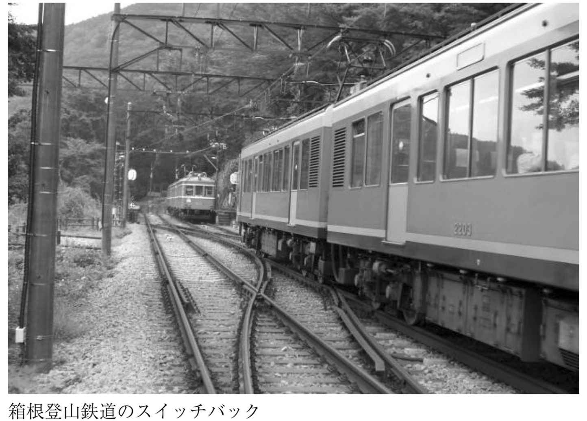
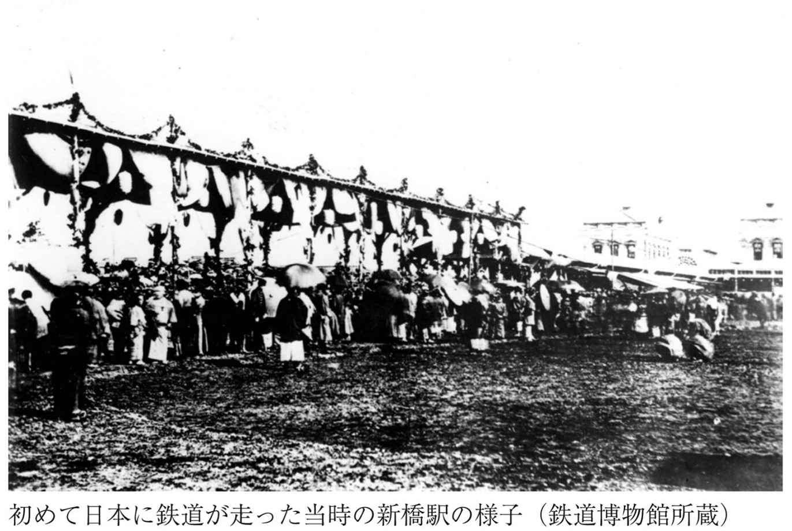
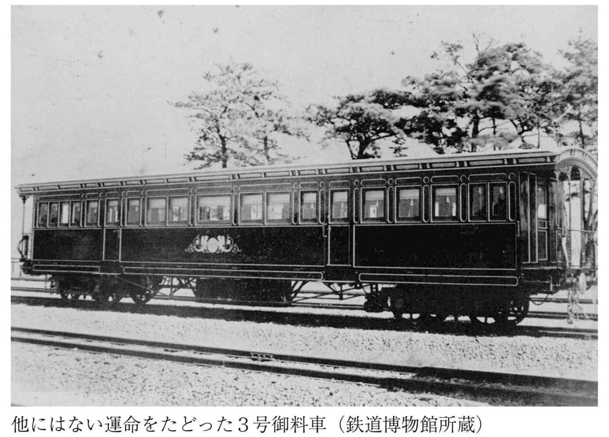
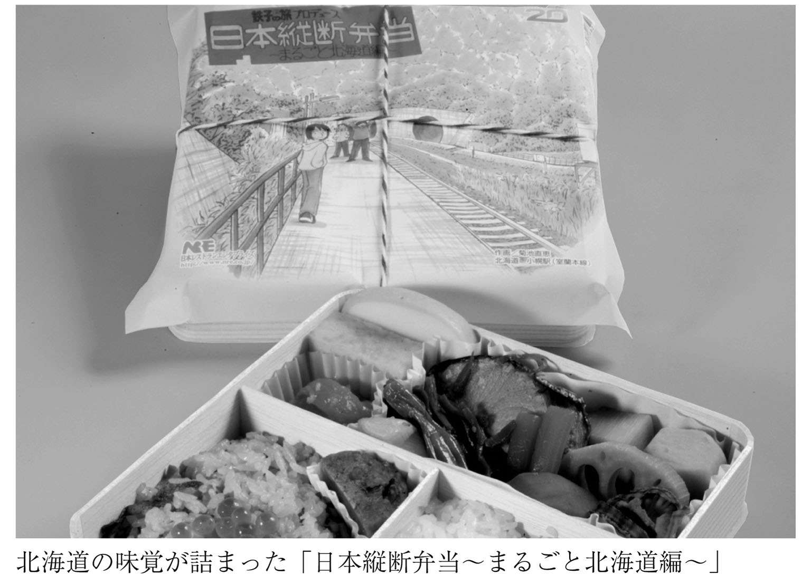

| 鉄道の達人 (竹書房文庫) | |
| Unknown | |
| (2008) | |


鉄道の達人
横見浩彦：監修
この電子書籍は、縦組の底本を元に作成しました。
はじめに
このところ、鉄道ファンを題材としたテレビドラマや、漫画『鉄子の旅』のアニメ化などの影響もあってか、これまで鉄道にさほど関心がなかった人でも、鉄道に目を向けるようになってきたような気がします。
もっとも、今や世界に冠たる鉄道大国となった現在の日本において、鉄道はとても親しみやすくまた身近な存在でもあるため、鉄道に興味を抱くことは何ら不思議ではく、当然と言えば当然のことなのかもしれません。
僕が鉄道に興味を持ち始めたのは、小学校の低学年の頃、１冊の時刻表を手にしたことがきっかけでした。ぎっしりと数字が並んだ分厚い本の中に日本全国の車両情報がつまっているんだ、と時刻表に無限の可能性を感じたのです。
それ以来、鉄道の世界にのめり込むまでになってしまいましたが、知れば知るほどますますその魅力に引き込まれてしまうところが鉄道趣味の奥深さ。そんな醍醐味を皆にもっと知ってもらいたいとの想いから、本書の制作に関わることとなりました。
ひと口に鉄道好きと言っても、車両好き、切符好き、時刻表好きなど、さまざまな分野がありますが、ここでは初心者の方でも親しめるよう、いろいろなジャンルから面白そうなネタを選んでみました。それゆえ、
「そんなことは聞くまでもなく知っている」
「もっと斬新なことを知りたい」
などと物足りなく思う事柄もあるとは思いますが、その反面、
「今さら他人には聞きづらい」
「疑問に思っていたナゾが解決した」
といった知的好奇心も満足させられるよう、トリビア的なことも随所に盛り込んでみました。
本書を手に取ることで、より多くの人が鉄道に興味を持ってくれれば幸いです。
２００８年２月 横見浩彦
『鉄道の達人』 もくじ
本書に記載した情報・規約等は２００８年１月現在のものです。法改正・ダイヤ改正等によって変更が生じる場合がありますのでご注意下さい。
第１章 一度は行ってみたい秘境駅
外界から切り離された究極の「秘境駅」
日本には縦横無尽に鉄道網が張り巡らされており、多くの地域では、その鉄道駅を中心として街が栄えています。しかし中には、このパターンに沿っていない場所もあります。「駅前」だからといって、必ずしもロータリーや商店街があるわけではなく、それどころか「周囲に人家が見あたらない」「近くに道路も走っていない」といったケースもしばしば。
このような駅は、「秘境駅」と呼ばれています。そして鉄道ファンの中には、こうした秘境駅の探訪を趣味とする人も、少なからず存在します。
そんな秘境駅マニアたちが絶賛する「最も秘境度が高い、究極の秘境駅」が、北海道にあります。ＪＲ室蘭本線の小幌駅です。
北海道内でも輸送量の多い室蘭本線にありながら、小幌駅が「日本一の秘境」と呼ばれるのは、そのとんでもない立地から。駅に降り立って周囲を見渡してみれば、東西はトンネルに挟まれており、北は山林、南は海というすさまじい状況。当然のように無人駅で、周辺に人家はなく、駅に到達する車道も皆無。陸路ではたどり着けない、深い大自然の懐に包まれた秘境です。
唯一の探訪手段である鉄道を使うにしても、ここに停車する列車は一日に下りが３本、上りが５本のみ。それ以外の通過列車に乗ると、トンネルを出て次のトンネルに入る一瞬のうちに駅を通り過ぎてしまうため、多くの乗客にとっては存在を確認することすら困難。特急列車の通過時間は、約２秒という短さです。
「なぜこんな場所に駅が必要なのか？ こんな駅を使う人間がいるのか？」
誰もがそう思ってしまうほど外界から隔離された小幌駅ですが、建造された理由はきちんとあります。もともと小幌駅は、保線要員が駅の両側にあるトンネルを点検する時のために造られたものなのです。
また利用客も、ないわけではありません。定期利用者はいないものの、駅の南側に広がる林を獣道に沿って抜ければ、約２００メートルで海の岩場に出られるため、そこで釣りをするために訪れる人がごくまれにいるのです。
列車を降りてホームに立ち、あまりの秘境ぶりに絶句しつつも興奮する。小幌駅は、そんな秘境駅マニアにとって、たまらないスポットです。
１日にたった１本しか列車が来ない駅
鉄道ファンの中には、特に駅に執着のある人や、路線の全駅に降りてみることを目標とする人が少なくありません。休日になると切符を握りしめて列車に飛び乗り、さまざまな駅で下車しては、駅舎やホームを眺めたり周辺を散策して風情を楽しむ......実に楽しい時間です。
しかしこの趣味は、あくまで列車がよく停まる駅でなくては、効率的に楽しむことができません。ある駅で下車したものの、それから何時間も待たないと次の列車が来ないというのでは、長い待ち時間を持て余してしまうからです。
そうした意味で、鉄道ファンを「うぅむ......」とうならせている駅が、北海道遠軽町にあります。「秘境駅」のひとつにも数えられているＪＲ石北本線の上白滝駅です。
現在、上白滝駅に停車する列車は、なんと１日に上り１本と下り１本のみ。朝に下り列車が、夕方に上り列車がそれぞれ１本停車するだけなのです。
つまり上白滝駅を電車で訪れた人は、その日のうちには次の列車に乗れないということ。朝に到着して夕方の列車を待ってから帰るという手が、ないわけではありませんが、その間なんと約10時間。なかなか待てるものではありません。
そこで、上白滝駅を訪れようとする鉄道ファンは、次の手段を選択します。上白滝駅の隣にある白滝駅には１日10本以上の列車が停車するため、まず白滝駅で列車を降り、３キロ以上を歩いて上白滝駅を目指し、ここで列車に乗って帰るという方法です。
ちなみに下りの隣接駅たる白滝駅ではなく、上りの隣駅である上川駅から歩くという方法も理論上はとれるのですが、このルートを歩く人はまずいません。なぜなら上白滝駅から上川駅までの駅間が驚くほど長く、34キロもあるから。実はこの駅間は、２００４年にＪＲ石勝線の新夕張～占冠間に抜かれるまでは、日本にある在来線鉄道の最長駅間距離だったのです。
なぜ、こんなにも上白滝と上川の間が離れているのかにも理由があります。実は以前はこの間に奥白滝、上越、中越、天幕という４駅があったのですが、どの駅も利用者・停車本数が極端に少なく、廃止になってしまったのです。これらと同様に定期利用者が極端に少ない上白滝駅も、「じきに廃止となってしまうらしい」との噂が絶えません。
「あまりに面倒」「でも一度は行ってみたい」と言われる上白滝駅。その探訪を計画するのならば、なるべく早いほうがいいのかもしれません。
築１２０年以上の日本で最も古い駅
１８７２年、日本に初めての鉄道が走って以来、各地に駅が建造され、そして取り壊されてきました。どの駅も、周辺の住民にとって大切な施設ではあったものの、長い年月の間に老朽化が進み、惜しまれつつ姿を消していったのです。
しかし中には、そんな長い時間を乗り越えて、現役を続けている長寿の駅舎もあります。私たちが生まれる遙か以前から、旅客を送り出し、出迎えるという仕事を続けてきた、古い古い駅舎です。
１９９６年まで、全国の鉄道ファンにとって「伝統ある古い駅舎」といえば、まず挙げられたのは京都の二条駅でした。二条駅こそが、歴史的な長寿駅舎の代名詞的存在だったのです。
１８９７年の京都鉄道開業にともなって仮設駅舎として営業を開始した二条駅は、１９０４年に貴賓室を備えた寺社風木造建築に建て替えられました。以来、その荘厳で威風堂々たる姿は、明治時代の代表的な建築物として、多くの人の心を潤してきたといいます。
ですがこの二条駅舎も、１００年近い歳月を経て、いよいよ改築という運命を受け入れざるを得なくなりました。１９９６年の駅の高架化にともない、近代的な駅舎へと建て替えられてしまったのです。現在、この旧二条駅舎は京都市の指定有形文化財に指定され、市内にある蒸気機関車の保存展示施設「梅小路蒸気機関車館」に移築されています。駅舎としての使命は終えたものの、鉄道資料の展示館として今もなお鉄道ファンを出迎えてくれているのです。
さて、二条駅が新しくなって現役最古の座を追われてしまったということは、新たにその座についた駅舎があるということでもあります。そうして現在、注目を集めているのが愛知県半田市にある亀崎駅です。
１８８６年の１月に築造された亀崎駅は、まだまだ現役。何度かの改修を経てサッパリとした姿になってはいますが、その建物は１００年以上が経過した今も木造建築のまま、名古屋のベッドタウン駅として活躍を続けています。１９９６年に二条駅から「現役最古」という称号を受け継いで以来、多くの鉄道ファンがこの亀崎駅を訪れては、記念写真を撮っているようです。
「現役」というくくりを省いて、現存する古い駅舎という観点でのナンバーワンは、この両駅とは別に存在します。滋賀県にある旧長浜駅です。
長浜駅が建造されたのは１８８２年。日本で最初に鉄道が走ってから、わずか10年後のことでした。琵琶湖畔から敦賀までを結ぶ路線の始発駅として、その設計には英国人技師があてられました。当時はまだ珍しかったコンクリート製の洋風２階建て駅舎で、まさに文明開化の時代を象徴する建物です。
現存する日本最古の駅舎として１９５８年に鉄道記念物に指定されたこの旧長浜駅舎は、現在も「旧長浜駅舎鉄道資料館」として一般公開中。駅長室や待合室、出札出入り口など、当時の面影をそのまま残した資料館として、第二の人生を送っています。
重要文化財の駅舎を持つ駅がある！
誰しも、風格ある古い建物を前にすると、思わず襟を正して「おぉ...」などと感嘆のため息をもらしてしまうもの。ことにそれが文化財指定などと聞けば、より心は揺り動かされてしまいます。
日本には無数の鉄道駅があり、それぞれの駅は駅舎を持っています。そして中には、文化財としての指定を受けた駅舎も少なくありません。
最も知名度が高く、多くの人にとってその姿を思い浮かべやすいのは東京駅丸の内口の赤レンガ駅舎でしょう。この駅舎は２００３年に国の重要文化財に指定されました。
１９１４年に建てられた赤レンガ駅舎は、明治・大正期を代表する建造物として、長く人々に親しまれてきました。第二次世界大戦時の空襲によって屋根などが焼け落ち、創建当時とは形が変わってしまいましたが、現在は戦前の姿に復元するための工事が行われています（２０１１年度末に完成予定）。
重要文化財に指定されている現役の駅舎はもうひとつあります。それが福岡県北九州市にある門司港駅。駅舎は東京駅と同じく１９１４年に建てられており、そのデザインはネオ・ルネッサンス様式と呼ばれています。１９８８年には重要文化財に指定され、大正ロマンを感じさせる駅として、今もなお多くの観光客の目を楽しませています。
すでに廃駅となり、現役ではなくなってしまいましたが、島根県出雲市にある大社駅の駅舎も重要文化財です。その特徴は、出雲大社を模した重厚＆壮麗な造り。１９９０年のＪＲ大社線廃止にともなって駅としての使命を終えたものの、ノスタルジックな駅舎は当時のまま保存され、２００４年に重要文化財指定を受けました。
この他にも、三重県の宇治山田駅や香川県の善通寺駅、滋賀県のケーブル坂本駅、ケーブル延暦寺駅、大阪府の浜寺公園駅や水間駅などが、国の登録有形文化財に指定されています。
改札から外に出られない駅がある!?
神奈川県の横浜市鶴見区にある海芝浦駅は、とても特徴ある駅として鉄道ファンに広く名を知られています。
海芝浦駅は、ＪＲ鶴見線の支線の終着駅。名前の通り、海（京浜運河）に面しており、とても眺めが良いことでも有名です。しかし「じゃあ駅周辺の写真でも撮りに......」と海芝浦駅を訪れても、残念ながら駅から外には出られません。ちゃんと改札があり、駅から外に続く道もあるのに、駅から出してくれないのです。
そのため海芝浦駅は「出口のない駅」「駅から出られない駅」として、とても有名な存在になりました。
なぜ駅から外に出ることができないのでしょう？ その秘密は、駅の立地にあります。
実は海芝浦駅は、東芝京浜事務所という企業の敷地内にあります。駅が工場の入り口を兼ねているため、ここで列車を降りて駅の外に出られるのは社員証を持った東芝の従業員か、事業所訪問の許可を得た関係者だけ。そのため一般客にとっては「外に出ることができない駅」になってしまったのです。
その証拠に、ＪＲは東芝に駅敷地の借地料を支払っていますし、海芝浦駅の出口にいるのは駅員さんではなく東芝京浜事業所の守衛さん。あくまでここは、企業の玄関口なのです。
ところが、ここまで特徴的な駅になると、逆に人は集まってしまうもの。
「首都高湾岸線や鶴見つばさ橋を海越しに望む景色が最高」
「一般人は外に出られない珍駅」
「ホームのすぐ下が水面だから、ホームで釣りをしてる人もいるらしい」
......といったふれこみで、外に出られない海芝浦駅を訪れる人は年々増加します。そこで１９９７年、駅内に小さな公園が設けられました。相変わらず一般人は駅を出ることはできませんが、緑の中で海を眺めることができる、清涼飲料水の自動販売機を備えたスポットが駅内に誕生したのです。
こうしてますます話題性を増した海芝浦駅は、２０００年には「関東の駅百選」にも選ばれ、さらに多くのメディアに紹介されるようになったのでした。
海芝浦駅は、珍しいスポットを紹介するテレビ番組などのほか、小説などの舞台にもなっています。たとえば西村京太郎著『運河の見える駅で』という小説は、休日に海芝浦駅を訪れたカップルが巻き込まれた事件を描いたものですし、芥川賞受賞作の笙野頼子著『タイムスリップ・コンビナート』には主人公が電車で海芝浦駅へ向かう様子を幻想的に描写した場面があります。こうした作品を、海芝浦駅の公園で海風に当たりながら読んでみる......というのも一興かもしれません。
一番海に近い駅はどこ!?
海に囲まれた島国ニッポンには、海に隣接する駅がたくさんあります。その中で、いったいどの駅が最も海に近いのでしょうか？
実はこの問いに対して、明確な解答は用意されていません。もちろん、いくつかの駅が候補に挙がるのですが、人によって「ここが一番」という駅が異なるため、「それならそれで」と鷹揚に扱われているのです。
駅構内に「日本一海に近い駅」という表示があったことで知られているのは、新潟県にあるＪＲ信越本線の青海川駅。日本海に面して建造されており、そのホームから眺める夕日は言葉にならないほど美しいとも言われる駅です。
しかし青海川駅は２００７年の新潟県中越沖地震で甚大なダメージを受けてしまいました。土砂崩れでホームや線路が埋まってしまい、その復旧工事の中で「日本一海に近い駅」との表示を掲げた駅舎も撤去されてしまったのです。現在建造中の新駅舎の完成は２００８年３月下旬の予定です。
「改札から外に出られない駅がある!?」で登場した神奈川県のＪＲ鶴見線・海芝浦駅もまた、日本一海に近い駅のひとつ。ホームのすぐ下が水面なため、水際からホームまでの距離の短さはおそらくナンバーワンでしょう。ところが海芝浦駅を「日本で一番海に近い」と言ってしまうと、反対意見が多数寄せられてしまいます。
実は海芝浦駅のホームが面しているのは「海水が流れる運河」なのです。そのため、これを海と見るか川と見るかは人によってバラバラ。「ここが日本一海に近い」「いや、これは海じゃない」......といった白熱した口論が、鉄道ファンの間で繰り広げられることは珍しくありません。
長崎県の島原鉄道にある大三東駅も、青海川駅や海芝浦駅と並んで語られることの多い駅です。有明海ギリギリに建てられた大三東駅では、満潮時には水面がホーム直下にまで押し寄せてくるため、「まるで防波堤の上に駅があるようだ」と錯覚してしまうほどです。
しかしこの駅も「日本一海に近い」と断言するには、ひとつ弱点を抱えています。それは、引き潮の時には海が遠く離れてしまうということ。大三東駅周辺の海岸は遠浅なため、引き潮の時に訪れると波打ち際は何十メートルも向こう側。こんな大三東駅しか見ていない人にとっては、ここを日本一とするには抵抗があるということなのでしょう。
果たして、どの駅が日本で一番海に近いのか......それは、鉄道ファン各人が心に決めるしかないのかもしれません。
駅の中の温泉につかって列車を待つ!?
温泉を特集したテレビ番組や雑誌が人気を呼び、温泉を目的として多くの人が旅に出る......。日本人は、世界トップレベルの温泉好きです。そして日本各地には、温泉好きな私たちの心をつかんで放さない「温泉につかれる駅」が存在します。
最初に温泉が併設されたのは、長野県の上諏訪駅でした。１９８６年、国鉄の長野鉄道管理局が提唱した「一駅一名物」キャンペーンの一環として、なんとホームに露天風呂が造られました。
この日本初となる駅ホーム露天風呂はさかんにマスコミにとりあげられ、全国的な知名度を獲得。「一駅一名物」というキャンペーンの枠を越えた観光名所として、鉄道ファン以外の一般観光客までが押し寄せてきたといいます。
しかし現在、残念ながら上諏訪駅に露天風呂はありません。老朽化が進んだ２００２年に足湯へと改修され、より気軽に利用できるスポットとして生まれ変わったのです。
さて、上諏訪駅でお風呂につかれないのは残念ではありますが、全国には上諏訪駅の成功に影響を受けて誕生した温泉駅がたくさんあります。そのいくつかをご紹介しましょう。
岩手県にある、ほっとゆだ駅には、１９８９年に温泉入浴施設が併設されました。大きく「ゆ」と染め抜かれたのれんがかかった駅舎の中で、ゆったり温まりながら列車を待つことができます。ここの名物は浴室内に取り付けられた、鉄道の信号機を模したランプです。次の列車の出発時間を知らせてくれる信号機は、30分～45分前は青色が、15分～30分前は黄色が、15分前からは赤色が点灯。温泉につかっていたせいで列車に乗り遅れることがないように、という心憎い演出です。
群馬県の風光明媚な渓谷沿いを走るわたらせ渓谷鐵道の水沼駅もまた、有名な温泉駅です。駅舎に併設された温泉センターには、大きな窓から絶景を眺められる浴室のほか、大きな露天の岩風呂も完備。休憩室やカラオケを歌える宴会場までありますから、心ゆくまで癒しの時間を楽しむことができます。
このほかにも、童話に登場するお城のようなメルヘンチックな駅舎で知られる秋田県の阿仁前田駅や、同じく中世ヨーロッパの宮殿風のメルヘンな駅舎を持つ山形県の高畠駅、日本の城郭をイメージした駅舎が渋い熊本県の阿蘇下田城ふれあい温泉駅など、温泉併設駅は日本各地に続々と誕生しています。
「今度の休みには、駅併設の温泉を巡ってみよう」
......これぞ、世界有数の温泉湧出国に生まれた鉄道ファンだけに許された、特権的な楽しみかたなのかもしれません。
訪れた人は拍手をひとつ...「鳴龍」に守られた駅
「鳴龍」とは、日光東照宮の薬師如来を祀る重要文化財・本地堂の天井に描かれた龍の絵のこと。龍の真下で拍子木を打つなどして音を立てると、その反響音がまるで龍の鳴き声のように聞こえるために名付けられました。
この鳴龍を、構内に再現した駅があります。それは、日光東照宮からもほど近い日光駅。駅の入り口にある車寄せのひさしに龍の絵が描かれています。
東照宮のそれとはだいぶ異なる現代風のタッチで描かれていますが、日光駅の名物のひとつとして鳴き声を聞かせてくれるため、毎日多くの観光客がこの下で「パン！」と手を鳴らしては喜んでいます。
日光駅の見所は、鳴龍だけではありません。まずは、駅舎自体が絶好の被写体という点が挙げられます。１８９０年に建造され１９１２年に改築された駅舎は美しい白亜の洋館ですから、駅周辺を見渡してみると、カメラを抱えて構図を考えているファンをいつも見かけることができます。
またこの駅には、お召し列車で到着した皇族や外国の要人の休憩所として利用された貴賓室が設けられてもいます。ネオ・ルネッサンス様式の室内には大理石の暖炉や、大正、昭和天皇が愛用されたソファなどが置かれており、ゴールデンウィークなど利用客の多い時期に期間限定で公開されています。
このほか、「ホワイトルーム」と呼ばれる一等待合室なども備えた日光駅は、１９９７年には「関東の駅百選」に選ばれました。威厳を備えながらも気品漂う駅として、高い人気を誇る駅なのです。
地中深くにホームがある日本一のモグラ駅
「日本一のモグラ駅」といえば、群馬県にあるＪＲ上越線の土合駅。熱心な鉄道ファンからは「知らなきゃモグリ」と言われてしまうほどポピュラーな存在です。
土合駅がモグラと称されるゆえんは、この駅の構造にあります。
日本百名山のひとつ谷川岳の登山口としても利用される土合駅は、標高６５３メートルの山中に位置しています。もちろん地上には駅舎と改札があり、上り線のホームも造られているのですが、なぜかここには下り線のホームがありません。
実は土合駅の下り線ホームは、地中深くを通るトンネル内にあります。その深さは、なんと地下70メートル。４８６段もある階段を下りなければ、たどり着くことができません。これは、成人男性でも約10分はかかるという長い道のりです。
この点に注意を促すため、実は時刻表の上越線ページの隅には、次のような一文が記されています。
《ご注意》土合駅は改札から下りホームまで約10分かかります。
何も知らずに「列車の時間だ」と発車ギリギリに駅に駆け込んでも、下り線のホームは遥か遠いため、異例の注意書きが印刷されているのです。
しかし、もっと大変なのは下り列車でこの地中ホームに到着して、改札までの階段を登る人でしょう。なにしろ４８６段の階段は、並大抵ではありません。足腰や心臓が弱い人にはかなりの負担となりますから、「土合駅のモグラっぷりをちょっと拝見」というツアーには、相当の覚悟が必要です。
ちなみに、長い階段の脇には、数メートルのスペースがとってあります。実はこれは将来のエスカレーター設置を見越して残されたスペース。ところがその設置計画が実現に至っていないため、今はただサラサラと地下水が流れるだけとなっています。
階段を登りながら文句を言ってもエスカレーターがポンと現れるわけもありませんから、今のところは水音で少しでも心を癒やしながら、気力と体力を振り絞って自力で昇降するしかないようです。
特牛、安足間、及位...さて何と読む!?
全国を旅して回ったり、地図帳を眺めたりしていると、時折「これ何て読むんだろう？」と首をかしげてしまうような、難しい地名に出会うことがあります。
トリビアとして頭にとどめておくもよし、友人や知人に出題してみるもよし......。ここでは、そんな難読漢字の駅を一挙に紹介しましょう。
○安足間《あんたろま》......北海道上川郡・ＪＲ石北本線
○晩生内《おそきない》......北海道樺戸郡・ＪＲ札沼線
○雄信内《おのっぷない》......北海道天塩郡・ＪＲ宗谷本線
○国縫《くんぬい》......北海道山越郡・ＪＲ函館本線
○咲来《さっくる》......北海道中川郡・ＪＲ宗谷本線
○占冠《しむかっぷ》......北海道勇払郡・ＪＲ石勝線
○信砂《のぶしゃ》......北海道増毛郡・ＪＲ留萌本線
○美唄《びばい》......北海道美唄市・ＪＲ函館本線
○和寒《わっさむ》......北海道上川郡・ＪＲ宗谷本線
○驫木《とどろき》......青森県西津軽郡・ＪＲ五能線
○撫牛子《ないじょうし》......青森県弘前市・ＪＲ奥羽本線
○艫作《へなし》......青森県西津軽郡・ＪＲ五能線
○笑内《おかしない》......秋田県北秋田市・秋田内陸縦貫鉄道 秋田内陸線
○花原市《けばらいち》......岩手県宮古市・ＪＲ山田線
○左沢《あてらざわ》......山形県西村山郡・ＪＲ左沢線
○及位《のぞき》......山形県最上郡・ＪＲ奥羽本線
○愛子《あやし》......宮城県仙台市・ＪＲ仙山線
○曽波神《そばのかみ》......宮城県石巻市・ＪＲ石巻線
○沢入《そうり》......群馬県みどり市・わたらせ渓谷鐵道 わたらせ渓谷線
○安食《あじき》......千葉県印旛郡・ＪＲ成田線
○酒々井《しすい》......千葉県印旛郡・ＪＲ成田線
○沢渡《さわんど》......長野県伊那市・ＪＲ飯田線
○為栗《してぐり》......長野県下伊那郡・ＪＲ飯田線
○大嵐《おおぞれ》......静岡県浜松市・ＪＲ飯田線
○水窪《みさくぼ》......静岡県浜松市・ＪＲ飯田線
○上枝《ほずえ》......岐阜県高山市・ＪＲ高山本線
○石動《いするぎ》......富山県小矢部市・ＪＲ北陸本線
○動橋《いぶりはし》......石川県加賀市・ＪＲ北陸本線
○平城山《ならやま》......奈良県奈良市・ＪＲ関西本線
○祝園《ほうその》......京都府相楽郡・ＪＲ片町線
○私市《きさいち》......大阪府交野市・京阪電気鉄道 交野線
○放出《はなてん》......大阪府大阪市・ＪＲ片町線
○朝来《あっそ》......和歌山県西牟婁郡・ＪＲ紀勢本線
○寒河《そうご》......岡山県備前市・ＪＲ赤穂線
○土師《はじ》......鳥取県八頭郡・ＪＲ因美線
○温泉津《ゆのつ》......島根県大田市・ＪＲ山陰本線
○特牛《こっとい》......山口県下関市・ＪＲ山陰本線
○厚保《あつ》......山口県美祢市・ＪＲ美祢線
○大歩危《おおぼけ》......徳島県三好市・ＪＲ土讃線
○丹生《にぶ》......香川県東かがわ市・ＪＲ高徳線
○五十崎《いかざき》......愛媛県喜多郡・ＪＲ内子線
○半家《はげ》......高知県四万十市・ＪＲ予土線
○現川《うつつがわ》......長崎県長崎市・ＪＲ長崎本線
○調川《つきのかわ》......長崎県松浦市・松浦鉄道 西九州線
○南風崎《はえのさき》......長崎県佐世保市・ＪＲ大村線
○浅海井《あざむい》......大分県佐伯市・ＪＲ日豊本線
○大畑《おこば》......熊本県人吉市・ＪＲ肥薩線
○指宿《いぶすき》......鹿児島県指宿市・ＪＲ指宿枕崎線
○財部《たからべ》......鹿児島県曽於市・ＪＲ日豊本線
一般的には「難しい」「読めない」と言われることの多い難読地名ですが、駅名になっているということは、鉄道ファンにとっては知名度が高いという意味でもあります。難読駅、あなたはいくつ読めましたか？
駅長が２人いる駅の不思議
お店でトラブルが発生。客が「責任者を出せぇ！」とゴネると初老の紳士が現れて「私が店長です」というのは普通の話。なぜか２人の店長が現れて「私が店長です」「いや私こそが真の店長です」というのはコントの話......のはずですが、実は広い日本には、こんな妄想を喚起する「２人駅長体制」をとっている駅があります。
その代表格として語られることが多いのは、１０００人以上という日本最多の駅員を抱える東京駅。しかし東京駅に駅長が２人いるのは、なにも駅員の数が多いからではありません。実は１９８７年に国鉄が民営化される際、いろいろなしがらみから、このような体制がとられることになったのです。
もともと東京駅の駅長とは、１人で務める役職でした。ところが国鉄がＪＲに分割された時に、ちょっとした問題が起こります。新幹線がどのＪＲに属するかが定められ、東海道新幹線はＪＲ東海の管轄となったのです。
これによって、東京駅内には在来線や東北・上越新幹線を営業するＪＲ東日本と、東海道新幹線を営業するＪＲ東海が同居する形になります。そして「だったら駅長もそれぞれに」という意見が採用され、現在の体制ができあがったというわけです。現在でも東京駅内にはＪＲ東日本とＪＲ東海それぞれの駅長室があり、駅員の制服も、社によって異なります。東京駅を歩く機会があったら、それぞれの駅員の制服に注目してみてください。
実はこのような複数駅長体制の駅は、東京駅のほかにもあります。たとえば小田原駅や京都駅、新大阪駅、博多駅など......。すべて新幹線が通る駅であり、駅長が複数いる理由も、東京駅のそれと同じです
原宿駅にある幻の「宮廷ホーム」
東京・ＪＲ山手線の原宿駅といえば、若者の街の玄関口として、オシャレで新しい駅舎を想像してしまう人もいるかもしれませんが、実はそんなことはありません。１９２５年に建てられた原宿駅の駅舎は、なんと東京都内に現存する最も古い木造駅舎なのです。
そのうえ原宿駅には、他にはない特徴があります。それが、俗に「宮廷ホーム」と呼ばれる皇族専用ホームの存在です。
新宿寄りの位置にあり、金網に覆われて一般人の立ち入りが禁止されているこのホームは、正式には「原宿駅側部乗降場」といい、１９２６年に建造されました。病弱だった大正天皇が静養に出るために造られたものです。また、単独利用は今上天皇にしか許されていません。
もちろん通常の列車の発着に使われることはなく、用途はいわゆる「お召し列車」の発着用。その昔には、このホームを利用する天皇を内閣総理大臣や衆議院・参議院議長、最高裁判所長官、国鉄総裁などが見送るという光景が何度も見られていましたが、最近ではめっきり使われなくなってしまいました。２００８年２月時点で、この宮廷ホームが最後に利用されたのは２００１年８月となっています。
過去には何度か一般公開されたことがあり、車両展示のイベントが催されたこともある宮廷ホームは、金の装飾が施された白木の門が目印です。機会があったら、乗車している列車の中からでも、宮廷ホームを眺めてみてはいかがでしょうか。
「１番線」はどう決まる？
列車の到着を待つ時に、必ずしなければならないのは、ホーム番号の確認です。特に、たくさんのホームを備えた駅の場合、目的の列車が何番線のホームに入ってくるのかをアナウンスや場内表示で確認しておかないと、まるで見当違いの列車に乗り込んでしまう可能性が出てきます。
では、こうしたホームの番号はどのように決められるのでしょうか？
実はこれには、一定の法則が存在します。とはいっても、全国に１万近くある駅のすべてで適用されているルールはありません。大抵は駅が所属する鉄道会社が採用するルールにのっとって決められており、その中にも〝例外〟が多く含まれているのが現状のようです。
最も一般的な決め方は、ＪＲや東武鉄道が採用する「駅長室のある建物の側から順に１番線・２番線......とする」というもの。駅長室のある建物とは、駅舎の中でも主体の建物という意味で「駅本屋」と呼ばれています。
ただし最近は駅が高架化されて駅長室がホームの真下になったり、橋上化されてホームの真上になったりする駅が増えています。そんな駅では、開業時につけられた番号をそのまま流用しているようです。
また、後からホームが増設され、それが１番線よりも駅長室側だったという事もしばしば。こんな場合には、全部のホーム番号を付けなおしたり、新ホームを０番線と命名しているようです。
他の決め方としては「下り線側を１番線とする（京王電鉄や小田急電鉄、名古屋鉄道、近畿日本鉄道など）」というものや「海に近い側を１番線とする（京浜急行電鉄や相模鉄道など）」「北側あるいは東側から（阪神電気鉄道）」「信号操作施設のある側から（西武鉄道）」などなど......。鉄道会社ごとに、さまざまなルールが設定されているようです。
年２日営業の駅って!? ～いろいろな駅の種類～
通勤や通学などで、多くの人が日常的に利用している鉄道の駅ですが、ひとくちに「駅」と言っても、実はいろいろな種類があります。
最もなじみの深い駅は、列車に乗るお客さんが乗降するための「旅客駅」。ほとんどの人が「駅」と言われてイメージするのは、この旅客駅でしょう。
しかし、お客さんが乗り降りする以外にも、駅の使い道はあります。それは貨物の積み降ろし。鉄道路線には、私たちが通勤・通学や旅行で利用している列車のほかに、コンテナなどで貨物を運ぶ貨物列車が運行されています。そして路線上には、旅客駅のほかに、貨物列車が運ぶ貨物を取り扱うための「貨物駅」が設置されているのです。
駅の分類は、これだけでは終わりません。私たちが日常的に利用している旅客駅も、さらに細かく分類されています。
分類方法の第一は、営業期間について。ついつい「駅は通年営業されているのが当たり前」と思ってしまいがちですが、中にはそうでない駅もあります。
たとえば茨城県にある鹿島サッカースタジアム駅。この駅は、すぐ近くにあるスタジアムでサッカーの試合がある日しか乗り降りができません。また香川県の海辺にある津島ノ宮駅は、一年のうちで津嶋神社のお祭りが行われる８月４日と５日の２日間しか営業しない駅として知られています。このような駅は、通年営業されている駅に対して、「臨時駅」と呼ばれています。
駅は営業形態によっても分類されます。やや専門的な話になりますが、その区分は４つあります。
①鉄道会社所属の駅員が常勤している「直営駅」
②複数会社路線が乗り入れている駅で、業務を１社が請け負っている「業務委託駅」
③乗車券販売や改札の業務を駅前の商店などが請け負う「簡易委託駅」
④駅員がおらず、外部への業務委託もされていない「無人駅」
駅のホームで電車が来るまでの間などに、自分が普段利用している駅は、どのように分類される駅なのかを考えてみるのも、面白いでしょう。
ＪＲの乗務員が使う目覚まし珍グッズ
日本の鉄道は、世界中で最も時間に正確と評されることがあります。これはもちろん、一旅客としてはうれしいことですし、鉄道関係者にとっては誇れることでしょう。しかし一方で、こうした評判はプレッシャーと表裏一体の関係にあります。日本の鉄道員は、「世界で一番時間に正確でなくてはならない」という有形無形の圧力と、戦い続けなければならないのです。
たとえば列車の乗務員は、その列車の発車時間に遅れることは許されません。始発であろうが終電であろうが、搭乗する列車の運行時間には制服を着こんでホームに現れなければ「失格」の烙印を押されてしまいます。頭をポリポリかきながら「寝坊して遅れました」とおちゃらけたところで、誰も笑って許してはくれません。
そんな遅刻厳禁な鉄道世界で重宝されている目覚ましグッズがあります。自動起床装置というカテゴリに属するその秘密兵器の名前は「おこし太郎」。多くの機関で実際に使用されている便利な道具です。
「おこし太郎」が主に使われているのは、ＪＲなどの乗務員宿泊施設。ここで出勤時間に備えて寝ている乗務員を、時間通りに起こすために利用されています。
とはいえ「おこし太郎」は「ジリリリリン！」と大きな音を立てるタイプの目覚ましグッズではありません。乗務員宿泊施設には多くの人が寝泊まりしており、各人の起きる時間はバラバラ。大きな音を出して、他の人を起こしてしまうような迷惑はかけられないのです。
「おこし太郎」は、空気の力を使って静かに目覚めを促す機械で、タイマーと送風機、送風ホース、そして空気袋から構成されています。一見すると、コンプレッサーのついた小さめの布団乾燥機のような形です。
この空気袋を布団の下に入れておけば、セットした時間になると送風機から送られる空気で袋がふくらみ、腰が持ち上げられて目が覚めるというしくみになっています。もちろん一度で起きない人のために、数秒間隔でふくらんだり縮んだりする機能も搭載。大きな音をたてずに、ターゲットだけを起こそうという工夫がこらされています。
列車や駅で落としたモノはどこへ行く？
「あれ？ 財布がない。駅で落としたのかな!?」
「電車に大切な書類を置き忘れた！ ついでに傘も置いてきた！」
日本全国の駅や列車で、忘れ物や落とし物は後を絶ちません。こうしたものは、いったいどこへ運ばれて、どのような運命をたどるのでしょうか。
たとえば列車の中に置き忘れられた傘があった場合。この傘は、見つけてくれたお客さんか、車内を巡回する車掌の手によって、どこかの駅に届けられます。
届けられた駅で、傘は数日の間は保管されますが、いつまでもそこに置いてあるわけではありません。数日のうちに落とし主が現れなかった遺失・拾得物は、各地にある「忘れ物センター」のような集約場所に送られます。もし落としたものが最寄り駅に連絡しても見つからないという場合は、管轄の集約場所を聞いてそちらに連絡してみれば、見つかるかもしれません。
さらにしばらく待っても持ち主からの連絡がないものは、いよいよ警察へ。各都道府県警察の遺失物管理所に預けられて、またしばらくの間、持ち主が現れるのを待つことになります。その期間は６カ月。この間に落とし主が現れなかった遺失・拾得物については、落とし主の所有権が失効し、国のものとなってしまいます。
国の所有物となった「鉄道の忘れ物」が、時を経て表世界に出てくることもあります。鉄道関係のイベントで「忘れ物即売市」などが開かれ、そこで取り扱いされるのです。また２００３年には、東京の中野ブロードウェイに「鉄道忘れ物市」というショップもオープン。傘や財布、バッグ、おもちゃのような〝よくある忘れ物〟から、ベルトやスカートやマネキン、松葉杖のような「なんでこんなものを!?」と思えるようなものまでが、幅広く展示販売してあります。
こうした店で売られているのは、国の所有物となったあとで、保管期限が切れて放出され、民間に払い下げられたもの。つまり落とし物は最終的に国からも売り払われ、その料金は国庫に入るしくみとなっているのです。
実はこうした業者は日本各地にあるといいます。国から安く大量に仕入れて、売り物になるかどうかを選別し、適正な価格をつけて販売する。身近ながらも、一般人にとってはあまり知る機会のないリサイクル事業です。
たまには、こうしたショップで「ちょっといい話」が誕生することもあるようです。電車の中で落とした物を探し続け、ついに忘れ物市でご対面。「ようやく取り戻せた」と大喜びする人もいるのだとか。ただしその時には、すでに所有権が失効しているため、ただ「よかった」と持ち帰るわけにはいきません。お金を払って「買い戻す」しかないという点が、ちょっとした哀しみを誘います。
Ｃｏｌｕｍｎ 駅のナンバーワン
日本中にたくさんある駅の中から、さまざまな分野でのナンバーワンを見てみましょう。
まずは位置的に東西南北の極にある駅から。最北端の駅はＪＲ宗谷本線の稚内駅（北海道）、最東端はＪＲ根室本線の東根室駅（北海道）、最西端はゆいレールの那覇空港駅（沖縄県）、最南端もゆいレールの赤嶺駅（沖縄県）です。沖縄と北海道が２駅ずつ分け合う形になっています。
日本一高い場所にあるのは、立山トンネルトロリーバスの室堂駅（海抜２４５０ｍ）です。普通鉄道の駅で見てみると、ＪＲ小海線の野辺山駅（海抜１３４５ｍ）が最高所です。
一方で最も低いところにある駅は、海面下１５０ｍにあり外に出られない駅、ＪＲ海峡線の吉岡海底駅になります。
駅名が日本一長い駅は、南阿蘇鉄道高森線の「南阿蘇水の生まれる里白水高原駅」。ちなみに第２位は鹿島臨海鉄道大洗鹿島線の「長者ヶ浜潮騒はまなす公園前駅」です。実はどちらもひらがなだと22字ですが、漢字を使った正式表記の文字数により順位が決定しました。
日本一短い駅名は、表記のしかたによって結果が異なります。読みでいえば、三重県にある津駅の１文字１音が最も短いといえます。ですが、ローマ字で最短の２文字となるのは、能生［ｎｏ］駅、粟生［ａｏ］駅、小江［ｏｅ］駅、飯井［ｉｉ］駅、頴娃［ｅｉ］駅、大江［ｏｅ］駅、国府［ｋｏ］駅（名古屋鉄道）......と、これだけの候補が挙がります。
第２章 これが新三大車窓だ！
すでに走っているリニアモーターカーがある!?
リニアモーターカーといえば、先進テクノロジーを使った次世代の列車というイメージが強いかもしれません。しかし日本各地には、すでに実用化され営業運転を開始しているリニアモーターカー路線がいくつもあるのをご存じでしょうか。
実用段階にあるリニア路線の解説をする前に、まずはリニアモーターカーそのものの仕組みについて説明してみましょう。
リニアモーターカーの「リニア」とは、「直線状の」という意味の英語です。ですからリニアモーターカーとは、直訳すれば「直線状のモーターを使った車（列車）」ということになります。
通常、列車の走行に使われるモーターは回転式と呼ばれる円形のもので、直線状ではありません。通常のモーターは、磁石の中で反発力により軸が回転することでパワーを生み出します。しかしリニアモーターは、通常のモーターを切り開いて直線状に伸ばし、その半分を車体に、残る半分を地上のレールに敷くという形式をとります。こうして車体とレールの間に生まれる反発力を用いて走行するのです。
そんなリニアモーターカーには、大きく分けて２つの種類があります。「浮上式」と「鉄輪式」です。
「浮上式」とは、一般的にイメージされているリニアモーターカーの姿といっていいでしょう。磁石の反発力によって車両を浮かせ、超スピードで走行する方式です。
一方の「鉄輪式」とは、「浮上式」に比べると必要な技術レベルもコストも低く済むという方法。磁石の反発により推進力を得るものの、車体は浮かせず、レールと車輪を使って走ります。
もうお分かりでしょう。冒頭で紹介した、すでに営業運転を開始しているリニアモーターカーとは、この鉄輪式リニアのことなのです。
鉄輪式リニアには、通常の電車と比べていくつかの利点があります。その第一はモーターが平らになり、しかもその半分をレールに敷いているために床下スペースが小さくて済む......つまり列車の車両を小さくできるという点です。
このメリットは、地下鉄でより顕著に現れます。掘削するトンネルの断面積を小さくできるため、大幅にコストを削減できるのです。実は都市部では地下鉄のトンネルを１キロ掘り進めるのに約２００億円が必要になるといいますから、これを削減できるメリットは無視できません。
またリニア方式で走行する列車は、通常モーターで走行する列車に比べて、坂道や急カーブをスムーズにクリアできるのも利点のひとつで、これまた地下鉄向きなポイントです。新造の地下鉄は、地下深くを走るためにどうしても急勾配の区間が長くなりがちですが、そこを苦にせず走行できるからです。
まさに地下鉄のための方式ともいえそうな鉄輪式リニアは、１９９０年に大阪市営地下鉄長堀鶴見緑地線で、その翌年には東京都営地下鉄大江戸線で採用されました。以後も続々と建設され、すでに開業している神戸市営地下鉄海岸線や福岡市地下鉄七隈線、大阪市営地下鉄今里筋線のほか、現在は横浜市営地下鉄グリーンラインと仙台市営地下鉄東西線が建設中です。
さて、鉄輪式の路線が続々と開通する一方で、「まだまだ実用段階じゃないのか」と思われがちな浮上式リニアですが、実はこちらも営業運転を開始した路線が現れ始めています。
日本初の浮上式リニア実用路線は、名古屋にあります。愛知高速交通東部丘陵線（愛称・リニモ）です。この路線は２００５年に開催された愛知万博のアクセス路線として建設され、万博終了後に地域輸送路線となりました。
残念ながら営業最高速度は時速１００キロと超高速ではありませんが、地上から浮いて走る感覚が味わえる、日本唯一の路線です。
現在、超高速で走る浮上式リニアモーターカーの商業運転が行われているのは中国の上海だけ。上海浦東国際空港へのアクセス路線が、ドイツ生まれのトランスラピッドという方式の浮上式リニアを採用し、最高速度４３０キロで運転しています。
実は２００７年までは、日本でも時速５００キロのリニアモーターカーに乗るチャンスが残されていました。ＪＲ東海とＪＲ総研が共同で実験を行っている、山梨県のリニア実験線では、時速５００キロの世界を体験できる試乗会を実施していたのです。しかし残念ながら、この試乗会もすでに終了。手っ取り早く超高速リニアを体験するには、やはり中国まで出向かないといけなくなってしまいました。
秋田新幹線と山形新幹線は新幹線じゃない!?
現在、日本には東海道、山陽、東北、北陸、九州、秋田、山形と６つの新幹線が走っています。......と言いたいところですが、実はこの文章には間違いが潜んでいます。秋田新幹線と山形新幹線と呼ばれている路線は、新幹線としての条件を満たしておらず、新幹線とは認められないのです。
では一体、秋田と山形の新幹線は何なのでしょう？ 鉄道業界では、この２つの路線をミニ新幹線と呼んでいます。そして、これに対して他の新幹線はフル規格新幹線と呼びます。これはどういう意味なのでしょうか。
山形新幹線は福島～新庄間を、秋田新幹線は盛岡～秋田間を結んでいますが、福島と盛岡は、どちらも東北新幹線の駅。これが問題のヒントとなります。
実はミニ新幹線とは、在来線のレール間隔（軌間）を広げて、新幹線路線から車両が直接乗り入れできるようにした、「在来線」に区分けされる路線なのです。
フル規格の新幹線とそれ以外の在来線の違いの中で最も大きなものは、制限速度、そして軌間が挙げられます。新幹線の定義は「主たる区間を時速２００キロ以上で走れる鉄道」というものですが、新幹線の路線や車両は、そのために他の路線や車両よりも軌間を広くとってあるのです。
福島～新庄間（山形新幹線）と盛岡～秋田間（秋田新幹線）は、新幹線と軌間を同じくすることで、乗り換えなしの直接乗り入れを可能にし、所要時間の短縮を狙った路線です。ですがこの区間は、あくまで在来線。最高時速は１３０キロ程度に定められています。そのため東北新幹線区間では２００キロ以上で走っていたミニ新幹線車両も、山形（秋田）新幹線区間ではスピードを落とさなければなりません。
また新幹線区間と在来線区間では、車両サイズの上限（車両限界）も異なります。そのため山形新幹線と秋田新幹線を走る車両は、フル規格の新幹線車両と比べて、一回りミニサイズ。これがミニ新幹線という名前の由来です。そして当然、フル規格の新幹線車両は、在来線を走るには車両サイズが大きすぎて規格違反になってしまうため、ミニ新幹線の区間を走ることはできません。
「山形新幹線」「秋田新幹線」という名称は、あくまで俗称にすぎず、この２つの路線と車両は、ミニ新幹線という呼び名を持つ在来線だったのです。
くりはら田園鉄道・２日間だけの復活劇
２００７年４月１日、宮城県内で人々に愛されてきたあるローカル線が、惜しまれつつも廃止となりました。１９２１年に鉱石輸送のために開業した、くりはら田園鉄道です。
「くりでん」の愛称で親しまれた同路線は、鉱山で産出した鉱石の輸送を主に行っていました。しかし鉱山の閉山以降は苦しい経営状態が続き、第三セクター化や電化の廃止など、さまざまな手段が講じられたものの利用者の減少には歯止めがかからず、廃止に追い込まれてしまったのです。
ですがくりでんは、鉄道ファンからは人気の高い路線でした。宮城県内有数の米どころを走り抜けるため、車窓から見るのどかな田園風景は、見る者すべての心をゆさぶるほどの絶景。秋の日に、夕陽に照らされて黄金色に輝く稲穂の中を、１両編成のディーゼルカーが走るさまなどは、まるで、映画のワンシーンのような美しさと讃えられたものです。
また景色だけではなく、タブレットや腕木式信号機が現役で活躍していたことでも知られ、そうした古い機器に目がない鉄道ファンからの支持も高い路線でした。
３月31日、くりでんの最終運行日の沿線には、別れを惜しむたくさんの人々が詰めかけました。そしてさよならの式典が行われ、最後の列車が満員で出発。涙雨とともに、約90年にもわたる歴史に幕が下ろされたのです。
「これで、くりでんには二度と乗れないのか......」
多くの鉄道ファン・くりでんファンはそう思っていました。しかし同年秋、ファンにとってはにわかに信じられない情報がアナウンスされます。
栗原市とくりはら田園鉄道社、そしてくりでんを愛するＮＰＯが手を組んで、２日間だけくりでんを復活運行させてくれるというのです。「くりでん体験乗車会」という名前のそのイベントは、11月に開催される栗原市の「らずもねぇ祭り」のアトラクションの一部として、集客増をはかるとともにくりでんの産業遺産価値をアピールするために行われました。
当日、くりでんの沿線にはまたもたくさんの人が集まりました。時速15キロで駅の構内５００メートルほどを行ったり来たりするだけの１回15分ほどの乗車とはいえ、復活したくりでんのために、子供からお年寄りまでが押し寄せてきたのです。
この２日間で、再びくりでんの車両に乗車したのは約１０００人。どの人も、心から嬉しそうな、そして少し憂いを帯びた笑顔を見せていたそうです。
「一度は行きたい」絶景の日本三大車窓
日本中に縦横無尽に張り巡らされた鉄道網の中で、最も美しい景色を堪能できる「日本三大車窓」のポイントがあると聞けば、鉄道ファンならずとも心躍ってしまうもの。やはり絶景とは、無条件に人の心に響くものなのでしょう。
日本三大車窓のひとつめは、自然の宝庫・北海道にあります。場所はＪＲ根室本線の落合～新得駅間。鉄道ファンからは「狩勝峠越え」と呼ばれているポイントです。
「狩勝峠越え」は、緩やかな大地の稜線と太平洋が雄大かつ美しい景色のコントラストを奏でてくれるスポットです。......しかし実は、ここが三大車窓のひとつとして乗客の心をつかんでいたのは今から40年以上も前の話です。なぜなら、１９６６年にこの区間にトンネルが開通し、線路の付け替えが行われたせいで、以前とは違うルートになってしまったから。つまり車窓から見える風景が一変してしまったということで、実に残念な話です。
三大車窓のふたつ目は、まだまだ現役の絶景です。場所は長野県の山間部を走るＪＲ篠ノ井線の姨捨駅付近。眼下に広がる長野盆地（善光寺平）と、その中央を流れる千曲川を望むことができます。
姨捨からの眺望は、夜もおすすめ。星空の下に広がる美しい夜景に、思わずウットリしてしまうことうけあいです。また、列車が走行中に最も景色が良い地点を通り過ぎるのではなく、絶景ポイントが駅にあり、さらに姨捨駅では通過待ちなどのために長時間停車する列車が多いのもありがたい点といえます。その間にホームに出て、思う存分景色を楽しむことができるのですから。
三大車窓のラストを飾るのは九州・ＪＲ肥薩線の矢岳～真幸駅間。ここは俗に「矢岳越え」と呼ばれている展望ゾーンです。
肥薩線の最高所である矢岳駅から真幸駅へと下る途中で車窓に目をやると、そこには加久藤盆地と宮崎県えびの市の町並みが広がっています。さらに鉄道ファンを喜ばせるのは、矢岳駅の隣にある大畑駅の存在でしょう。実は大畑駅は、スイッチバック施設とループ線を併せ持つ、日本唯一の駅。難読駅ながらも、その知名度は全駅中でもトップクラスに君臨するという、マニア垂涎の「一度は行きたい駅」のひとつなのです。
新たに制定！ 海のパノラマ三大車窓
前項では、旧国鉄時代に定められたという日本三大車窓を紹介しました。しかしこの日本三大車窓を見ていくと、ひとつ気になることが頭をよぎります。それは三大車窓のすべてが「山の景色」だという点。海に囲まれた日本には、海岸に沿った路線もたくさんあるというのに、もったいない話ではありませんか。
そこで、本書では独断と偏見で「海の三大車窓」を提唱してみたいと思います。
まず挙げたいのは、本四備讃線です。......というと、どこのことか分からない可能性もありますので、路線の愛称で改めて紹介しましょう。本四備讃線とは、瀬戸大橋線のこと。もちろん眺望ポイントは、瀬戸大橋の両端にある児島駅と宇多津駅の間、つまり瀬戸大橋上です。
青く美しい瀬戸内海に散らばる小さな島々を見ながら味わう旅気分は、まさに極上。瀬戸大橋からの眺めは、どこにも負けない魅力を持っています。いまや眺望が色あせてしまった北海道の「狩勝峠越え」と入れ替わりで、日本三大車窓にランクアップさせたいほどのポイントです。
海の三大車窓、ふたつ目は、高知県にある第三セクター鉄道・土佐くろしお鉄道の阿佐線にしましょう。こちらも、正式名称では通りが悪いために愛称で紹介する必要がありそうです。阿佐線は後免駅から奈半利駅までを結んでいるため「ごめん・なはり線」との愛称を持っており、今日ではこちらのほうが浸透しています。２００２年に開業したばかりの、新しい鉄道路線でもあります。
ごめん・なはり線の各駅には、『アンパンマン』の作者であるやなせたかし氏デザインのイメージキャラクターが設定されています。このことから「マンガ鉄道」とも呼ばれる路線ですが、土佐湾に沿って走る車窓からの景色は、一度見たら忘れられないほど素晴らしいものです。
特に素晴らしい眺望を楽しめるのは、夜須駅から赤野駅にかけて。防砂林の松を挟んでパノラマに広がる海の青さが、人々を魅了します。そのうえごめん・なはり線は、海の望むオープンデッキを備えた展望車両があったり、景色をゆっくり楽しむために下り列車のスピードを落として運転してくれたりと、サービス精神も満点。まさに海の車窓を楽しむための路線といえます。
海の三大車窓の最後を飾るのは、北陸の富山湾沿いを走る氷見線です。
富山県の高岡駅から氷見駅まで、走行距離はわずか16・５キロ、８駅しかないものの、氷見駅は大変に高い人気を誇るローカル線です。人気の秘密は、やはり海を望むその景色。特に越中国分駅から雨晴駅を挟んで島尾駅に至るまでの区間は、風光明媚な氷見線のハイライトとして広く知られています。
線路のすぐ横に海岸線があるため、車窓からの景色はまさに海一色。油断をしていると、まるで富山湾の海上を船で移動しているかのような錯覚にさえ陥ります。
また、よく晴れた日に雨晴駅や島尾駅付近から振り返れば、富山湾越しに悠然たる富山連峰の姿を望むこともできます。この景色に、氷見線を走る車両をからめた写真は、鉄道ファンにとってはおなじみの構図のひとつ。そのため氷見線に乗っていると、カメラを抱えた鉄道ファンの姿を頻繁に見かけることができます。
さて、夏場には人気の海水浴場ともなる雨晴海岸ですが、実は立山連峰がくっきり見えるほど快晴の日はなかなかないのが現実なのだとか。氷見線に乗る前には、天気のチェックを欠かさないようにしたいものです。
「上り」「下り」はどう決まる？
鉄道には「上り」と「下り」という概念がありますが、これらはどのように決められるのでしょうか？
「都心（東京）に向かうのが上りで、都心から離れるのが下り」
という説はよく知られ、よく語られていますが、これは正確ではありません。そもそも「どちらに向かっても東京方向ではない」という路線も多くありますから、そんな基準で一概に決められるものでもないのです。
実はすべての鉄道路線には、その両端に「起点」と「終点」があり、起点から終点へと向かう列車が下り、反対が上りと定められています。
たとえば東京近郊の路線では、東京駅を起点とする路線が多く、それらは当然ながら東京に向かうものが「上り列車」と称されます。ここから、「東京方面行きが上り」というような都市伝説（？）が生まれたのでしょう。
では、なぜ起点に向かう列車が上り、終点に向かう列車が下りになったのでしょうか？ その逆ではいけなかったのでしょうか？
これには、鉄道における時刻表の作り方が関わってきます。
鉄道の時刻表は、運行する列車のダイヤグラムをもとに作成されます。ダイヤグラムとは、縦軸に駅や信号所などの距離を、横軸に時間を置いて、運行予定を線グラフで示したものです。
そしてダイヤグラムでは起点駅は縦軸の一番上に配置され、ここを出発した列車は右肩〝下がり〟の一本の線で表現されます。そう、起点を出発して終点へと向かう列車が下りという概念は、ここから生まれたものなのです。
ですが、この決め方も万能ではありません。中には複数の路線をまたがって運行する（起点駅が経路の中間にある）列車もありますし、環状運転をする列車もあります。
こうした列車運行に対して、無理やり上り・下りの概念を適用すると、かえって混乱を招く可能性があります。そこで、このような場合は「上り」「下り」ではく「北行き・南行き（京浜東北線や湘南新宿ライン）」、「内回り・外回り（山手線や大阪環状線）」、「左回り・右回り（名古屋市営地下鉄名城線）」という表現を採用しているようです。
テツのあこがれ「スイッチバック」とは？
鉄道ファンの中には「スイッチバック」という言葉を聞いただけで目を輝かせるタイプの人がいます。スイッチバック愛に溢れるあまり、スイッチバック運転を行う列車に乗るために、あるいはスイッチバック施設を写真に収めるために、わざわざ旅に出てしまうような人です。
でも、鉄道の素人には「スイッチバック」が何であるのかを知らない人もたくさんいます。ここではそんなテツ入門者に向けて、スイッチバックそのものの解説をしてみましょう。
スイッチバックとは、駅や信号場で列車の進行方向を一度変えてから、さらに先に進むという運転方法や、そのための施設を指します。たとえば勾配の急な山を登る列車が、一直線に頂上を目指さずに、ジグザグ走行しながら実質的な勾配を緩和して登るようなイメージです。
なぜ人がスイッチバックに惹かれるかという理由はさまざまですが、おそらく大きなウェイトを占めているのは、その数が少ないから。ことに車両のパワーが上がった現代では、どんどんスイッチバックの数が減っており、それがまたスイッチバック愛を助長する傾向にあるようです。
その存在が希少という意味で、語られるケースが最も多いスイッチバック施設は、「一度は行きたい」絶景の日本三大車窓」で紹介した日本三大車窓「矢岳越え」の一部ともいえる大畑駅でしょう。スイッチバックとループ線という、ともに珍しい施設をダブルでそろえた唯一無二の鉄道名所です。国鉄時代からその人気は衰えることを知らず、２００４年夏に発売された「青春18きっぷ」のポスターではモデル駅に選ばれました。
また肥薩線には、大畑駅だけではなく真幸駅にもスイッチバックがあります。ローカル線とはいえ高い人気を誇る理由がうかがえます。

スイッチバックといえば、箱根登山鉄道も忘れてはいけません。急勾配を克服するために３回のスイッチバックを行う路線として、こちらも大変な人気です。
他の著名スイッチバック・ポイントとしては、島根県にあるＪＲ木次線の出雲坂根駅や、熊本県にありＪＲ豊肥本線と南阿蘇鉄道が乗り入れる立野駅などが挙げられます。
最後に、一般営業路線ではないために立ち入りが制限されるものの、すさまじい路線を紹介しましょう。富山県にある立山砂防工事専用軌道という工業用路線には、18キロの区間になんと38段のスイッチバックがあり、その中には18段連続スイッチバックが含まれます。この18段連続という数字は、世界でも他に類を見ないものとされています。
山手線は一周していない!?
ＪＲ東日本の山手線といえば、「東京の都心をぐるりと回る環状線」として、多くの人に利用されています。しかしこの山手線、厳密に調べていくと実は環状線ではないということは、まだあまり知られていないようです。
放っておけばいつまでもグルグルと回り続けていそうな山手線ですが、この路線にもちゃんと起点と終点があります。
山手線の起点は品川駅、そこから渋谷、新宿、池袋を経て終点は田端駅です。
こう聞くと、首をかしげる人がいるかもしれません。「それじゃ一周できないじゃないか」......と。そう、これが山手線が本当は環状ではないというトリビアの正体。
実は正式な路線としてのＪＲ山手線は品川から田端までの区間のみで、環状を描くために不足する他の区間に関しては、他の路線に直通で乗り入れ運転を行っているだけなのです。
乗り入れている区間に関して、本来の路線名は次の通りです。
・田端～東京駅間......東北本線
・東京～品川駅間......東海道本線
つまり山手線は、〝路線〟としては一周しておらず、あくまで〝運転系統〟として一周している路線というわけです。ちなみに環状線の１周は34・５キロありますが、正式な山手線の全長は、半分強の約20キロとなっています。
さて、路線としての区分はともかく、実際にはグルグル環状運転している山手線ですが、なにも始発から終電まで一日中グルグルしているわけではありません。どの車両も、決められた時間になるとグルグル運転をやめて、車両基地や電留線（鉄道車両を留置しておく場所）に入ります。
その際には、きちんとどこ止まりの列車であるかがアナウンスや行き先表示で明示されるわけですが、山手線の終点となるのは大崎・池袋・品川の３駅。内回りの列車も外回りの列車も、大崎止まりと品川止まりの場合は池袋で、池袋止まりの場合は大崎で終点が示され、それより先に行く乗客への乗り換え案内がされることとなっています。
本当は存在しない京浜東北線と埼京線
「本当は一周していない」という山手線の真実に続いて、首都圏有名路線トリビア第２弾として登場するのは京浜東北線と埼京線。この両路線は、厳密には存在していないという話です。
なぜ、すでに知名度も利用率も高い両路線が、存在していないとされるのか。その秘密は山手線一周問題のそれに類似しています。
実は正式な路線として「京浜東北線」「埼京線」という名を持ついた区間は存在しておらず、これらはともに、いくつかの路線を乗り継いで運行される列車の総称あるいは愛称にすぎないからです。
たとえば京浜東北線は、大宮から東京を経由して大船へとつながる路線として認識されています。ですがその各区間には、正式には次のような路線名が与えられているのです。
・大宮～東京駅間......東北本線
・東京～横浜駅間......東海道本線
・横浜～大船駅間......根岸線
続けて埼京線も見てみましょう。埼京線は大崎から大宮を経由して川越に至るまでの路線と認識されていますが、やはりその間に「埼京線」という名の路線は存在していません。
・大崎～池袋駅間......山手線
・池袋～赤羽駅間......赤羽線
・赤羽～大宮駅間......東北本線
・大宮～川越駅間......川越線
京浜東北線も埼京線も、ＪＲが制定した正式な路線名称ではなく、やはり単なる〝運転系統〟の名前です。しかし、すでにこれらの名称が旅客案内上では普通に使われており、なくなる気配がないのもまた事実。
むしろこれらの名前を無理に無視するようでは、かえって乗り換えなどに支障をきたす恐れがあるからです。
「盲腸線」ってどんな線？
鉄道業界には、一般人にとってはなじみのない専門用語や、なじみはあっても正確な意味があまり知られていない言葉がたくさんあります。ここでは、鉄道路線に関するそうした用語の意味をご紹介します。
●盲腸線
まるで医療用語のようですが、さにあらず。鉄道路線が、起点か終点のどちらかが他の路線と接続していない場合、このように呼ばれます。つまり他路線に接続していない終点（起点）とは、そこから先へは乗り換えが不可能な行き止まりの駅のこと。大きな路線から飛び出してすぐに行き止まりになっているさまが、まるで盲腸のように見えることから、主に「短く乗客が少ない路線」に対して使われます。またこの言葉には、人体における盲腸を喚起させるような「特に必要もないのに存在している」という意味合いが持たされることも少なくありません。
●幹線
鉄道路線のうち、全国の主要都市を結ぶ重要路線を指します。どの路線が幹線にあたるかは、１９８０年に国鉄が定めた法律によって決定されました。この分類は国鉄が民営化されてＪＲとなった後も引き継がれ、時刻表では黒い太線で示された路線がそれに当たります。しかし、時の経過とともに路線状況は移り変わるため、たとえば美祢線のように、いまや完全なローカル風情を醸している路線も、分類上は幹線となっている例があります。もともと国鉄が定めたもののため、「幹線」という言葉は基本的にＪＲのみで使われており、他の私鉄では重要な路線を「本線」と言い表しています。
●ローカル線
狭い地域内での輸送を担う、輸送人員や列車本数の少ない路線のことで、一般的には「地方交通線」と同一視されることが多いようです。この地方交通線とは国鉄が定めた分類で、幹線と比べて輸送人員が少なく経営が厳しい路線に与えられた名称でした。地方交通線の区分も、幹線と同じようにＪＲに移行後も引き継がれ、時刻表の索引地図では青い線で記されています。ＪＲ以外の私鉄では、他の路線に比べて輸送人員が少ない路線を指して使われています。また地方ではなく都会を走る路線であっても、運行本数が少ないなどといった状況次第ではローカル線と呼ばれています。
●ループ線
螺旋状に敷設した路線の形状を指します。主に勾配が急な山間部で、その勾配を緩和するために使われました。スイッチバックと同様に、古い路線の山間部でよく見られます。また勾配緩和とは別に、路線の起点や終点で、車両の方向転換（折り返し）のために作られることもあります。この場合は線路が交差せず袋状になることから「ラケット型ループ線」とも呼ばれます。
●新幹線
「主たる区間を時速２００キロ以上の速度で走行できる幹線鉄道」という条件を満たす路線と車両のこと。現在、日本には東海道、山陽、東北、北陸、九州という５つの新幹線があります。秋田新幹線と山形新幹線というミニ新幹線が登場したため、フル規格新幹線とも呼ばれます。高速で走行するため、軌間は従来の路線よりも広い１４３５ミリが採用され、路線上に踏切を設置しないなどのさまざまな安全措置が講じられています。命名の由来は「新しい幹線」から。
●在来線
新幹線が登場した際に、新幹線とその他の路線を区別するために生まれた言葉。新幹線の対義語として「新幹線以外の路線」を表します。ミニ新幹線と呼ばれる秋田新幹線と山形新幹線も、これに含まれます。
●単線
上り列車と下り列車が、ひとつの線路上で運行されている路線および区間のこと。上り列車と下り列車の行き違いは、駅や信号場に設けられた待避設備を使って行います。レールの敷設にかかるコストが少なく済むため、列車運行本数が少ないローカル線に多く見られる様式です。
●複線
上りと下りに各１本ずつ、計２本の線路が敷かれた路線および区間を指します。類義語としては、上りと下りに２本ずつ計４本の線路がある場合は「複々線」、３本ずつ計６本ある場合は「三複線」、４本ずつ計８本ある場合は「四複線」というものがあります。
レールは１本いくらで買える？
たくさんの旅客が乗った金属製の重い車両を、どっしりと地面で支え続ける鉄道のレールは、まさに縁の下の力持ち。今回はそんなレールについてのお話です。
「鉄道」というだけあって、さすがにどのレールも成分は97％以上が鉄。成分的には大した違いはありませんが、それ以外の要素でいくつかの種類があります。その分類基準は「重さ＝頑丈さ」。鉄道レールは、１メートルあたりの重さによって分類されており、重くて丈夫なものほど高価になっています。
レールの種類は、４つあります。
①１メートルあたり約37キロ、長さ25メートル
②１メートルあたり約40キロ、長さ25メートル
③１メートルあたり約50キロ、長さ25メートルor50メートル
④１メートルあたり約60キロ、長さ25メートルor50メートル
当然ながら、重いレールほどたくさんの列車を支えることができ、そして高速運転にも耐えられます。そのため大きな幹線や新幹線では重くロングタイプにもできる③や④が使用され、ローカル線では主に①や②が採用されているようです。
気になるそのお値段は、どのレールも25メートル１本で10万円オーバー。一般人の感覚からすると「ただの鉄のかたまりにしては高い」と感じてしまいます。ちなみにこれは「まっすぐなレール」のお値段で、カーブで使う湾曲したレールだと、さらに強固にする焼き入れ加工の代金が１メートルあたり１０００～１５００円ほど必要になるようです。
そんなレールの断面は、どれも「エ」のような形をしています。これは、断面がＨ形をした建設材料の傑作「Ｈ形鋼」をさらに改良した、軽い割に大変な強度を誇る優れたデザインと言われています。
とはいえ、永久に使い続けられるわけではありませんから、摩耗の度合いによって交換される決まりになっています。一般的な交換の目安は高さが15ミリあるいは断面積が20％すり減った時点。車輪との摩耗で規定値以上にすり減ってしまったレールは線路から取り外され、溶かされてしまうのです。
青函トンネルに使われる超ロングレールの秘密
長いトンネルといえば、真っ先に思い浮かぶのが北海道と本州を結ぶ青函トンネル。全長約53・９キロもあるこのトンネルは、日本どころか世界でも一番長い鉄道トンネルとして、ギネスブックにも登録されています。
開通日は１９８８年の３月13日。地質調査を開始してから、42年もの歳月と９０００億円もの予算を投じた巨大なプロジェクトでした。
青函トンネルは、内部に２つの駅を持つことでも知られています。その駅の名は竜飛海底駅と吉岡海底駅（現在は休止中）。これらはともに旅客のためというよりはトンネルの保線や非常時の待避所として設置された駅のため、見学用のチケットを持った人でないと乗降できません。
このように「長さ」で有名な青函トンネルですが、実はトンネル中に敷設されたレールもまた超ロングだということは、あまり知られていません。
通常、鉄鋼会社で製造されるレール１本の長さは25メートルか50メートルと決まっています。これを必要に応じて鉄道会社の工場で溶接し、長くしてから現場へ運ぶわけです。しかしその際も、あまり長いと運搬が難しいため、工場での溶接は２００メートル程度までにするのが一般的です。
たとえば新幹線では、全線にわたって長めのレールが敷かれており、その長さは平均で約２キロとされています。つまり、２００メートルレールを現場で10回溶接しているわけです。
しかし青函トンネルで使われているレールの長さは、２キロどころではありません。なんとその超ロングレールの全長は、上り線・下り線ともに約53キロ。世界一長いトンネルのほとんどを、１本のレールでまかなっているのです。もちろんこれは、１本のレールの長さとしては世界トップクラスです。
この時に使われた基本のレールは25メートルタイプですから、工場と現場をあわせて２１００回以上も溶接されて造られたレールだったのです。
走行中に電車が停電する区間
鉄道車両の中でも、電気を動力として動いており、機関車の牽引を必要とせずに走行できるものを「電車」と呼びます。そして電車がモーターを動かしたり、エアコンをかけたり室内灯をつけたりするために必要不可欠な電気は、主に架線から供給されています。もし架線に電気が通っていない場合、車内の照明は消え、エアコンは停止し、つまり停電のような状態に陥ってしまいます。
日本には、こんな不可思議な停電状態を走行中の電車内で一瞬だけ味わえる場所がいくつもあります。「デッドセクション」と呼ばれる場所です。
「デッドセクション」は「死電区間」または「無電区間」とも呼ばれる、架線に電気が通っていない数十メートルの区間のこと。当然ながらそこを通る電車には電力が供給されないため、一瞬だけ車内灯が消えたりエアコンが停止したりしてしまいます。もちろん、電気が供給されないとはいえ、電車がその場でビタッと停まってしまうことはありません。走行している列車は、数十メートルならば惰性によって前に進み、デッドセクションを通過できるからです。
ただし最近では、この一瞬の停電状態を回避するために補助電源を備えた車両が多くなってきています。これは一般人にとって無用な停電状態がなくなるという意味でありがたいことですが、「おっ、電気が消えた、デッドセクションを通ったんだな。ふふふ......」などとひとりほくそ笑みたい鉄道ファンにとっては、少し残念な話ではあります。
このようなデッドセクションが生まれた裏には、もちろん理由があります。
実は日本では、全国の全地域で同じ方式の電気が使われているわけではなく、場所によってそれが異なるため、当然その境目には境界線が引かれます。たとえば交流と直流の境界線や、電圧の境界線、または周波数の変わる場所などです。デッドセクションとは、電車がこの境界線をまたいで走るポイントに設けられた、方式の違う電気が混ざってしまわないための設備なのです。そのいくつかを、ここに挙げてみましょう。
○ＪＲ常磐線・取手～藤代駅間
○ＪＲ水戸線・小山～小田林駅間
○ＪＲ羽越本線・村上～間島駅間
○首都圏新都市鉄道 つくばエクスプレス線・守谷～みらい平駅間
○ＪＲ北陸本線・梶屋敷～糸魚川駅間
○ＪＲ七尾線・中津幡～津幡駅間
こうした区間で、デッドセクションならではのトラブルが起きることもあります。たとえば２００７年の１月、ＪＲ水戸線の小山～小田林駅間で、運転中の電車が非常停止しました。運転士が異常音を感じたからです。しかしこの区間が運悪くデッドセクションだったせいで、改めて動かそうにも発車できなかったのです。
「線路の交差点」で電車が踏切待ち!?
道路を走る自動車やバイクが交差点で信号待ちをする姿は、日常的に見ることができる当たり前の景色です。ところが、レールがクロスする交差点で、電車が止まって踏切待ちをしている......となると、見たことのある人はあまりいないはず。
ですが全国には、鉄道路線の交差点になっている踏切で、一旦停止して踏切待ちをしている電車を見られるポイントがいくつかあります。現在の日本では、鉄道路線が交差する場合はたいてい立体交差化されているため、非常に珍しいケースといえます。
鉄道線の平面交差点として最も名が知られているのは、愛媛県松山市内にある大手町駅北側の交差点でしょう。ここでは、伊予鉄道の高浜線と同鉄道の路面電車・大手町線の線路がほぼ90度で交差しています。非常に珍しい光景をカメラに収められるポイントとして、覚えておいて損はありません。
ちなみに路面電車の大手町線には、蒸気機関車型をした珍しい車両「坊ちゃん列車」も運行しています。もしカメラ片手に「電車同士の踏切」を写真に撮ろうと出かけるのであれば、この珍しい車両を狙ってみるのがいいでしょう。
この踏切の他には、同じ伊予鉄道の古町駅構内と、愛知県名古屋市の名電築港駅に、普通電車と路面電車がクロスする交差点があります。
以前は各地に多数存在していた路面電車同士の交差点も近年どんどん数が減っており、今では高知県高知市のはりまや橋駅と、大阪府大阪市の住吉駅だけになってしまいました。
非常に珍しい光景を見ることのできる鉄道路線同士の平面交差点、近くにあるのならば、ぜひ一度は訪れてみたいものです。
「鉄道の日」って何月何日？
１年３６５日のそれぞれの日には、いろいろな記念日が設けられているものですが、中には「鉄道の日」もちゃんとあります。それは10月14日。よくある「語呂合わせで適当に決めただけじゃないか」と言いたくなるような微妙な記念日ではなく、歴史的な背景をもとに定められた、まっとうな記念日です。
その由来は明治時代にさかのぼり、日本鉄道史にかかわります。
近代日本の鉄道史は、江戸時代末期に来航したペリーによって動き始めます。そう、歴史の授業で誰もが習う、あのペリー提督です。彼が艦隊を引き連れて浦賀沖に現れたのは、１８５３年。ここで彼が江戸幕府に向かって開国を要求し、翌年にはアメリカとの間に日米和親条約が結ばれたことはよく知られていますが、実はこの時、ペリーは幕府に対して献上品を持ってきていました。実際のところは「先進国アメリカの文化と強さを見せつけよう」という威嚇目的の献上品ではありますが、その中の１品が、当時の日本にはなかった蒸気機関車の模型だったのです。
模型は４分の１スケールという大きなもので、人を乗せて走ることもできました。そして、実際に走行した模型機関車を見た幕府の要人たちはたいそう驚き、鉄道への関心が一気に高まったと伝えられています。
このように日本へ鉄道文化を伝えたのはアメリカでしたが、現実に鉄道を建設するにあたって日本が力を借りたのは、イギリスでした。
実は徳川幕府は１８６７年の時点で、江戸～横浜の鉄道建設免許証をアメリカに対して発布していました。ですがこの年、免許を出した幕府自体が大政奉還により消滅。数年後、実際に鉄道が建設される時に政権を握っていた明治政府は、アメリカに対しての免許を無効として、イギリスから力を借りて日本最初の鉄道を建設したのです。
こうしてペリー来航から19年後、イギリスの技術援助のもとに日本最初の鉄道が開通します。ルートは新橋～横浜間。１８７２年10月14日のことでした。
この日は、旧暦では９月12日。菊の節句（重陽の節句）・９月９日の３日後です。実はもともと鉄道の開通式は菊の節句に行われる予定だったのですが、当日が悪天候だったために順延され、３日後に開通の運びとなりました。
もうお分かりでしょう、10月14日の「鉄道の日」とは、１８７２年に日本最初の鉄道が開業した日を記念したものなのです。
記念日が制定されたのは１９２２年。この前年の10月14日に、鉄道開業50周年記念として東京駅丸の内北口に鉄道博物館がオープンしたことをきっかけに、鉄道省によって「鉄道記念日」という名前で定められました。
以来、この「鉄道記念日」は、きわめて国鉄（ＪＲ）色の強い記念日という扱いでしたが、１９９４年に運輸省（現・国土交通省）がＪＲ色を弱めるために「鉄道の日」と名前を変更。改めて、全鉄道業者にとっての祝いの日となりました。
「鉄道の日」には、さまざまな鉄道会社各社によって、イベントが開催されています。もちろんコレクターズアイテムとなる記念品が発売されることもありますから、鉄道ファンにとっても喜ばしい記念日になっています。
制限速度がなかった明治の鉄道
１８７２年に新橋～横浜間で始まった日本の鉄道は、文明開化の波に乗ってどんどん拡張されていきました。同年には品川や川崎といった駅が開業し、翌年には初の貨物列車が運行開始。さらに翌年には大阪～神戸間も開通するなど、明治時代の鉄道年表には「開業」「開通」の文字が大量に躍っています。
こうした鉄道は、もちろん運転規則に準じて運行されていました。しかしこの規則は、現在の私たちから見ると実にずさんで穴だらけのものでした。たとえば「列車は時刻表通りに走らせること」というルールはあったものの、制限速度に関する記述がなかった点などが、これを如実に表しています。

当時使われていた蒸気機関車は、最高速度が時速60キロというタイプのものでした。つまり、それ以上の速度を出しては危険ということです。ところが、これが規則として明文化されていなかったため、明治時代の運転士たちは、列車が遅れるたびにそれを取り戻そうとして、暴走を開始。明文化されたルール「時刻表を守れ」を最優先課題として、時速60キロをはるかに超えるスピードでかっ飛ばしていたようなのです。そして当然のように、速度超過が原因となった故障が多発し、事故も発生......。現代人の感覚からすると、非常に恐ろしい話です。
しかしこれは、当時の事情を知れば無理もない話と考えることもできます。というのも、実は当時の蒸気機関車にはスピードメーターに類するものがついていなかったのです。
つまり速度が数値化されていないのですから、速度超過なのかどうかを、知るすべもありません。もしかすると速度超過という概念すらなかった可能性だってあります。当時の運転士たちは、あくまで経験と勘によって、「これ以上速度を出すと危ないかな」という判断を下すしかなかったのです。
こうした状況がしばらく続いた日本の鉄道に細かな最高速度が定められたのは、最初の鉄道開通から50年以上が経過した１９２４年のことでした。、ようやく運輸省が「国有鉄道運転法規」「運転取扱心得」という規定を示してくれたのです。あまりに遅い制定......と思うのは、現代人だからでしょうか。
昔は嫌われものだった駅や鉄道
文明開化の象徴のひとつともいえる鉄道は、近代日本の発展に多大な貢献をしてきました。街は駅を中心に発達し、路線から距離のあるところでは誘致運動が行われるというのは、今では当たり前になっています。
しかし日本に鉄道が上陸してすぐの頃から、このような状況ができていたわけではありません。それどころか、鉄道の便利さを知らない日本人の多くは、我が町に鉄道が通るのを反対し、忌み嫌っていたのです。
当時の人々は、以下のように叫んで敷設に反対していました。
「鉄道が走ると、周辺に火の粉が飛んで火事になる」
「機関車が噴き出す煙で農作物が枯れる」
「履き物が売れなくなり、飛脚や人力車の客が取られる」
「若者が街に遊びに行って堕落する......と長老が言っている」
いずれも、現代の感覚では奇異に映ることばかりですが、当時の人たちはこれでも真剣です。とにかく、それまで平穏だった生活を脅かされたくないという気持ちから、各地で猛烈な反対運動が展開されました。そして反対派の意見が通り、ルート変更を強いられた路線は少なくありません。
誘致に賛成し、鉄道の恩恵を受けて大きく発展した都市が各地にある一方で、鉄道の乗り入れをあくまで拒んだがために最終的には衰退していったという町は、それ以上に多いのかもしれません。
Ｃｏｌｕｍｎ 路線のナンバーワン
鉄道路線についても、いろいろと「日本一」の記録を持つものが挙げられます。
支線を含まない路線距離の長さというジャンルでは、永らくＪＲ東北本線が第１位の座を保持していました。しかし２００２年に盛岡～八戸駅間がＩＧＲいわて銀河鉄道と青い森鉄道という第三セクターに移管されたため、その座を転落。現在はＪＲ山陰本線が路線距離でのナンバーワンとなっています。
鉄道会社として営業距離が最も長いのはＪＲ東日本。その営業距離は約７４０６㎞もあります。これに対して営業距離が最短なのは、鞍馬山鋼索鉄道を経営する鞍馬寺。距離はほんの２０７ｍです。
隣接する駅間距離が最も長いのは、ＪＲ北海道石勝線の新夕張～占冠駅間の34・３㎞。逆に、その距離が短いナンバーワンは、松浦鉄道西九州線の佐世保中央駅～中佐世保駅間。こちらは２００ｍしかありません。列車に乗るのがもったいないと思える距離です。
直線距離が日本一長い区間として有名なのは、ＪＲ室蘭本線の白老～沼ノ端駅間です。さすがに広い北海道だけあって、28・７３６㎞もの区間がまっすぐに延びています。
トンネルで最も長いものは青函トンネルの53・８５㎞ですが、一番短いものとなるとＪＲ吾妻線の樽沢トンネル。７・２ｍしかない、かわいいトンネルです。
第３章 あこがれの豪華客車で鉄道旅
ネコ耳つけた萌え列車を発見!?
もともとは一部のオタクによる符丁だったはずが、いつのまにやら一般用語としても市民権を確立しつつある言葉、「萌え」。鉄道の世界にも、この萌えの波が押し寄せたのか、ついに「萌え列車」ともいうべき車両が登場しました。
Ｅ９５４形。ＪＲ東日本が、最高速度３６０キロで営業運転を行うために開発した、新幹線の試験車両です。
この車両には、すでに愛称がついています。その名も「ファステック３６０Ｓ」。「ファスト（速い）」と「テクノロジー（技術）」を組み合わせた「ファステック」という造語に、目標営業速度の「３６０」、そして「新幹線」の頭文字である「Ｓ」をつなげた愛称です。
ファステック３６０Ｓが備える萌え要素は、屋根に付いた緊急ブレーキシステムにあります。この車両は、緊急制動時には屋根の上に三角形で板状の部品がニョキッとせり出し、ここに当る空気の抵抗を利用してブレーキを補助する仕組みになっています。
ですがこの部品が、どうしてもブレーキというよりは「ネコの耳」に見えてしまうのです。そのためＥ９５４形電車は、ファステック３６０Ｓという立派な愛称を持っているにもかかわらず、鉄道ファンからは「ネコ耳新幹線」と呼ばれるようになりました。デビュー当時には、海を越えた遙か遠くイギリスでも、新聞で「耳のついたシンカンセンが開発中」と報道される始末。すっかり「ネコ耳」で話題の車両となってしまいました。
さらに、鉄道マニアと美少女ネコ耳マニアを兼任する人からの需要があったのか、なんと車両を美少女に擬人化し、ネコ耳をつけたフィギュアまでが発売されるという展開に。一部で「ファステックたん」と呼ばれているこのフィギュアは、もとの車両を知らない人が見たら、絶対に鉄道車両がモチーフだとは思えないような、立派な美少女フィギュアです。
高速運転を目指すうえで避けては通れない制動力の向上策が、なぜか萌え要素となってしまったファステック３６０Ｓ。現在は東北新幹線の仙台～盛岡駅間などで走行試験を行っています。運が良ければ、東北新幹線のホームを駆け抜けるその姿を見ることができるはずです。
列島を快走中のアニメ列車
今や日本が誇る文化事業のひとつとなったマンガやアニメ。そのキャラクターたちも、個性豊かに各地の列車車両を彩っています。こうした列車は、主に原作者の故郷を通る路線で、子供たちを喜ばせながら走っています。
ＪＲ四国の予讃線、高徳線、徳島線、土讃線では、「アンパンマン列車」が運行されています。四国出身のやなせたかし氏が描く『それいけ！ アンパンマン』に登場するキャラクターたちが車両の内側や外側にビッシリ描かれており、車内に流れるチャイムも「アンパンマンのテーマ」を奏でるなど、アンパンマンが大好きなちびっ子にはたまらない仕様です。
２０００年に初登場したアンパンマン列車は、話題を呼ぶとともに旅客の増加にも大いに貢献したため、その後も続々と作られました。現在は、アンパンマン号に加えて、ばいきんまん号、ドキンちゃん号、しょくぱんまん号、カレーパンマン号など、全部で20車両が運行されています。また夏休みや春休みなどの長期休暇時には、沿線でアンパンマンのスタンプラリーも開催。多くの親子連れがアンパンマンを目当てに詰めかけています。
漫画家・水木しげる氏の故郷である境港市を走るＪＲ境線を走るのは、もちろん「鬼太郎列車」です。
車体に『ゲゲゲの鬼太郎』でおなじみの妖怪たちをプリントした列車は、当然のように大人気。ただし鬼太郎たちの絵は、かわいらしいアニメ版ではなく、多少おどろおどろしい漫画版のものが採用されているため、小さな子供たちに加えて、ノスタルジーを刺激された大人客からの支持も多いようです。
境線では、路線の全駅に妖怪の名を冠した愛称を与えているというのも面白い趣向です。たとえば米子駅は「ねずみ男駅」、御崎口駅は「砂かけばばあ駅」、上道駅は「一反木綿駅」、境港駅は「鬼太郎駅」といった具合で、各駅には妖怪のイラストと解説を添えた標札が掲げられています。
境線のクライマックスは、終着駅である境港駅です。駅前には妖怪たちのブロンズ像が１２０体も並ぶ、８００メートルあまりの「水木しげるロード」があり、周囲の土産物屋もまさに鬼太郎グッズ一色。道の両脇に並ぶ街灯は目玉のおやじデザインになっており、さまざまな資料が展示された水木しげる記念館までありますから、一日たっぷりと鬼太郎の世界に浸ることが可能です。
藤子不二雄氏を生んだ富山県では、『忍者ハットリくん』がペイントされた列車が走っています（藤子・Ｆ・不二雄氏は高岡市出身、藤子不二雄Ａ氏は氷見市出身）。ＪＲの氷見線と城端線で運行されている「忍者ハットリくん列車」には、ハットリくんをはじめとするキャラクターの他に、富山湾に面した氷見の冬の名物である魚のブリも登場。日本海の荒波の中を泳ぐ大きなブリの背中にハットリくんがまたがるという、アバンギャルドな絵柄になっています。
アニメ・マンガのキャラクターがあしらわれた列車は、どれも人気を呼んでおり、これからもどんどん新しいものが登場すると見られています。それどころか、ある程度の人数を集めて、お気に入りのキャラクター列車投入を鉄道会社に直訴してみたら、その提案が採用されるという展開も......あるかもしれません。
乗客が車内でスルメを焼く列車
「列車内でスルメを焼く」
......と聞けば、鉄道ファンならすぐにコクコクと頷き、こう答えるでしょう。
「津軽鉄道のストーブ列車！」
そう、スルメが焼かれるのは、車両内にガスコンロが置かれている......というわけではなく、客車に石炭を燃やすストーブが置かれているから。津軽鉄道の冬の風物詩ともいえる光景です。
津軽鉄道は、青森県の津軽五所川原駅から津軽中里駅までの約20キロを結ぶ路線です。寒さが厳しい冬季には、客車内の暖房用に石炭ストーブを設置した「ストーブ列車」が運行されることで知られています。
ストーブは座席の一部を撤去する形で客車内に置かれ、屋根に向かって煙突が伸びています。この暖房機能はかなり強力で、「あまりストーブに近い席に座ると、熱くてたまらん」という声が聞かれるほどです。
ストーブ列車では、ほぼ毎日のように、ビールとスルメを持って乗車してきた客が、ストーブでスルメをあぶる姿を見ることができます。ですがこれは、あくまで外地から観光目的で来た客がやっているだけの模様。日常的にストーブ列車を利用している人の中には、こうした観光客に対して冷たい視線を送っている人も少なくないようです。
しかし毎年、冬になると近隣では「ストーブ列車が運行開始」というアナウンスとともに、スルメを焼く乗客の姿がテレビで放映され、新たなスルメ客を呼び込むというサイクルができあがっています。なんとも微妙な話です。
また、津軽鉄道は、ストーブ列車以外にも鉄道ファンを引きつける魅力を持っています。ノスタルジックなローカル風情を残した津軽鉄道は、今や絶滅に瀕している「タブレットの交換」や「現役の腕木式信号機」を見られる貴重な路線。こうした方面からも、熱い視線を集めているのです。
津軽鉄道の他にも、「車内のストーブでスルメ焼き」という体験が可能な列車があります。青森からさらに北上した、北海道のＪＲ釧網本線・網走～知床斜里駅間を走る「流氷ノロッコ号」です。この列車は、その名の通り流氷を間近に見物できるトロッコ列車として運行されており、なんと車内でもスルメが販売されているというのがうれしいポイントです。
「流氷を眺めながら列車内でスルメとお酒」......他では味わえないこの風情は、一生忘れられない体験になること間違いなし。シャレにならない寒さをこらえながら、冬の北海道へ旅立つ価値があるはずです。
存在しないとされていた秘密の車両マニ30形
鉄道の世界にも「公然の秘密」というものが存在します。そのひとつが、公式には存在が認められていなかった幻の車両です。
１９４８年から２００３年まで運行されていたマニ30形と呼ばれるその車両は、日本にたったの６両しか存在しませんでした。しかしこの車両が存在を公式に認められなかったのは、製造台数が少ないからではありません。その存在意義があまりに特殊なため、秘密裏に運行されることとなったのです。
実はマニ30形は、当時の国鉄やＪＲが所有していた車両ではありません。日本銀行が所有する〝現金輸送車〟だったのです。
現金輸送車両の役割は、もちろん日本銀行が発行した現金を運ぶこと。そんな役割の性質上、マニ30形の存在や列車運用は、一切公開されていなかったのです。
しかし、登録されていない車両とはいえ、線路を走れば人目につくことを避けられません。青く塗装されたマニ30形の姿は幾人かの鉄道ファンに目撃されます。
「車両一覧に載っていない青い車両を見た」
「どうやらあれは極秘に運用される日銀の車両らしい」
「現金を大量に輸送しているというウワサが......」
このように、公式には認められていないマニ30形も、いつしか〝知る人ぞ知るレアな車両〟として、鉄道ファンの間での知名度を少しずつ上げていったのです。
マニ30形を見た鉄道ファンが、その車両に興味を持つのは、ビジュアル的な理由もありました。
実は車両の大部分が、現金を収容する荷物室で占められているマニ30形は、窓がほとんどない特殊な外見をしていたのです。しかも荷物の積み下ろしの際には、周囲をテントで覆って警察官を配置するなどの対策をとっていたといいますから、偶然にもその姿を見た人は、ますます強く印象に残していても不思議はありません。
１９４８年に６両、その老朽代替用として１９７８年に６両が製造されてひっそりと活躍していたマニ30形は、現金の鉄道輸送が終了された２００３年にその役目を終えました。
ですがそのおかげで、マニ30形は鉄道ファンの目の届くところにやってきました。
現在、たった一両だけ保存されたマニ30形車両は、北海道の小樽市総合博物館で一般公開されています。
お召し列車ってどんな車両？
東京の原宿駅には、皇族が利用するための専用ホーム、通称「宮廷ホーム」があります（「第１章 一度は行ってみたい秘境駅 原宿駅にある幻の「宮廷ホーム」」参照）。そして、ここには天皇・皇后・皇太后のために運行された特別列車が発着します。「お召し列車」です。
お召し列車の編成には、既存の車両が使われることもあれば、専用車両車が使われることもあり、そして皇室専用車両自体もいくつかの種類に分けられます。
たとえば皇族が乗車してくつろぐための御料車、そして警護などの随員が乗り込む供奉車......といった具合です。通常は、御料車の前後を挟むように供奉車が連結され、お召し列車として安全に運行されています。
御料車の歴史は古く、最初のものは１８８６年に製造されました。車両側板の中央には菊の御紋が入り、その周囲を金粉で描かれた龍の模様が飾るというデザインのものでした。もちろん車両内部も、その時点での美術工芸の粋を尽くした造りになっており、たとえばトイレの和式便器は漆塗りのものが備えられています。
「１号御料車」と呼ばれたこの車両は、１９１３年に廃車となり、後に鉄道記念物に指定されました。また２００３年には国の重要文化財にも指定され、現在は埼玉県さいたま市の鉄道博物館に展示されています。
この他にも、さまざまな御料車が製造されました。過去に御料車として造られた車両は、全部で18両。現在はＪＲ東日本が４台の御料車を所有していますが、うち３台は検査も使用もされていないため、現実的に使用可能な御料車は１台のみというのが実情です。
使用できる唯一の御料車は、通算３代目となる「１号御料車」です。その車両内部は、御座所、御休憩室、御化粧室、御厠、そして随員が控える次室に分けられており、やはり最高級の和風調度品を備えた造りになっています。またパワーウィンドウの窓には、防弾ガラスが使われています。
このように、大変珍しい存在である御料車ですが、残念なことに近年ではほとんど活躍の場を与えられていません。その裏には、「ダイヤ変更などによって国民に迷惑をかけたくない」という今上天皇の意志や、皇族の移動にも飛行機を使う機会が増えた......というように、さまざまな理由があるようですが、鉄道ファンにとっては少しさびしい話でもあります。
たとえば現時点で、最後に御料車が運行されたのは２００２年６月となっています。皇族による鉄道利用の機会は何度もあるものの、新幹線などの御料車以外の車両で移動することが多いため、御料車はかなり長期間にわたって使われていないことが分かります。これには、現在の１号御料車の老朽化がかなり進んでるせい......という側面もあります。
そのため、ＪＲ東日本は２００５年に新たな貴賓用電車の制作を発表しました。２００７年に完成したその車両は、「和」という愛称を持つＥ６５５系。老朽化した１号御料車の置き換え車両です。
しかしＥ６５５系は、純粋な皇室専用とは言えません。一般客の利用にも対応している「和」は、基本的には全車両がグリーン車になっているハイグレードな一般列車。そこに、皇族が利用する場合のみ、専用の特別車両を連結するというシステムをとっているのです。
「特別車両が連結されたＥ６５５系よりも、供奉車に挟まれた１号御料車が走る姿を見たい......」そう語る鉄道ファンは少なくありません。そして、こうした思いを持つ人たちは、憂いをもって１号御料車の今後に注目しています。
２００８年１月現在、ＪＲ東日本からは、１号御料車の処遇についてはまだ発表されていません。
霊柩車となった３号御料車
全部で18両が製造された御料車のうち、数奇な運命をたどったことで知られているのが、３号御料車です。
車両が完成したのは１８９８年。明治天皇の乗用車両として新橋工場（現在の東京総合車両センター）で製造されました。室内は、御座所のほかに調理室や、大臣などが控える扈従室、寝室、厠に分かれており、車体は暗紅色に塗装されました。
製造からしばらくの間は普通に皇室専用の客車として活躍していた３号御料車ですが、その運命に転機が訪れたのは、１９２６年のことです。
日本の元号でいえば大正15年の12月25日、神奈川県の葉山御用邸で病気療養を続けていた大正天皇が崩御します。その際に必要となったのが、葉山から皇居までご遺体を運ぶ、霊柩車としての車両でした。
そして既存の車両を霊柩車へと改装するにあたって、ベース車両として選ばれたのが３号御料車でした。

改装作業は、御座所を霊柩安置室とし、暗紅色の塗装を黒色に塗り替える......といった具合でに急ピッチで進められました。こうして天皇崩御から２日後の12月27日、皇室専用の霊柩車（轜車）へと生まれ変わった３号御料車は、大正天皇の遺体を乗せて、新たな役目を果たします。走行したのは、逗子駅から原宿駅・宮廷ホームまでの区間とされています。
その後、３号御料車は１９２９年に一度は廃車とされたものの、しばらく間をあけてから復籍を果たします。
１９５１年、大正天皇の皇后である貞明皇后の崩御の際に、原宿～東浅川駅間で轜車として使用されたのです。また、この復籍を機に「13号御料車」へと改称も行われました。
こうして、御料車として製造されながら、途中で皇族専用霊柩車に生まれ変わった13号御料車（旧３号御料車）は現在、製造された故郷ともいえる旧新橋工場＝東京総合車両センターの御料車庫で保存されています。非公開ながらも、現存されている車両なのです。
ハイパワーすぎた伝説の「ジェット除雪車」
積雪の多い地方の冬の風物詩のひとつに、除雪車があります。線路上に積もった雪をどかして列車が安全に走行できる環境を造る、縁の下の力持ちともいうべき車両です。
除雪車の大半は、ラッセル式とロータリー式という２つの形式に分けられます。
ラッセル式は、車両の先頭に排雪板（ブレード）を装着して、雪をかき分けながら進む除雪車。シンプルなシステムだけに多くの地域で使われていますが、単純に雪を横にどけながら走るだけなので、どこもかしこも雪がうず高く積もった豪雪時や、横に雪をどけるスペースがない時などには運用できないという弱点を抱えてもいます。
一方のロータリー式は、雪をかき分けるのではなく、雪を少し遠くにはね飛ばしながら進む除雪車です。車両先端にある回転羽根で雪を崩し、ついでに遠くに飛ばすシステムのため、ラッセル式除雪車が通用しないほど雪の多い地域や時期に多く活躍します。
雪質が軽い北海道の市電では、これらとは違ったタイプの除雪方法が採られています。札幌市電と函館市電で運行されるササラ電車です。
ササラ電車とは、要するに竹でできたホウキのようなササラを車両前部で回転させて、積もった雪をどけるという方法。正式名称は「ロータリーブルーム式電動除雪車」といいますが、やはり豪雪を吹き飛ばすほどの力はないため、雪質がサラサラと軽い北海道ならではの方式といえます。
このように、やはり除雪車につきまとうのは「雪が多く、重い時にどうするか」という問題です。世界でも有数の豪雪地区を抱える日本では、ロータリー式の強力な除雪車も役に立たない大雪が鉄道関係者の頭を悩ませることが、少なからずあるからです。
そんな除雪に関する悩みを一挙に吹っ飛ばすために、今から約半世紀前に試作された車両がありました。
「重い雪を飛ばすには馬力が必要」「最もパワーのあるエンジンは何だ」......という経緯で考え出された、超絶パワーのジェットエンジンを使った除雪車です。
車両前部に、斜め下向きにジェットエンジンをとりつけたこの車両は、秒速６００メートル・温度６００度の排気ガスで前方の雪を溶かしつつ吹き飛ばすという、恐ろしい仕組みのもの。ジェットエンジンは推進のためには使われませんから、この除雪車を後ろから機関車が押す形で、運行されます。
このジェット除雪車は、実際に試作車が製造され、北海道の路線で実験が行われました。１９６１年３月のことです。
ＪＲ札沼線の浦臼駅と函館本線の岩見沢駅で、関係者の期待を込めて行われた実用テストの結果は、驚くべきものでした。
轟音とともに稼働したジェットエンジンは、計算通り雪を溶かしつつ、ものすごい勢いで吹き飛ばします。ここまでなら、実験は大成功といえました。
しかしジェットのパワーは、除雪用とするにはあまりにも大きすぎたのでしょう。ジョット除雪車は、雪どころか、線路の土台やポイントの踏み板といった、走行に必要な線路の付属品までを豪快に吹き飛ばしてしまいました。そう、線路の安全を保つための除雪車は、あり余るパワーのおかげで、線路破壊カーと化してしまったのです。
いきすぎたパワー以外にも、ジェット除雪車は問題を抱えていました。使用するジェット燃料の費用が、かかりすぎるという点です。
こうして「パワーありすぎ」「お金もかかりすぎ」と、まったく実用に堪えないことが判明してしまったジェット除雪車は、テスト終了後にあっさりと開発終了。鉄道の歴史の闇に葬られることとなってしまいました。
鉄道車両のお値段は？
自動車ファンは、車を欲しがります。これと同じく、鉄道ファンだって、買えるものなら車両を手に入れたいと願うものです。
現実的には、自動車と違って「静態保存（走らせない状態で保存すること）ならまだしも、走らせるには線路が必要」「整備は誰がする」といった問題がたくさん出てくるわけですが、それでも「払い下げじゃなくて鉄道の新車が買いたい！」「とりあえず値段が知りたい」と思う気持ちは止められません。そこで、国が発行する資料から、鉄道車両の値段を調べてみましょう。
国土交通省が発表する２００６年度の「鉄道車両等生産動態統計調査 年報」を見てみると、目指す数字が掲載されています。
これによると、２００６年度に新造された鉄道車両の総計は、２３１３両で１７８５億円。つまり１両あたりの平均は７７１７万円と分かります。ちなみにこの内訳は、ＪＲの車両が約半分、それ以外の私鉄に約４分の１、残る４分の１は輸出向け車両のようです。
しかし、全車両の平均価格だけが分かっても、いまひとつピンときません。この数字は、電車や機関車、新幹線などさまざまな車種が入り交じったものだからです。もう少し、車種別に掘り下げてみた値段は、次のようなものでした。
◎新幹線（32両・43億円）......１両あたり平均１億３４３８万円
◎電車（１６２９両・１１１９億円）......１両あたり平均６８６９万円
◎客車（７両・９千万円）......１両あたり平均１２８６万円
◎ディーゼル車（55両・55億円）......１両あたり平均１億円
◎貨物車（２０３両・40億円）......１両あたり平均１９７０万円
◎ディーゼル機関車（３両・10億円）......１両あたり平均３億３３３３万円
最も安いのが貨物車なのは予想通りですが、新幹線よりもディーゼル機関車のほうが１両あたりの単価が高いというのは、少し意外に思う人も多いかもしれません。
頑張ってお金を貯めて「買うならどれか」と、しばし考えてみるのも面白いものでしょう。それが現実となるかどうかは別として......。
車両の寿命と第二の人生
やはり自動車などよりも多くの製造費がかかる鉄道車両ですが、その寿命はどのくらいなのでしょうか。
ＪＲの車両を調べてみると、新幹線の車両はおよそ15～20年、それ以外の在来線の車両は20～30年を目安に、廃車となることが多いようです。
ただしどんな世界にも例外はあります。例を挙げれば、ＪＲ小野田線の本山支線では、２００３年まで、クモハ42形という列車が走っていました。なんとこの車体の製造は１９３４年。70年あまりの長寿をまっとうしたことになります。２００３年３月14日に行われた車両引退の式典には全国から多くのファンが集まり、写真撮影会や記念グッズ販売・鉄道用品の即売会などが開催されました。
どの車両もこのような美しい最後を飾ることができれば素晴らしいのですが、そうもいかないのが悲しいところです。価値のある車両以外は、引退式典が行われることもなく、ましてやどこかに保存されるということもなく、ひっそりと姿を消してゆきます。そうした車両は、廃車後にどのような扱いを受けるのでしょうか。
基本的に、廃車処分となった鉄道車両の大部分は、スクラップにされてしまいます。車体をバラバラにされて、鉄やアルミ、ステンレスといった素材ごとに分別されたあと、産業廃棄物として処理をされるわけです。
中には、台車やモーターなどのまだ使える機器類を流用して、新しく生まれ変わる場合もあります。車体や設備品などのアコモデーションを一新して、新たな車両としてリニューアルされるのです。たとえば西武鉄道では、古い１０１系電車の台車やモーターを流用して新しい車体をかぶせ、特急用１００００系や急行用４０００系として再デビューさせています。
リニューアルという意味では、大手で不要になった車両が、中小私鉄に払い下げられて、第二の人生を送るケースもあります。
大都市圏の大手鉄道会社では、今なお輸送需要は増大しています。そのため、車両の大型化や長編成化が進み、それほど老朽化していない車両でも早々に現役引退を迫られます。ですがその一方で、地方の中小私鉄の多くは苦しい経営を強いられており、新車導入の予算もありません。こうした構図から、中古車両への需要が生まれるのです。
たとえば京王電鉄でその働きを終えた５０００系電車は、山梨の富士急行や香川の高松琴平電気鉄道、島根の一畑電車などへ譲渡されて、現在も元気に活躍を続けています。
また、中古車両が海を渡った海外で走り続ける場合もあります。有名なのは、東京の営団地下鉄丸ノ内線で走っていた電車が現役を続けているアルゼンチン・ブエノスアイレスの地下鉄。ここには丸ノ内線車両のほか、名古屋市営地下鉄東山線の電車も走っています。どちらの車両も、ボディーカラーを塗り替えられることもなく、「乗務員室」などのペイントのそのままに南米の地下を走行しているため、旅行のついでに写真やビデオに収めようと訪れる鉄道ファンもいます。一説によると、名古屋市営地下鉄からは１両につき約50万円で譲渡されているようです。
この他にも、ロシアへ渡ったＪＲ東日本の車両や、タイで冷房機能が賞賛されているＪＲ西日本の車両など、海外渡航組は少なくありません。海外旅行の時にでも、少し気にしてみてはいかがでしょうか。
初の国産蒸気機関車の末路
日本で初めて鉄道が開業されたのは１８７２年。新橋～横浜間をイギリス製の蒸気機関車が走り、日本の鉄道史は幕を開けました。
この機関車は、イギリスから計10両が輸入された蒸気機関車の中で最も早く日本に到着した、バルカン・ファウンドリー社製の車両でした。最初に到着したことから、「１号機関車」と呼ばれていました。
華々しいデビューを飾った１号機関車ですが、実は性能面では、その後次々に登場する新型の列車と比べると劣っていたため、次第に重要視されなくなるという悲しい展開に見舞われます。たとえばその走行距離は、同時に輸入された他の機関車の平均と比べても半分程度でした。
１９０６年、１号機関車は当時の鉄道院から「１５０形」という新しい名を授かりますが、わずかその２年後には廃車とされ、九州で開業する島原鉄道に、タダ同然の値段で払い下げられてしまいます。
こうして、初めて日本を走ったイギリス製の機関車が陰を薄くする一方で、日本国内には国産の機関車を製造しようという気運が高まっていきました。それまで続いていた、機関車は外国製、運転手も外国人という状況を改めようという動きです。
鉄道庁は、外国人技術者を積極的に招聘し、日本人技術者の育成に務めました。そして１８９３年、初の国産蒸気機関車が誕生します。後に「８６０形」と命名される車両です。
けれど残念なことに８６０形もまた、その性能面からあまり大切には扱われることなく、１９１８年には廃車され、樺太へと送られてしまいます。
結局８６０形蒸気機関車は、１９２９年に樺太鉄道でも廃車されたという記録を最後に、歴史から姿を消します。まぎれもなく日本の鉄道黎明期を彩る存在だった国産第１号の機関車の生涯は「おそらく廃車と同時に解体されたのだろう」という、実にもの悲しい終焉を迎えてしまいました。
一方で、これとは対照的な復活劇を見せてくれたのが、島原鉄道へ譲渡された１号機関車です。
８６０形が地上から姿を消した翌年、１号機関車は島原鉄道から本土の鉄道省への復帰を果たします。実は数年前から、「貴重な１号機関車の鉄道省への返還・保存を求める」という運動が続いており、それが実を結んだ形での復帰でした。
こうして存在意義を認められた１号機関車は、その後、鉄道記念物や国の重要文化財にも指定され、大切に保管されることとなりました。
現在もさいたま市の鉄道博物館に展示され、多くの人の目に触れている１号機関車と、人知れず北の地に散った８６０形機関車。実に対照的なエピソードです。
蒸気機関車の煙の秘密
蒸気機関車といえば、トレードマークとなるのは、煙突からモクモクと勢いよく吹き出す黒い煙です。
なにしろ蒸気機関車の写真を見ても、煙がないと「模型かな？」「走ってないのかな？」と思ってしまうほど、煙は大事な要素。というよりも、走行中の蒸気機関車を撮影した写真で、煙が出ていないものなどまず見かけないというのが現実でしょう。
ですが、実際の蒸気機関車は、走行中にいつも煙をモクモクと出しているわけではありません。
蒸気機関車にも他の列車にも、走行中は「力行」している区間と、「惰行」している区間があります。
力行とは、蒸気機関やモーターなどの原動機から生まれた動力を車輪に伝えて、加速しようと頑張っている区間のこと。自動車でたとえれば、アクセルを踏み込んだ状態のことです。
一方の惰行とは、動力を車輪に伝えず、惰性で進むに任せている状態のことを指します。鉄道では、下り坂や、平坦な直線部などでは惰行運転することがよくあるのです。
たとえば電動のモーターで動いている電車では、その姿を見ただけで、力行しているのか惰行しているのかを瞬間的に見分けるのは困難です。しかし蒸気機関車は違います。力行時には煙が勢いよく吹き出しており、惰行時にはかすかにポワッと煙が出ているだけという、ビジュアル面での明確な差があるのです。
つまり、蒸気機関車が煙を出している写真を撮るためには、力行する区間でシャッターチャンスを狙わなければだめということ。そして大抵の場合、力行する区間は決まっています。どの鉄道カメラマンも、蒸気機関車の写真を撮る際には、その区間で列車の到着を待つのです。
必ず力行する区間の第一は、列車が出発する場所。つまり駅です。それまでは停止していた列車を動かし始める時には、とても大きなパワーが必要になります。当たり前ですが、寸前まで停まっていたのですから、惰行できるはずもありません。
また、発車時ということは、まだ列車がスピードにのっていないことも意味します。つまり煙が後ろにたなびかず、高くモクモクと吹き上がるということで、この点でも被写体とするに適しています
第二の力行ポイントは、ある程度以上の距離がある上り坂です。これまた当然のように、上り勾配はパワーをかけて突破しなければなりません。もちろん、勾配がきついほど列車のスピードは落ち、煙の量も多くなるのが必然ですから、カメラマンはなるべくきつい勾配のある区間で、いい構図を探そうと努力します。
煙がモクモクのカッコいい蒸気機関車の写真にはこのようなトリビアが隠れています。もしカメラ片手に「ＳＬの写真を！」と狙うのであれば、ぜひ力行区間で狙うよう心がけてみましょう。
列車の混雑率はどう計算する？
通勤ラッシュの激しさを伝えるニュース番組などで、よく「乗車率」あるいは「混雑率」という言葉が使われます。この数字は、どのように決められるのでしょうか。
乗車率や混雑率とは、その車両・列車の定員に対して、どれくらいの乗客が乗っているかを示す数字です。
車両の定員は、座席数や床面積などから決められます。簡単なのは、長距離を走る特急や新幹線などの定員数です。こうした列車では、立って乗る乗客を想定していません。そのため、車両定員はそのまま座席の数とイコールになっています。
これに対して、いわゆる通勤形の列車では、定員数の出し方が異なります。座席の数にプラスして、立って乗る乗客の席、いわゆる「立ち席」の数を含めた数が定員となるからです。「立ち席」の定員は、車両の床面積から割り出します。
まずは、車両全体の床面積から、座席が占める面積を差し引きます。そして残った面積を、１人分の立席の面積で割ります。この数字は、およそ０・35～０・４平方メートル。つまり１人分の立席は、約60センチ四方と定められているのです。
こうして割り出される通勤形車両の定員は、車種によって異なるものの、平均すると１両につき１４０～１６０人といったところ。「想像していたよりも多い」と感じる人もいるかもしれません。
さて、こうして決まった車両定員に対して、実際にどのくらいの乗客が乗り込むかで混雑率が割り出されるのですが、毎朝の通勤ラッシュ時に、その数をいちいち数えているわけではありません。実は混雑率とは、その目安となる状態が定められています。国土交通省が定めた、通勤電車の混雑率とその目安は、次の通りです。

各鉄道会社は、この目安と実際の状況を照らし合わせ、独自の判断で数字を発表しています。ちなみに、かつては通勤列車の混雑率が３００％という時代がありましたが、時代とともに鉄道網が整備されるにつれ、混雑率は徐々に緩和される流れにあります。
国土交通省は、２０１５年までに朝夕のラッシュ時の混雑率が１８０％以内に収まるよう鉄道網を整備することを、目標に掲げています。
果たしてどうなるかはまだ不明ですが、ラッシュ時の混雑にもまれる人間にとっては、一刻も早く通勤地獄から解放されることを望むばかりです。
おひとり様50万円の超豪華鉄道旅
超満員の乗客に圧迫されて「死にそう......」な思いをする通勤電車とは対照的に、ごく少ない乗客で車両を独占し、セレブ気分を味わえる列車もあります。その最たるものは、やはり高級感溢れる寝台特急でしょう。
いまや、高価な寝台特急といえば、代名詞となっているのは上野～札幌駅を結んでいる「カシオペア」です。
抜群の展望と豪華な設備が満載で、子供の頃にあこがれた「夢の寝台列車」を地でいくようなカシオペア。中でも「特Ａ寝台車」とされる車両では、上品な内装の個室にＡＶシステムやトイレ、シャワールームまでが備えてあり、長旅でも不自由したりヒマを持て余したりすることがありません。この特Ａ寝台車の定員は、１両でたったの８名。最も豪華な「カシオペアスイート」を使用する場合は、寝台料金が１人につき２万５４９０円と非常に高価にもかかわらず、発売後すぐに予約で埋まってしまうほどの人気を誇ります。
ですが、実は１両の定員がこれよりも少なく、また料金的にももっと高価な寝台列車が存在します。１９８９年に製造された「夢空間」という試作車両です。
まさにバブル末期に造られたその車両には、シャワールームではなく浴室を備えた個室が３部屋あるのみ。１両の定員はわずか６名です。
夢空間は、コンセプト車両のため、この豪華寝台車と、展望室と食堂車を兼ねたダイニングカー、そしてバーやラウンジがあり自動演奏のピアノまで置かれたラウンジカーの３台が製造されたのみ。定期運用されてはいませんが、ちゃんと現役で走行している寝台列車です。
とはいえ、年を経るごとに、どんどん夢空間の活躍の場が減ってきているのもまた事実。２００７年には、夢空間は９月と10月で計９本しか運行されませんでした。それも、単に北海道と本州を結ぶ寝台列車としてではなく、ＪＲ東日本が主催する北海道ツアーの足としての運行でした。
「夢空間・北斗星トレインクルーズ」と題されたこのツアーは、上野発で北海道を観光する５泊６日のパック旅行。その往復に、夢空間車両の接続された北斗星が充てられたというわけです。しかし、その値段は驚くべきものでした。
往復の運賃・特急代金・寝台料金、食事料金、そして北海道での宿泊費なども含まれているとはいえ、夢空間の中でも最上級のエクセレントスイートの個室を使った場合の旅行代金は、お一人様50万円。夫婦や恋人同士など、２人で申し込むのが前提とされるようなツアーですから、ペアで考えると１００万円という値段が設定されているのです。ちなみに、このツアーはＪＲ東日本の発足20周年を記念したものだったため、２００８年以降も開催されるかどうかは未定となっています（２００８年２月現在）。
日本で最も定員の少ない特別な寝台車両、夢空間。もしも財布が許すのならば、「一度は乗ってみたい列車リスト」の上位に位置するのは間違いありません。
新幹線となって蘇った「弾丸列車計画」
いまやその知名度は世界的なものとなり、多くの国民からも愛され続けている、日本が誇る超特急列車・新幹線。
新幹線が最初に開業したのは、東京オリンピックの開催と同じ１９６４年のこと。まず走り出したのは、東京から大阪までを結んだ東海道新幹線でした。驚くべきことに、実はこの工事は１９５９年から始まり、たった５年間で完成しています。続いて山陽新幹線も開通し、１９７５年には東京から博多までを高速で移動することが可能になりました。
こうして、新幹線の工事が当時の人々さえも驚くほどスムーズに進んだ裏には、ある理由が隠されています。それは第二次大戦前に発案された「弾丸列車計画」と呼ばれているものです。
「弾丸列車計画」が生まれたのは、１９３１年の満州事変後、日本が中国と争っていた頃です。当時、日中戦争を有利に進めていた日本政府は、大陸への物資輸送の増大化に迫られます。また国内でも、東京から大阪や下関へ向けて短時間で移動する手段の需要が高まっていました。
そこで生まれたのが、長距離を超特急で突っ走る列車の構想でした。１９４０年の帝国議会で、国の一大事業として承認されたこの計画は「弾丸列車計画」という名を与えられました。
当時の計画は、以下のようなものでした。
◎東京～下関間を最高時速２００キロ・９時間で結ぶ路線を敷く
◎工事は15年計画で進める
◎将来は、海底トンネルで対馬を経て朝鮮半島や北京までを結ぶ路線とする
◎最終的には同盟国ドイツの首都ベルリンまで延長する
なんとも、あきれるほどに壮大な計画です。けれど、この計画を聞いてあきれるのは、あくまで現代人の感覚と言えるでしょう。なにしろ当時の人々にとって弾丸列車計画は、議会を通った国の事業。当然のように、関係者は土地の買収や路線の着工に入ります。
結局、「弾丸列車計画」は、その途上で中止を余儀なくされます。すでに始まっていた太平洋戦争の戦局が悪化したためです。また敗戦後には、この計画が軍による大陸侵略策につながるものであり、占領軍の追求を免れないという理由から、資料のほとんどが焼かれてしまいました。
ですが、その構想は完全に死んだわけではありませんでした。実は、時を経て高度経済成長期に実現した東海道・山陽新幹線のルートは「弾丸列車計画」のものとほぼ同一です。そして路線の一部は、弾丸列車用に買収された土地や、すでに掘られていたトンネルを利用したものだったからです。
一度は死んだはずの「弾丸列車計画」が、生まれ変わって新幹線となった......すこし軍事色を帯びてはいますが、なんともロマンのある話です。
鉄道ファンとしては、ロマンついでに「もし弾丸列車が本当にベルリンまで延びていたら、時刻表はどうなっているんだろう」という妄想を働かせたって、罪にはならないはずです。
地下鉄はどうやって地下に入れる？
鉄道車両は、鉄道会社からの受注を受けた製造メーカーで作られます。では、完成した鉄道車両は、いったいどのように運ばれるのでしょうか。
最も多く使われる運搬手段は、やはり鉄道路線です。レールの上を走る車両だから、レールの上を走らせて輸送する......当たり前のようにも思えますが、実は難しい点がいくつも潜んでいます。
まずは、日本の鉄道はすべて同じ規格で作られているわけではないということ。各社の各路線によってさまざまな規格の違いがあるため、これを踏まえて走行可能なルートを選ばなければなりません。
運ぶ車両は「納品前」というのもポイントです。つまり発注者が受け取る前の商品なのですから、多くの場合は自力で走行させるわけにもいかず、他の車両に牽引させて運ばざるを得ないのです。
ですが、線路上を走って輸送できるのはまだ楽なケースでしょう。他の路線とつながっていない路線に運ぶ場合や、さまざまな規制から線路での運搬が困難な場合は、当然ながら別の方法が採られます。
線路以外の陸路で運搬する時には、もちろん道路上を運ばれます。とはいえ鉄の車輪でアスファルトの上を走らせるわけにはいきませんから、車両を台車にのせて、トレーラーで牽引することに。
しかし鉄道車両は、１両で長さ20メートル、高さ４メートル、幅３メートルはある巨大な物体です。小さな交差点ではスムーズに曲がることもできませんし、天井の低いガードはくぐれません。まずは、そういった障害のないルート選定が必要になってきます。
おまけに、鉄道車両を牽引するトレーラーはさほど速く走れないため、交通量の多い昼間に運搬すると、交通の妨げになってしまいます。そこで鉄道車両の運搬は、交通量のごく少ない深夜を選んで実行されることがほとんど。そのせいで一般人はあまり運搬中の姿を見ることができません。
陸路ではなく、船舶を使った海路輸送が行われることもあります。これは、大量輸送に適しているため、サイズの大きな新幹線を何台も一気に運ぶ際などによく用いられます。とはいえ、港に送り出し＆引き込み用の線路が引いてあるわけではないため、車両メーカーや鉄道会社基地から港までの間は、やはり道路上を移動することになります。
こうして見ていくと、気になるのが地下鉄についてです。地下深くにあるトンネルまで、どうやって車両を運ぶのでしょうか。
とはいっても、多くの地下鉄ではそう大きな問題にはなりません。実は「地下鉄」という名は持っているものの、ほとんどの路線は、車両を整備する基地を地上に持っているか、地上路線との乗り入れ運転を行っています。車両基地が地上にある場合はそこまでの地上輸送で、他路線との乗り入れを行っているならば、その路線までを運んでしまえばいいわけです。けれど中には、そう簡単にいかない路線もちゃんとあります。
たとえば東京の都営地下鉄大江戸線。この路線は他の路線とはつながっておらず、車両基地も地下にあります。
また、同じく都営地下鉄の新宿線も、他の路線とつながってはいるものの、採用されている軌間が特殊なため、簡単に運ぶことができません。そして、車両基地は地下にあります。
こうした場合には、純粋に現地まで運んだ車両を地下に降ろすという作業が必要になります。深く大きなタテの穴に、クレーで吊した車両をゆっくりと降ろしていくのです。
大江戸線が開業した２０００年には、開業日に会わせて計１５２台の車両が搬入されましたが、クレーンでの作業は予想以上に手間がかかるようで、１日にほんの２両しか運び入れられなかったといいます。
客が乗れない幻の黄色い新幹線
東海道・山陽新幹線の路線には、たまに珍しい車両が走っています。形は新幹線と同じなのに、レモンのような黄色いボディーがまぶしいこの車両は、特に子供ファンからの人気が高い「ドクターイエロー」という電車。客を乗せて走ることのない、検測用の車両です。
正式名称を「新幹線電気軌道総合試験車」というドクターイエローは、トラブルを防止するために、線路のゆがみや架線の状態、電気として線路を流れている信号などを検測しながら走ります。その性能は時速２７０キロで走行しながら０・１ミリのレールの狂いを測定できるほど優秀で、検測結果はすぐに新幹線の情報管理システムに送られます。
名前の由来は、「新幹線のお医者さん」という意味の「ドクター」に、車体の色からとった「イエロー」を足したもの。この分かりやすい名前と、際だった特徴から、鉄道車両の図鑑などに多く掲載されており、たくさんの子供ファンを抱えています。むろん、大人のファンもたくさんいます。
しかし、こうした検測車両がレールの上を走るのは、多くの場合は通常営業が終わった深夜です。おまけにその運転頻度は低く、せいぜい10日に一度程度で、当然ながら時刻表には記されていません。写真映えのする車体ではあるものの、良好なコンディションでファインダーに収めるのは難しいターゲットのひとつといえるでしょう。
ちなみに、以前はＪＲ東日本もドクターイエローという名の黄色い検測車両を使っていました。けれど近年、ＪＲ東日本では車体の色を変更して、愛称も「イーストアイ」に変更したため、ドクターイエローはＪＲ西日本とＪＲ東海だけのものになりました。現在では、白地に赤いラインが入ったデザインで走っているイーストアイもまた、見かける機会があれば逃さず撮影したい車両のひとつです。
日本一の急勾配を登る列車の構造
鉄道車両は、鉄の車輪を回して、鉄のレールの上を走ります。なぜ車輪を回せば列車が動くかといえば、それはレールと車輪の間に摩擦力が生まれるから。もし摩擦力が生まれなければ、車輪がツルツル空回りするばかりで、車両はちっとも前に進んでくれません。
この摩擦力は、別名を「粘着力」といいます。そのため、車輪とレールの間に起きる摩擦力（粘着力）を利用して進む鉄道は、「粘着式鉄道」「粘着式路線」と呼ばれています。
鉄の車輪とレールからは「粘着」という言葉はイメージしにくいものですが、なぜこんな言葉があるかといえば、粘着式ではない鉄道路線があるからです。
数少ない、粘着式以外の鉄道路線は、アプト式といいます。
アプト式路線は、見た目からすでに粘着式の......つまり普通の鉄道路線とは違います。アプト式では、使用するレールは２本ではなく、３本。粘着式鉄道のそれと同様に延びる２本のレールの中央に、歯形の付いたレールを敷いた形になっています。
そして、このレール上を走る機関車には、歯車式の第三の車輪が付いています。この歯車とレールをかみ合わせながら、パワフルに進むというわけです。
アプト式が採用されるのは、粘着式では登るのが難しい、急勾配がある路線です。そのための歯形のレールと歯車だと思えば、分かりやすいでしょう。この方式は、山国のために急勾配区間が多いスイスで開発されたというのも、鉄道ファンにはよく知られた知識です。
そんなアプト式路線は、現在の日本にはたった一カ所しかありません。静岡県を走る大井川鐵道の井川線です。この路線には「南アルプスあぷとライン」という愛称も付けられています。
大井川鐵道井川線には、日本で最も急な勾配があります。勾配は「１０００メートル進んだ場合に何メートルの高低差が出るか」を意味する「パーミル（‰）」という単位で表しますが、井川線にある勾配は90パーミルとなっています。ちなみに、粘着式路線の中で最も急な勾配を登る路線は、スイッチバックが多いことで知られる箱根登山鉄道。その勾配は80パーミルとなっています。
このように紹介をすると、井川線の全路線がアプト式のように思われがちですが、実はアプト式は井川線の中でもほんの一部にすぎません。その区間とは、アプトいちしろ駅から、隣の長島ダム駅まで。そう、たった１駅間だけにしか採用されていないのです。しかもその歴史は意外と浅く、１９９０年からとなっています。
とはいえ、これが日本唯一のアプト路線であることに変わりはありません。また、大井川鐵道には高さ１００メートルもある「関の沢鉄橋」や、湖にせり出した風光明媚な奥大井湖上駅といった見どころが多く、蒸気機関車が走っていることも有名です。ファンにとっては桃源郷ともいえる、非常に人気の高い路線なのです。
ちなみに過去の日本には、大井川鐵道以外にも１本だけ、アプト式が採用された鉄道路線がありました。国鉄時代の信越本線、横川～軽井沢駅間......険しい碓氷峠を越える区間です。
この区間は、東京から延びる路線を日本海側につなぐために、最後に残された区間でした。しかし標高が高く勾配も急な碓氷峠は、他と同じような粘着式鉄道では登るのが困難です。そこで、当時ドイツの山岳部で山をガンガン登って力を発揮していたアプト式の採用が決定され、１８９３年に建設されました。
建造以来、70年にわたって急勾配を登り続けてきた碓氷峠のアプト式機関車は、鉄道ファンにとって人気の的でした。しかし残念ながらこの区間のアプト式鉄道は１９６３年で廃止されてしまいます。
現在、改めて「日本唯一のアプト式」ともてはやされている大井川鐵道のアプト路線は、碓氷峠の廃止から、約30年もの長い間、鉄道ファンが待ち望んでいた「衝撃の復活劇」だったのです。
札幌の地下鉄がゴムタイヤの理由
「列車が走る効果音」といえば、すぐに思い浮かぶのは「ガタンゴトン」というものです。これは、ところどころに切れ目のあるレールの上を、鉄の車輪が通るからこそ生まれた音。もし車輪がゴムタイヤならば、こんな音は聞こえてきません。
そして日本には、ゴムタイヤで走る鉄道が、実はかなり存在します。
たとえば、東京の臨海副都心を走るゆりかもめや、神戸のポートライナー、六甲ライナーなどの新交通システムがそのひとつ。レールを引かずに造れるために建設費が安く済む点や、車両が小さい点なども特徴です。
しかしゴムタイヤで走る鉄道といえば、その元祖は札幌地下鉄です。
地下鉄が開業した１９７１年からしばらくは、さかんにマスコミに取りあげられてられていたものですが、最近ではほとんど報道されないため、「ゴムタイヤとは知らなかった」という若い人もいるかもしれません。
札幌の地下鉄もゆりかもめなどの新交通システムも、線路の中央を走る案内軌条を挟んだ車両がゴムタイヤで走る「中央案内軌条式鉄道」いう点では同一です。しかし札幌市営地下鉄は新交通システムとは違い、車体が小さいどころか、新幹線以外では最大というほどのサイズを誇ることから、別ジャンルの独自な存在「サッポロ方式」と認識されています。
そんな札幌市営地下鉄がゴムタイヤを採用した理由は、いくつもあります。その際に注目されたメリットは、以下のようなものです。
◎ゴムの摩擦が大きいので急勾配も苦にならず、急加速と急減速がきく
◎ガタンゴトンという騒音が少ない
◎線路の建設費が安く済む
しかし、いざ建設・稼働させてみたところ、問題点も露見してしまいました。
△タイヤの寿命が短く頻繁な交換が必要なため、やたらと整備費がかかる
△意外と横揺れが激しく、乗り心地が良くない
△スピードがあまり出せない（最高速度は60キロ程度）
おそらく、関係者の本音は「ユニークさを優先させてゴムタイヤにしてみたら、意外と不便な点も多かった」というものでしょう。もちろん実際には大問題なわけですが、なんだか可愛らしいイメージもぬぐえない、愛すべき地下鉄です。
「弱冷房車」の冷房はどれくらい弱い？
ホームから通勤電車などに乗り込もうとすると、ドア付近に「弱冷房車」「この車両は冷房を弱めにしてあります」といった表示をよく見かけます。この「弱冷房」とは、ほかの車両の冷房と比べて、どのくらい冷房を弱めてあるという意味なのでしょうか。
たいていの車両では、冷房車の設定温度は25～26度となっています。これに対して、弱冷房車では２度高い、27～28度の設定になっていることがほとんど。ただ、鉄道会社によっては「これでは暑い」という乗客からの声に応えて、その差を１度にしてある場合もあります。
ちなみに、電車の天井に設置されているクーラーは、家庭用のものと比べると格段に大きなパワーを持っています。その能力差は、およそ20倍。これだけ差があっても、夏の満員電車では十分に冷やせないことが多いのは、電車内に人が多く、ドアの開閉が頻繁だから。なんとも悔しい話です。
女性専用車両に男性が乗ったらどうなる？
２００５年５月、各種メディアがニュースとして大々的に報じる中、多くの鉄道路線で「女性専用車両」が採り入れられ、走り出しました。「これが女性専用車両誕生の瞬間」と思われがちなようですが、実は違います。女性専用の車両とは、それなりに長い歴史を持つアイデアなのです。
日本の鉄道で最初に女性専用車両という概念が生まれたのは、１９１２年のことでした。当時は「男性と女性が同じ車両に乗るのは好ましくない」という考えが浸透していたため、東京の中央線で朝夕のラッシュ時にのみ適用されました。しかしこの車両は、ごく短期間で廃止されました。
１９４７年にも、同じく中央線に「婦人子供専用車」が登場します。これは、ラッシュ時の過密・混雑状態がすさまじかったため、女性や子供の体を守る目的での導入でした。しかしこの運行も、１９７３年に「シルバーシート」が導入されたことをもって廃止されます。
こうして２００５年の女性専用車両導入を迎えるわけですが、その間には何度かの試験導入や調査が行われました。たとえば京王電鉄では２０００年から試験導入が行われ、この波が他の鉄道会社にも広がり始めた２００２年には、国土交通省によるアンケート調査と試験運行も行われた......という具合です。
そこで気になるのが、「もし男性が女性専用車両に乗ってしまったらどうなるのか」ということです。男性の視点から考えると、故意ではなくとも知らずに乗車してしまう場合もあるでしょうし、酒に酔った状態で周囲を見ずに乗り込んでしまうことも考えられます。そうした時には、どのような対応をされるのでしょうか。
まず結論から出してしまうと、その扱いは鉄道会社によって違うようです。しかし大抵の場合は、「駅員や車掌から下車するように注意を受ける」というものになります。
実は、女性専用車両について、強制的に男性の乗車を禁止するという法律的な根拠は現在のところありません。つまり女性専用車両に乗るか否かを決めるのは、あくまで男性の意志にまかせるということで、鉄道会社はそのための協力を求める立場にすぎないのです。
こうした背景から、女性専用車両の周辺には鉄道会社の職員が配置され、間違って乗ってしまうことを防止したり、乗ってしまった人に対して注意を促すという役目を負わせています。
女性専用車両に関しては、まだ議論が紛糾している最中という見方もできます。各所から「痴漢や性犯罪の撲滅に役立っているかどうか疑問」「予想よりも利用率が上がっていない」「かえって他の車両の混雑がひどくなった」「差別をなくすため男性専用車両も造るべきだ」などという意見が寄せられており、中には適用規模を縮小したり廃止した鉄道会社もあります。
また、まれにではありますが、ボーイッシュな装いで女性専用車両に乗り込んだ女性が、周囲の女性客から冷たい視線で見られ、あげく駅員からも男性と思われて下車を促されるというトラブルも発生。女性専用車両については、今後もいろいろな動きがありそうです。
Ｃｏｌｕｍｎ 車両のナンバーワン
鉄道車両のナンバーワンといえば、やはりロマンを感じるのはその速度について。速い列車とは、それだけで憧れてしまうほどの魅力を持っています。
列車の最高速度記録は、営業運転ではなく走行試験や試運転で更新されるのが常です。なにしろ１９０３年には、ドイツで行われた試験で時速２０３㎞を達成した電車があったのですから、驚いてしまいます。
その後、列車の最高速度記録は、主にドイツと日本、フランスの３国を中心に塗り替え合戦が繰り広げられます。
私たちにとって身近な新幹線は１９６３年に２５６㎞を記録していますが、フランスではその８年も前に３３０㎞で走る電気機関車の試験が行われていました。そしてドイツでは１９７４年にはついに水蒸気ロケット推進の列車が４００㎞を突破。すさまじい勢いで記録が更新されます。
そして１９７９年の日本で、無人運転ではありますがリニアモーターカーがとうとう５００㎞を突破し、５１７㎞という記録を作ります。
こうして毎年のように各国で記録塗り替えが続いた列車の最高速度。現在のナンバーワンは日本のリニアモーターカーの５８１㎞となっています。
なお、営業速度としての最速は、ドイツからの技術供与を受けて誕生した中国のリニア、上海トランスラピッドが持つ４３０㎞です。
第４章 酒つき駅弁でほろ酔い旅
駅弁大会37連覇のモンスター駅弁
鉄道旅行の途中で立ち寄った駅で、おいしそうなものを選んで買う......。これが、駅弁のあるべき姿です。しかし近年では、この駅弁をとりまく状況が、これまでとは少し変わってきました。もしかすると、あまり鉄道旅行をしない人にとっては、駅弁とはスーパーやデパートが開催する駅弁大会で出会う弁当たち......という定義づけに変わってきているのかもしれないからです。
毎週のように全国のどこかで開催されている駅弁大会ですが、最も知名度が高く権威ある大会といえば、東京新宿の京王百貨店が開催しているもので間違いないしょう。
正式名称を「元祖有名駅弁と全国うまいもの大会」という京王百貨店の駅弁大会が初めて開催されたのは１９６６年のこと。以来40年以上にわたり、多くの駅弁ファンを満足させ続けてきました。
最近では全国から２００以上もの駅弁が集まり、週末には１日10万人もの集客を誇るビッグイベントに成長。人気弁当の前にできる大行列や、階段に座り込んで弁当を食べる人たちの姿を通して会場の模様を伝えるテレビの画面は、もはや年頭の風物詩ともいえます。
そんな日本最大の駅弁大会で、ダントツの人気を誇る駅弁があります。ほかでもない、北海道・ＪＲ函館本線の森駅が誇るスター駅弁「いかめし」です。
その人気ぶりは、ハンパではありません。なんと京王百貨店の駅弁大会では現在、売り上げ個数で38年連続の１位！
どんな駅弁をもってしても「いかめし」の人気にはかなわないと言われるほどの支持を受けています。
「いかめし」のレシピは、実にシンプルです。
①小ぶりな生のスルメイカにうるち米と餅米を詰めて爪楊枝でとめる。
②20分ほどボイルし、次に秘伝のたれに20分つけ込んで完成。
文字にしてしまうとあっけないほどに簡単な工程ですが、なにしろそれで美味しいのだから仕方ありません。そのうえ、このイカが２ハイ入って４７０円という安さもまた、人気のポイントでしょう。駅弁大会では、数個まとめ買いする人の姿がよく見られます。
もともと函館地方の郷土料理だった「いかめし」が、駅弁として発売されたのは１９４１年のことでした。戦時体制下で米が不足していた当時、豊漁だったイカを活用して、あまり米を使わずに腹を埋める料理として考案されたそうです。
さて、駅弁大会で無類の強さを誇る「いかめし」ですが、やはり一度は駅で食べたいと思ってしまうのが鉄道ファンの悲しい性。もちろん「いかめし」は現在も森駅構内や駅前で販売されていますし、夏場にはホームでの立ち売りも行われています。そのために函館まで足を運ぶ......「いかめし」はその価値のある駅弁です。
「峠の釜めし」が地球を半周？
「日本一有名な駅弁はどれだ？」という大会が開催されたとしたら、「いかめし」と決勝で相まみえるであろう駅弁がひとつあります。それは「峠の釜めし」。これもまた、おそらく駅弁に興味のない人も一度はその名を聞いたことがあるはず、というくらいに知名度の高い駅弁です。
ＪＲ信越本線・横川駅の名物「峠の釜めし」は、１９５８年に誕生しました。発売したのはおぎのや。１８８５年に駅弁の販売を開始した、創業１２０年余を誇る日本最古の現役駅弁業者です。
ちなみに「峠の釜めし」については、お茶の土瓶の営業に来た益子焼きのセールスマンが、小さな釜の見本を置いていったところ、おぎのやの女将はその釜を使った弁当を思いついた......という誕生秘話もよく知られています。
こうして生まれた「峠の釜めし」は、日本で初めての陶器を使った駅弁でもあります。現在も栃木県の益子で焼かれたものが使われている容器は、いろんな人の自宅で見かけることが少なくありません。「そういえば家に釜だけある」「知人の家にあるのを見た」という人もいるのではないでしょうか。おぎのやのホームページには、この釜を使った炊き込みご飯の作り方も掲載されています。家に釜があるという人は、一度挑戦してみてはどうでしょう。
さて、「鉄道や駅弁に興味のある人なら必ず一度は食べているはず」とまで言われる「峠の釜めし」ですが、その総販売個数は、恐ろしいほどの数に上ります。
発売開始から半世紀が経った現在、その数はなんと１億４０００万個。益子焼きの容器を並べてみると、なんと２万キロ、地球を半周するほどの長さになるのです。あまりに現実味の薄い数字ではありますが、「峠の釜めし」の人気や歴史を語るにふさわしいエピソードと言えるでしょう。
『鉄子の旅』が駅弁になった！
２００７年の新語・流行語大賞の候補に、ある言葉がノミネートされました。その言葉とは「鉄子」。鉄道ファン・鉄道マニアを指す「鉄」の女性版という意味で使われる言葉です。
この言葉は『鉄子の旅』という漫画を起爆剤として一般に浸透していきました。『鉄子の旅』とは、鉄道に何の興味もない漫画家（菊池直恵）が、生粋のテツであり本書の監修も務めている案内人（横見浩彦）によって、日本全国の鉄道旅に連れ回されるという実録漫画。テツの生態を冷たい視線で観察したノンフィクション仕立てのドタバタ系ドラマが好評を呼び、周囲の予想と期待を裏切るほどの人気作となりました。そして５年におよぶ漫画連載終了後の２００７年６月にはアニメ化も実現。すっかり全国に「鉄子」という言葉を植え付けることに成功したのです。
その鉄子ブームが、駅弁の世界にも押し寄せました。２００７年11月に、漫画家・菊池直恵氏がプロデュースした『鉄子の旅』オリジナルの駅弁が発売されたのです。

「日本縦断弁当～まるごと北海道編～」という名のその駅弁には、日本各地の駅弁を食べ歩いた菊池氏が選ぶ、鮭やイクラ、ホタテといった北海道の幸がてんこ盛り。包装紙も菊池による書き下ろしイラストで、オマケ漫画も封入されています。
東京駅や上野駅、新宿駅、品川駅、大宮駅などで販売されている「鉄子の駅弁」は、どこの駅でも好評の模様で、毎日かなりの数の予約が入っているのだとか。発売時には「この駅弁が好評ならば東日本編や東海編......と続くシリーズ展開を」とアナウンスされていたことを考えると、各地のバージョンが発売されて、本当に「日本縦断弁当」になる日も遠くないのかもしれません。
酒付き駅弁でゴキゲンな鉄道旅を！
ガタンゴトンと揺れる列車内で、現地の食材を活かした駅弁をパクつきながら、車窓を眺める......。旅好きの食いしん坊にとっては、たまらない瞬間です。そして中には「これで酒がついたら最高なのに」と思う人も多いはず。
実は日本には、こんな酒好きを狂喜乱舞させる駅弁がいくつもあります。
駅弁界ではじめて酒を同梱したのは、長野県の塩尻駅で売られている「ワインランチ」です。その発売は１９８２年のことでした。
１８０ミリリットルのワインボトルが１本つく「ワインランチ」には、地元のワインメーカー４社から取り寄せたワインが月ごとに換えて詰め込まれています。ワインの味わいとともに、このユニークな趣向も人気を呼びました。サンドイッチや鶏の唐揚げ、チーズ、サラダといった総菜も、もちろんワインに合うものが選ばれています。
このほかにも、有名なワイン付き弁当としては和牛ステーキのついた贅沢な新神戸駅の「神戸ワイン弁当」や、ホロホロ鶏と甲州ワインの相性が素晴らしい大月駅の「ほろほろランチ」などが挙げられます。どれも国内のワインの産地として知られる街らしい、小粋な駅弁といえるでしょう。
酒どころの新潟県が誇る駅弁には、もちろん地酒がつきます。その名も「酒楽弁当」。新潟駅で１日20個の限定販売となっています。
酒つき弁当の場合、スッキリしたタイプのアルコールが選ばれることが多いのですが、「酒楽弁当」についてくる地酒はその傾向に逆らって、思い切り甘くて濃厚な味わいが特徴です。弁当箱の中央にドンと置かれた酒は、菊水酒造のふなぐち菊水一番しぼり。その周囲を固めているのは、弁当のおかずというよりは酒の肴といった味付けの郷土料理ばかり。日本酒でほろ酔いながら車窓を流れる風景を楽しみたい人にとってはマストバイな駅弁です。
このほか、ＪＲ山陰本線の松江駅では甘口と辛口の地酒が１本ずつ入った「ごきげんべんとう」が、梅をシンボルとして掲げる水戸の駅では梅酒がついた「水戸の香」などが人気を呼んでいます。
各地の食材だけではなく酒の味まで楽しめてしまう駅弁、未経験の人はぜひ一度、ためしてみてください。鉄道旅の新たな魅力が、きっと見つかるはずです。
日本最初の駅弁とは？
１３０年以上の歴史を持つ日本の鉄道界にはさまざまな資料が残されていますが、最初の駅弁が販売されたのはいつかという話になると、実は少しあいまいです。
最もよく知られ、通説となっているのは、東北本線・宇都宮駅で１８８５年７月16日に販売されたという説です。この日は宇都宮駅の開業日でもあります。
旅館を経営する白木屋が売っていたという弁当は、黒ゴマをまぶしたおにぎり２個とタクアンを竹の皮に包んだもので、その値段は１包み５銭。ホームで売られていたそうです。
この弁当は、２００５年８月に、宇都宮線の開通１２０周年を記念して復刻販売もされました。
宇都宮駅が発祥という説のほかには、「１８７７年に大阪駅や神戸駅で」という説や、「１８８５年に小山駅で」という説、「１８８３年に上野駅や熊谷駅で」という説もあります。しかしどの説も確定的な資料に欠けるため、宇都宮説を退けるには至っていません。
宇都宮駅で駅弁が初めて売られた１８８５年の10月には、横川駅で弁当業者おぎのやが創業しています。そう、あの「峠の釜めし」の販売元です。以来、１２０年以上にわたり営業を続けているおぎのやは、釜めしの業者というだけではなく、現役の駅弁業者の中では最も長い歴史を持つという側面でも知られています。
一般的には１８８５年におにぎりの形で始まったとされる日本の駅弁が、現在もよく見られるような箱に入った幕の内風になったのは、その４年後のことでした。兵庫県の姫路駅で売られたその弁当は、二重の折詰めになっており、下折には白飯が、上折には13種類ものおかずが入るという豪華メニュー。お米１升が６銭程度だった当時、12銭もの値が付けられていたそうです。
さて、このように駅弁文化はどんどん日本に定着していったわけですが、実は日本には「駅弁の日」があるのをご存じでしょうか。
「駅弁の日」は４月10日。全国の主要駅弁業者が加盟する日本鉄道構内営業中央会によって、１９９３年に制定されました。
４月10日になった理由は、「弁」という字を分解すると「４」と「十」」になることからきているそうです。実は制定の際には「日本最初の駅弁発売日とされている７月16日に」という声もあったようですが、夏場は弁当が傷みやすいという理由から、行楽シーズンで駅弁をイメージしやすい４月案が採用されたといいます。
実は曖昧な駅弁の定義
「駅弁の定義は？」という質問を受けたら、あなたなら何と答えますか？
実は「駅で売ってる弁当でしょ」という答えだけでは不正解。駅弁の定義は思っているよりも複雑で、しかも非常に曖昧なため、時にファンやマニアの間で軽い論争を引き起こすことさえあるのです。
まずは「駅弁＝駅で売っている弁当」という定義づけのどこに間違いが含まれているかを考えてみます。これは、駅に併設されたコンビニにもいろいろな弁当が売られていると考えれば分かりやすいでしょう。駅弁ファンの大多数は、コンビニ弁当を駅弁とは認めてくれません。また駅弁の中には列車内や駅前店舗で販売されるものもあり、これらを外すわけにはいかないという側面もあります。
そこで注目したいのが「駅弁マーク」。実は駅弁業界には古くから使われている「これがあれば駅弁と認める」というマークがあるのです。現在も多くの弁当に付けられているこのマーク、使うためには条件がありました。それは「国鉄構内営業中央会の加盟業者が駅構内で販売する、米の飯が含まれた弁当である」ということ。実は国鉄時代には、国鉄の駅構内で弁当を売るには同会への加盟が必須であり、加盟の証である駅弁マークこそが駅弁の定義とされていました。
国鉄構内営業中央会は、国鉄の民営化後も日本鉄道構内営業中央会として存続しています。ですから現在も、この団体に加盟した業者は、販売弁当に駅弁マークを使うことができます。なお最近では米の飯を含まない弁当でも大丈夫なようです。
ところが、まだ問題は解決しません。このマークだけで駅弁は定義できないのです。
実は国鉄の民営化後に、同会への加盟は強制ではなくなりました。つまり現在では脱会業者や非加盟業者も駅構内で弁当の販売ができるのです。
また駅構内ではなく駅前売店でのみ販売する弁当があるという点も問題です。そのうえ、駅弁マークが当初から内包していた問題点「ＪＲ（旧国鉄）以外の私鉄駅で売られる弁当をフォローできない」という点も放置されています。
要するに、全鉄道業者の駅で売られている弁当をとりまとめる概念や組織が存在しないため、駅弁の定義は、今なお曖昧なままなのです。そのため駅弁ファンや鉄道ファンは、個人的に「これをもって駅弁とする」という〝自分なりのルール〟を作らざるをえない状態が続いているのです。
駅弁から生まれた人気キャラ「モー太郎」
さまざまなマーケットでキャラクター商品が生まれ、そして売れまくっている昨今、駅弁界にも有名なキャラクターが生まれています。
その名はモー太郎。２００２年に、松阪牛で知られる三重県・松阪駅の「モー太郎弁当」の誕生をきっかけに考案されたかわいい牛のキャラクターで、いまやＣＤや携帯ストラップ、フィギュアなど多くのグッズが開発されています。
リアルな牛の顔をかたどった容器に、黒毛和牛のすき焼きが入った「モー太郎弁当」は、フタをあけると童謡「ふるさと」の音楽が流れるという人気駅弁です。
しかし残念なことに弁当のパッケージには、かわいいモー太郎のイラストは描かれていません。これはモー太郎という名称がもともと「松阪牛の愛称」として考えられたものであり、キャラクターイメージはその後に設定されたという流れによるものなのでしょう。
ところがその後、キャラクターとしてのモー太郎人気が上がったこともあり、キャラを前面に出した弁当も開発されました。２００３年に生まれた牛のしぐれ煮の太巻き「モー太郎寿司」です。
もちろんパッケージには、イラストのモー太郎が描かれ、なんとモー太郎のシールまで封入されています。駅弁ファンとキャラクターグッズ収集家の双方を満足させる、新たなヒット駅弁です。
アツアツ発熱弁当の秘密
弁当とは、もともと冷めても美味しいことを前提に作られるもの。とはいえ、温かい弁当よりも冷めた弁当が好きだという人はまずいません。そんな駅弁ファン心理に応えるように、最近ではますます発熱体つきのアツアツ弁当が増えています。
アツアツ弁当のほとんどは、容器の外に伸びたヒモを引くことで加熱される構造になっています。これにはどういう仕掛けがあるのでしょうか。
実は発熱体つきのアツアツ弁当は容器が２重になっており、弁当トレイの下に発熱トレイが置かれています。この発熱トレイの中には生石灰と水が入っており、ヒモを引くことで両者が混じり合い、化学変化によって発熱するという原理です。
この仕組みによって弁当は６～８分間で加熱されるのですが、その際にはひとつ注意が必要です。それは弁当を安定感のある平らな場所に置くこと。平らな場所でないと生石灰と水がきちんと混ざらず、うまく発熱しない可能性があるからです。
小学生が発案したリンゴの炊き込みご飯
青森県の弘前駅には、その名を聞いただけで衝撃を受けそうな弁当が売られています。その名は「ちよちゃんの りんごごはん」。そう、青森名産の甘酸っぱいリンゴの炊き込みご飯です。
使われているリンゴは青森のジョナゴールド、お米はつがるロマン、それに陸奥湾のホタテに県内産のシイタケにマイタケ、水も岩木山山麓の天然伏流水......と、素材は徹底して青森産にこだわった弁当です。味もいわゆる「キワモノ」的なものではなく、かすかにリンゴの酸味がきいた上品な出来になっています。
実はこのアバンギャルドなアイデアは、大人が生み出したものではありません。弁当の名前にもある「ちよちゃん」という小学６年生の少女が考えたものなのです。またパッケージに描かれたかわいいイラストも、ちよちゃんの作品です。名前も包装も中身も、すべてがかわいいお弁当、東北旅行のお供に、ぜひ食べたいものです。
Ｃｏｌｕｍｎ 駅弁のナンバーワン
旅先で購入し、車窓を眺めながらパクパクいけるのが魅力の駅弁ですが、そう気軽に食べられないような高級駅弁も存在します。ベスト３を発表しましょう。
第３位は金沢駅の「加賀野立弁当」・１万円。有名料亭が作る懐石料理の駅弁です。
第２位は松阪駅の「極上松阪牛ヒレ牛肉弁当」の１万５００円。有名な松阪牛の中でも最高品質のヒレ肉が使われた、松阪牛の証明書までが添付されている駅弁です。ついでに金箔まで散らされています。
ですが第１位はこれらの値段を軽く超越しています。東日光駅の「日光埋蔵金弁当」は５種類がラインナップされる最高級駅弁で、一番安いのが１万円、一番高いものには15万円という値段がついています。15万円のタイプは、日光彫りで漆の塗られた箱に、和牛や車エビ、キャビア、カラスミといった高級素材が詰まった構成となっていますが、とても駅弁の値段とは思えません。
これら高級駅弁３傑は、どれも要予約となっています。「旅の記念に」と割り切って購入するにしても、なかなか弁当には払えないお値段のものばかり。予約を告げる電話の時点で、手や口が震えてしまいそうです。
一方で、最も値段の安い駅弁は、品川駅で売られている「いなり寿司」の３００円。高級駅弁とは違って、気が向いたらいくつでも買えてしまう気軽さが魅力です。
第５章 どこまで行ける？ ＳｕｉｃａとＩＣＯＣＡ
どこまで行ける？ ＳｕｉｃａとＩＣＯＣＡ
２００１年の冬、首都圏の駅で、日本初となるＩＣカードによる鉄道乗車券システムが稼働を始めました。ＪＲ東日本が導入した「Ｓｕｉｃａ」です。
ＩＣカード式乗車券には、さまざまな長所があります。たとえば券売機で切符を買わなくても自動精算できる点は、従来の磁気式カード（イオカードなど）と同じですが、入金（チャージ）を行うことでカードを繰り返し使えること。電子マネー機能を使った買い物ができること。自動改札機にカードを通すのではなく、かざすだけで通過できること。紛失しても再発行できること。また多くの情報量を記憶できるために定期券機能を持たせられる点や、偽造が難しいＩＣチップを使っていることによる犯罪防止力も、長所として挙げられます。
Ｓｕｉｃａは２００１年の導入直後からどんどん利用者を増やし、いまや発行枚数は２０００万枚超。首都圏のＪＲ利用者にとって、なくてはならない存在になりました。
その後、関西圏ではＪＲ西日本が導入した「ＩＣＯＣＡ」と、私鉄各社による「ＰｉＴａＰａ」が導入され、ＪＲと私鉄での相互利用が可能となりました。また２００４年にはＳｕｉｃａとＩＣＯＣＡの相互利用も開始。さらに２００７年には首都圏で、私鉄とバスに乗れるうえにＳｕｉｃａと共通利用できる「ＰＡＳＭＯ」が稼働。各地に導入されたシステムが相互に利用可能な状態となり、ますますＩＣカード式乗車券は広く普及しています。
しかし複数のカードが相互利用可な状況とは、一般人にとっては選択肢がひとつではないという意味にほかなりません。なにしろ乱立するＩＣカード乗車券はすべてが乗り入れ可能なわけではないため、「正直なところ、どのカードを選ぶべきか分からず困惑する」「各カードはどこまでが利用可能範囲なの？」と頭を悩ませている人も多いはずです。
そこで、まずは代表的なＩＣカード式乗車券について、その利用範囲をまとめて表にしてみました。各カードはどこまでが利用範囲で、どこでは使えないのか、ある程度の参考にはなるはずです。
厳密に見ていけば、相互利用が「○」となっているエリアの中でも、さまざまな条件が設けてはありますが、これが相互利用の大枠になります。
こうして見てみると、やはりＳｕｉｃａとＩＣＯＣＡというＪＲ系カードの利用可能エリアの広さが目に付きます。ただしＪＲ東日本のＳｕｉｃａは関西の私鉄をフォローするＰｉＴａＰａとの提携がされておらず、ＪＲ西日本のＩＣＯＣＡは首都圏の私鉄カードであるＰＡＳＭＯエリアでは使えないのが、痛いところ。
また、ここに挙げた４つ以外にも、全国にはさまざまなＩＣカード式乗車券が存在します。たとえば名古屋圏をエリアとするＪＲ東海の「ＴＯＩＣＡ」や、静岡鉄道の「ＬｕＬｕＣａ」、高松琴平電気鉄道の「ＩｒｕＣａ」などです。そのうえＪＲ北海道の「Ｋｉｔａｃａ」やＪＲ九州の「ＳＵＧＯＣＡ」など、近く導入予定のカードも目白押し。さらには、こうしたそれぞれのカードが相互利用を始めたり、利用可能エリアを広げたり......と、状況はいっこうにまとまる気配を見せません。
一般利用客としての「なんでもいいから一本化できないものか」という思いが実現するのは、ずっと先のことか、はたまた永遠の夢と終わるのか......。ともかく、しばらくはＩＣカード黎明期の証人として、なりゆきを見守るしかないようです。
運賃はどう決まる？
「鉄道の運賃はどうやって決められているの？」
誰もが一度は頭に浮かべるのが、この疑問です。しかし「鉄道の運賃」とひとくちに言っても、実はその仕組みは会社によって異なります。鉄道会社は、各社がさまざまに工夫を凝らした運賃制度を定めているのです。
①均一制
距離などによって運賃が変わることがなく、たとえ一駅で降りても終点まで乗っても同じ運賃というシステム。一見すると「乗りまくられると鉄道会社が損をするのでは？」という感じもしますが、そうも言い切れません。鉄道会社からすると、全乗客から同じ料金を徴収するということは、そもそも切符を作る必要がなく、乗車時に運賃を受け取るだけで済むということでもあります。つまり切符販売やその管理などの労力を省けるというメリットがあるのです。均一性運賃システムは、主に路面電車の路線で多く見られます。
②区間制
一定の区間に対しての運賃を決めていく方法です。路線をいくつかのブロックに分割し、乗客は利用したブロック数に応じた運賃を支払います。運賃表は近い駅をブロックで囲んだ階段状のものが使われます。日本でこの方式を採用する鉄道会社は、大阪市営地下鉄や筑豊電気鉄道、叡山電鉄など少数です。
③距離比例制
乗車距離に比例して運賃が上がるシステムです。遠距離乗車だとかなり高額な運賃になってしまうため、採用路線はそう多くありません。この距離比例制には２つのタイプがあります。まずは１キロあたりの単価を定めてこれに乗車距離を掛けて計算するもの。「対キロ制」と呼ばれるこのシステムは国内ではほとんど採用されていませんが、ＪＲ九州の１００キロ以上の運賃はこの方式で計算されています。
もうひとつは、定められた初乗り運賃に、距離に比例した運賃を足していく方法。「対キロ区間制」と呼ばれています。私鉄数社とＪＲ九州の１００キロ以下の運賃がこの方式で決められています。
④遠距離逓減制
最も多く採用されている料金体系です。距離比例制とは違い、遠距離になるほど、１キロあたりの料金が安くなる仕組みになっています。たとえば「３００キロまでは１キロ○○円、３００～６００キロは１キロ△△円」といった具合で、長距離利用者の負担が重くなりすぎないように配慮されています。
ＪＲのほとんどの路線はこの制度になっており、大抵の場合は１００キロ以上の乗車券なら途中下車が可能なため、途中までの切符を細かく買い足すよりも、一気に最終目的地までの切符を買ったほうが得になります。
ただしこのルールもすべての路線で同じように設定されるわけではありません。たとえば他社の路線と競合している区間では他より安く設定したり、エリアや路線によって基本となる運賃を使い分けるなど、鉄道各社はその内部で細かく例外的な調整を行っています。
知れば知るほど、複雑で頭が痛くなりそうな鉄道運賃と切符の仕組み。まずは時刻表の運賃解説ページを熟読して、気になる路線の運賃システムを把握するところから始めたほうが良さそうです。
日本一安い運賃の鉄道は？
現在、日本の鉄道の中で最も安い運賃が適用されているのはどこでしょうか？
全国の鉄道の運賃を比べてしまえば、ごく簡単に割り出せそうな問題......のように思えますが、実はそうもいきません。広い日本には思いもよらない料金システムをとる伏兵的な鉄道が存在し、おかげで「日本一安い運賃」に関しては微妙な論議を呼んでいるからです。
一般的に、日本一の低額運賃として知られているのは、大阪の豊中市と吹田市の市境付近を走る北大阪急行電鉄。その１区画の大人運賃は80円となっています。
「北急」と呼ばれる北大阪急行電鉄の路線は、もともと大阪市営地下鉄御堂筋線の延伸線として、また大阪万博のアクセス路線として建設されました。そのため「万博の開催中に建設費の減価償却をできるだけ進められるように」ととられた合理化策がうまく運んだことや、御堂筋線との相互直通運転によってその後も多くの輸送人員を確保できていることが、安い運賃につながったとされています。
この北急が、すんなりと「日本一安い運賃の鉄道」を名乗れないのは、京都市に伸びるケーブルカー・鞍馬山鋼索鉄道の存在があるからです。宗教法人鞍馬寺が参詣者の利便をはかるために敷設したこの鉄道は、わずか２０７メートルという日本一短い路線距離と、特殊な運賃体系で知られています。
なんと、鞍馬山鋼索鉄道の運賃は、日本で唯一「無料」なのです。しかしこの「無料」にも裏があります。実はこの鉄道は、鞍馬山の設備維持のための寄付金・一口１００円を寄付した人だけが無料で乗車できるというもの。そのため、建前としては「運賃無料」ですが、事実上は「運賃１００円」という扱いをされており、これによって「鞍馬山鋼索鉄道が日本一安い運賃」とは言えなくなっているのです。
鉄道に関するさまざまな資料をあたってみると、大抵は北急の80円が日本最低運賃と記されてはいますが、必ずと言っていいほど注意書きされている鞍馬山鋼索鉄道の存在......。また、九州の長崎市を走る路面電車、長崎電気軌道はどこまで乗っても１００円均一というお得な運賃システムで知られています。いっぱしのテツを名乗るためには、どれも覚えておいたほうがよさそうです。
１３０円で５００キロの旅ができる切符がある!?
たとえば東京駅からＪＲ東日本の列車に乗ろうという時、所持金が１３０円しかないなら、初乗り運賃で行けるほんの数駅分、10分足らずしか列車に乗れない......と思ってはいませんか？ 実は、鉄道規則をうまく利用すれば、最低運賃で丸一日の鉄道旅行を楽しむことだってできるのです。もちろん、規則を破ったりはしない「合法的なお遊び」の話です。
うまくルートを設定すれば、たった１３０円で大いなる鉄道旅を楽しめるというこの方法は、マニアの間で「大回り」と呼ばれています。
大回りの旅を実行するうえで、巧みに利用させてもらうＪＲの制度は、時刻表（交通新聞社の『ＪＲ時刻表』の場合）ではピンク色のページに記されています。「大都市近郊区間内のみをご利用になる場合の特例」という部分です。
そこには、要約すれば次のようなことが書かれています。
◎東京・新潟・大阪・福岡の各大都市近郊区内のみを利用する場合、実際に乗車したルートにかかわらず、最も安くなる経路で計算した運賃で乗車できる
◎乗車経路は自由に選べるが、そのルートが途中で重複してはいけない（同じ駅を二度通ってはいけない）
◎途中下車はできない。途中下車した場合は、実際に乗車した区間と比較して、不足する差額を請求する
......初めて見た人にとってはやや難しく、頭の周りに「？」マークがいくつか飛び交っているかもしれません。少し具体的に説明してみましょう。
たとえば東京駅から隣の有楽町駅までは、距離にして８００メートルしか離れていません。普通なら、東京近郊の初乗り運賃１３０円を払って、山手線などで移動することでしょう。所要時間は約２分です。
しかし東京近郊は、全国に４カ所しかない「大都市近郊区間」に指定されたエリアのひとつ。このエリア内に限っては、最終的に隣の有楽町駅で下車するのならば、山手線を１時間かけてグルリ一周しても構わないということです。さらには、もっと遠くを回ってきても、運賃は１３０円しかかかりません。
ただしその際には、「同じ駅・同じ区間を２度通らない」、「途中下車をしない」というルールを守る必要があります。
また、そしてこのページには書かれていませんが、１３０円で売られている切符は有効期限が１日となっているため「その日のうちに旅を終える」というルールも生まれます。
さて、そう思って時刻表に記された大都市近郊区間の地図を見ると、その広さに驚かされます。特に東京近郊というエリアは神奈川の茅ヶ崎や群馬の高崎、栃木の宇都宮、そして千葉全域を含むほどに広大。この区間を自由に乗り継げるのですから、うまくすれば「山手線一周」どころか、20時間をかけて一都六県をまたにかけた５００キロ以上の旅をすることも可能になってしまうのです。
この大回りの旅には、２通りの楽しみ方があります。
ひとつは、実際に旅をせずとも、時刻表や路線地図を眺めながらルートを想定して遊ぶというインドアな楽しみ方。どの駅を何時何分に出て、どこで乗り継ぎをして回るか......というシミュレーションは、やり始めると終わりが見えないほどに奥深く、格好のヒマつぶしになることでしょう。
もうひとつは、もちろん実際に旅に出てみるという方法です。あらかじめ定めたルートを延々と辿り、乗り継ぎを重ねて隣の駅にゴールイン。たったの１３０円で１日遊べてしまうのですから、途中で飽きない精神力さえ持っていれば、かなりお得なレクリエーションと言えます。
ちなみに、広大な東京近郊区間では「一日では時間的に回りきれないほどの大回り」も理論的には可能です。
そのため、中には大晦日などの終夜運転日を利用して、この超大回り（８００キロ級の大旅行）にチャレンジしてみる人もいます。このチャレンジは体力的にかなりの負担となりますが、完遂した時の喜びもまた、ひとしおです。
実際に大回りを実行してみようという際には、いろいろと注意が必要になります。まずは本当に同じ駅・同じ区間を２度通っていないかというルート確認。大回りが可能なルートは、さまざまな事情によって移り変わります。最新情報を確認し、しっかりとしたルートを設定しないと、途中でとんでもない運賃を請求されてしまうかもしれません。
そしてもうひとつ。大回り中であるという説明の準備です。駅員さんや車掌さんの中には、大回りの旅のことを知らない（忘れた）人もいるようです。そんな人たちにキセル乗車の疑いをかけられた際、スムーズに説明できるようにしておきましょう。ＪＲの営業規則のコピーや時刻表、そして旅するルート図などを用意して、いかなる質問にもスムーズに応えられるような準備も、必要となるのです。
乗り越し精算のほうが安くなる切符のカラクリ
ＪＲの運賃は、乗車距離が増すほどキロあたりの単価が安くなる距離逓減制を採用しています。これだけを聞けば、「切符はなるべく遠くまで買ったほうが得」と思いがちですが、実はそうとも言えない抜け道がいくつもあります。
たとえばここで紹介するのも、その抜け道のひとつ。目的地までの切符をきちんと買うよりも、一つ手前の駅までの切符を買って、最後に「乗り越し精算」したほうが安上がりになるケースがある......という裏ワザです。
まずはここで、ＪＲ各社における乗り越し精算のシステムについて紹介しておきましょう。乗り越し精算の方法は、乗車距離が１００キロ以下の場合に使われる「発駅計算」と、１０１キロ以上の場合の「打ち切り計算」の２通りがあります。
発駅計算とは、乗車した区間の運賃と、買ってあった切符代の差額が請求されるというものです。たとえば名古屋駅で１６０円の切符を買って、２つ目の停車駅・鶴舞で降りた場合。名古屋～鶴舞駅間の正規運賃は１８０円ですから、差額の20円が請求されます。「そんなの当たり前」という人がいるかもしれませんが、実はこれは、乗車距離が１００キロ以下の場合にだけ適用されるシステムなのです。
もし仮に、名古屋～鶴舞駅間が１００キロ以上あった場合、乗り越し精算の方法は打ち切り計算で行われます。これは「１６０円で乗車できるのは、鶴舞のひとつ手前の金山駅まで。だから金山～鶴舞駅間の運賃を距離に応じて請求する」というものです。
運賃計算に使われる距離は「営業キロ」という単位で表され、金山～鶴舞駅間のそれは２・３キロ。運賃は１４０円です。つまり仮にこの区間に打ち切り計算が採用されていた場合、１駅の乗り越しに１４０円が請求されてしまうのです。
こうなると「だったらどんな場合も発駅計算にしてくれたほうが......」と早合点してしまいそうですが、ＪＲの料金体系はそう一筋縄ではいきません。今回紹介するのは、乗車距離が１００キロ以上あり、打ち切り計算で精算されるゆえのお得ワザです。
例として、東京駅から東海道本線で静岡駅まで行く場合の運賃を見てみましょう。
ＪＲの普通運賃表と駅間距離を見てみると、東京～静岡駅間の営業キロ数は１８０・２キロ。その運賃は３２６０円となっています。
しかし、静岡駅のひとつ手前の東静岡駅までの切符を買い、静岡駅までの乗り越し精算をした場合......。
東京～東静岡駅間の営業キロ数は１７７・７キロ。運賃は２９４０円です。精算は、乗車距離が１００キロを超えているために打ち切り計算で行われ、２・５キロの乗り越しは１４０円。つまり１４０＋２９４０＝３０８０円で静岡駅に行けることが分かります。
そう、ストレートに東京～静岡駅間の切符を買うよりも、乗り越し精算をすれば１８０円も安く済んでしまうのです。
これは乗車距離が「１６０～１８０キロ（東京～東静岡駅間の１７７・７キロ）」のグループから「１８１～２００キロ（東京～静岡駅間の１８０・２キロを端数切り上げ）」というグループに移る際に、３２０円も加算される料金体系が引き起こしたマジックの一種。営業キロ換算では１４０円分の距離なのに、運賃は３２０円も上がってしまうシステムを逆手に取ったわけです。
もちろん、東京～静岡駅間に限らず、全国各地で似たようなケースは頻発します。時刻表に掲載された各駅間の営業キロ数と運賃表を照らし合わせてみれば、すぐに発見できるカラクリです。
青春18きっぷの上手な活用方法
それほど鉄道に関心のない人でも、一度は「青春18きっぷ」という名前を聞いたことがあるのではないでしょうか。これは、春・夏・冬に訪れる学生の長期休暇にあわせて発売されるＪＲの特別切符です。
名前の通り、もともとは学生向けに企画されたものでしたが、購入にあたっての制限は設けられていないため、誰でも使うことができます。切符の特徴は、普通＆快速列車が乗り放題になる１日有効の切符が５回つづりで安価なこと。また、これを１人で使い切っても、同行するグループで分けてもいいという、使い勝手のよさも魅力です。
ただしバラバラに行動する個人間での分割利用はできず、余ったからといってシーズンの持ち越しも許されていませんから、購入前には多少の計画性が必要になってきます。
この切符をなるべく上手に使うために、まずは「モトをとる」のに必要な乗車距離を考えてみましょう。青春18きっぷの販売価格は、５枚つづりで１万１５００円。つまり１日有効な１枚あたりで２３００円という値段がついています。
これをＪＲの普通運賃に照らし合わせてみると、１日におよそ１５０キロほど乗車すればモトをとれる計算になります。たとえば東京駅から東海道本線で使用するならば、神奈川の国府津や小田原あたりまでを往復すればＯＫ。片道でモトをとるなら、静岡の富士あたりが目安になります。
しかし、せっかく割安で乗り放題の切符なのですから、モトをとるだけでは満足いかないという人も多いはず。切符が許す限り目一杯使いきれば、どこまで行けるのかを考えてみたくもなります。
そんな時に重宝するのが夜行列車です。特に、23時10分に東京駅を出発する大垣行きの快速「ムーンライトながら」を使えば、始発が動き出すまでの時間も一日の移動に割り当てることができ、とても効果的でしょう。
ただし、かつては「大垣夜行」と呼ばれたこのムーンライトながらを利用するにあたっては、少し注意が必要です。なにしろ東京駅発が23時10分と日付変更直前なため、この時点で青春18きっぷを使い始めてしまうと、１枚目の有効期限がたったの50分で切れてしまうからです。
そのため、東京駅からムーンライトながらに乗り込む人の大半は、発車の時点では青春18きっぷを使いません。まずは「０時過ぎに最初に停車する小田原駅」までの乗車券（１４５０円）を別途購入しておいて、小田原駅から改めて青春18きっぷを使用するのです。
こうして、小田原→大垣→米原→姫路......と効率よく列車を乗り継いでいけば、１枚目の切符で九州に上陸することも十分に可能です。ちなみに、ミスなく乗り継ぎを済ませていけば、24時ちょうどに熊本の八代に到着するまで切符をしゃぶり尽くすことができ、その乗車距離は、東京から１３００キロを優に超えます。切符が有効となった小田原から計算しても１２００キロは超えていますから、「モトをとる」どころの騒ぎではありません。まさに、鉄道ファンとしての執念の見せどころです。
このように、いかにも「体力のある若者向け」といった風情が漂う青春18きっぷですが、実際の利用者が若者ばかりかというとそうでもありません。最近では、リタイア後の余暇を楽しむ中高年者の利用もどんどん増えており、そうした人たちが若者に混じってムーンライトながらの座席争奪戦を繰り広げる......というパワフルな光景もよく見られています。
葬式テツのお宝「乗車証明書」
鉄道ファン＝テツの人たちは、趣味の方向性によっていろいろとカテゴライズされており、そして彼ら自身も「○○テツです」と自己紹介することが少なくありません。そんなカテゴリの中に、「葬式テツ」と呼ばれる一派があります。
「葬式テツ」とは、鉄道関係の「お葬式的なイベント」を追いかけているような人たちのこと。つまり鉄道路線の廃線時に開催される「さよなら式典」や、車両の「引退式」などに欠かさず駆けつけ、消えゆく鉄道への哀惜の涙にくれるタイプのテツを指します。
そんな葬式テツにとって、宝物とも言えるアイテムがあります。「乗車証明書」です。これは、葬式テツにとっての一大イベント「さよなら式典」や「車両引退式」で特別に配られるもので、「記念すべき日にその場所にいた」ことを示す記念品です。イベントへの参加履歴を示すグッズになりますから、これを収集していることが、葬式テツとしての自己証明にもつながります。
しかし葬式テツに対しては、否定的な意見もちらほらと見受けられます。いわく「廃線・廃車イベントに嬉々として出かけてグッズを集めるだけでは、本当にその路線や車両を愛していたことにはならない。真実、路線や車両を愛しているなら、廃線や廃車になる前に、そうならないよう努力すべきだ。あとイベント時にマナーをわきまえない人が多い」......。
こうした意見は、「鉄道の廃止が決まると突然人が押し寄せてくる」という状況に忸怩たる思いを募らせている地元民から寄せられることが多いようです。確かに正論かもしれませんが、しかし鉄道の廃止は、そうそう個人レベルの努力で覆せないのもまた事実。こうして葬式テツはさまざまな感情を抱えながら、各地で行われる葬式イベントの情報に、今日も鋭く目を光らせています。
究極の鉄道旅を実現する「最長片道切符」
鉄道の世界には「最長片道切符」と呼ばれる切符が存在します。といっても鉄道会社から発行される特別切符のようなものではなく、カテゴリとしてはあくまで旅客の注文によって発行される、ごく普通の片道乗車券になります。
「最長片道切符」とは、ＪＲの路線だけを使って、同じ駅を２度は通らず、より長い距離を旅できる切符のこと。そのルートは必然的に「一筆書き」になり、鉄道ファンからは「究極の鉄道旅」とも呼ばれています。
全国に張り巡らされたＪＲの路線距離は、合計で約２万キロに及びます。そのうち、一筆書きでいったいどれほどの距離が旅できるというのでしょうか。
古くから一部の鉄道ファンには知られていたものの、大した知名度は持っていなかった最長片道切符の旅。この存在を一般にも広く浸透させたのは、鉄道紀行作家の宮脇俊三氏でした。彼が１９７９年に著した『最長片道切符の旅』において、北海道の広尾駅から鹿児島県の枕崎駅までの旅程が紹介されたのです。その総乗車距離は１万３３１９キロ。有効日数68日、運賃６万５０００円の切符を使って、34日間で日本を縦断した模様が描かれています。
その後、１９８７年には鉄道ライターの種村直樹氏が、さらに豪快な最長片道切符の旅を成し遂げます。当時は国鉄バスを組み込んだ乗車券を発行できたことから、鉄道だけに限らずバスをも使ったルートを割り出したのです。その総乗車距離は、なんと１万７８７０キロに及びました。運賃は23万４５０円、切符の有効日数は１５３日間。この恐ろしく長い旅程を、69日間かけて移動したのです。
ですが、これらはどちらも今となっては過去の話。当時とは状況が変わった現在では、たとえば種村氏が行ったような一筆書きの旅はできません。そこで参考にしたいのが、２００４年に俳優の関口知宏氏が行った大旅行です。これはＮＨＫのＢＳ開局15周年記念として企画された番組の中で行われました。
最長片道切符の旅とは、もともと鉄道ファンが時刻表と格闘しながらルートを選定する遊びとして始まったものです。しかし日本中の鉄道網を一筆書きで縦断するルートはほぼ無限にあり、どのコースをとれば最長距離となるか調べ上げるなど、途方もない作業です。
そこでＮＨＫの番組中では、このルート選定をコンピュータによって行いました。東京大学情報処理研究室に在籍するプロジェクトチームが、コンピュータを駆使して最新＆最長の一筆書きルートを考案したのです。
こうしてはじき出された最長片道切符の乗車距離は１万１１５８キロ（番組内で使われていた総走行距離１万１９５３キロという数字は、本来なら最長片道切符では走行できない四国周遊の特別編を含むものでした）。運賃は９万８２０円、有効期間57日間というものでした。北海道の稚内駅をスタートして、佐賀県の肥前山口駅でゴールに至るこのルートは、現在も利用可能な最長片道切符の行程でもあります。
そんな最長片道切符ですが、いきなり駅の窓口に行って「ＮＨＫの番組で彼が買ったのと同じ切符をください」と言って、すぐに買えるものではありません。ＪＲの発券システムに従って、すべての発着駅と経路を描いて窓口に提出する必要があり、発券までにも数日の時間がかかります。実は最長片道切符ほどの複雑な行路が設定された乗車券の発行は、機械では無理なため、手作業で３日～１週間ほどの期間が必要となるのです。
有効期間内なら何度でも途中下車が可能な最長片道切符ですが、いざ旅を実行するとなると、かかるお金は切符代だけでは済みません。途中で特急列車に乗ればその分の特急料金が必要となり、もちろん宿泊費や食費も財布から出ていきます。また当然ながら旅行に要する時間も確保しなければならず、簡単に実行できるものではありません。
現在までに、最長片道切符を実際に使用して旅をした人は数百人しかいないと言われています。「究極の鉄道旅」を実行した勇者の一員になるには、やはり相応に高いハードルをクリアしなければならないようです。
使った切符がベンチに化けた？
環境問題が叫ばれるようになって久しい昨今、もちろん鉄道業界にも、リサイクルの波は押し寄せています。
たとえば、毎日大量に出る使用済みの切符などは、とてもリサイクルと結びつけやすいもののひとつ。小田急電鉄や東武鉄道をはじめとする多くの鉄道会社では、使用済みの紙の切符を、駅や自社のトイレで使用するトイレットペーパーに加工し、環境問題に取り組んでいます。
この他にも、切符が植木鉢や苗木ポットに姿を変えて駅を飾っている場合もありますし、切符を長時間蒸し焼きにして炭化させ、脱臭剤として一般発売された例もあります。
プラスチック製の使用済み定期券やプリペイドカードなどは、これらとは別のものに生まれ変わります。たとえば、駅や待合室に置いてあるベンチ。普段何気なく腰を下ろしているあのベンチは、定期券をリサイクルして作られたものが少なくないのです。
またこの他にも、製鉄に使われる工業用プラスチックになったり、鉄道会社の社員が持つ名刺に化けたり......、鉄道会社はさまざまに工夫を凝らしています。
私たちは、意外と身近なところで、使用済みの切符や定期券に触れながら生活しているようです。
指定席券が買えない謎の３分間
ＪＲ各社には、１日のうちでほんの３分間だけ、指定席券を買うことのできない時間が存在します。午前９時57分から10時までの３分間です。
この時間には、全国のどこのＪＲ駅に行っても、たとえ窓口で係員をどんなにおだてても、脅しても、指定券を買うことはできません。乗車券や自由席券は買うことができるのに......です。
理由には、ＪＲの指定券発行システムがからんでいます。ＪＲの指定券は列車が発車する１カ月前の午前10時から発売が開始されます。そのため、10時になる前の３分間を利用してコンピュータにプログラムを走らせ、列車や座席データの入れ替え作業を行っているのです。
たとえ「欲しい切符は明日のだから、１カ月後の列車は関係ない！」と叫んでも無意味です。なにしろこの３分間には、購入プログラムが動いていないのですから。
Ｃｏｌｕｍｎ 切符のナンバーワン
世界で最初に鉄道が開業されたのは、イギリスでした。ですから当然、一番最初の鉄道切符も、母国イギリスで生まれています。
初期には冊子を切り取って販売する切符や、金属のメダルが乗車券として使われていましたが、１８４０年に画期的な紙の切符が開発されます。
この切符は、小さな厚紙の表に活版印刷で行き先などを記し、裏には通し番号を入れて管理を容易にする、というものでした。
考案したのは、ミルトン駅（今のデランプトン駅）の駅長だったトマス・エドモンソン氏。この切符は天地が約30㎜、左右が約57㎜というサイズで、優れた管理システムとともに「エドモンソン式乗車券」という名で、世界中に広がりました。
日本に最初に入ってきた鉄道切符も、このエドモンソン式でした。なにしろ当初は、切符に使用する厚紙も印刷機もイギリス製のものが使われていたといいますから、イギリスへの頼りぶりがうかがえます。
サイズが小さく、多くの乗客が押し寄せても窓口管理が容易なことから世界規模で定着したこの切符システムは、実は今でもしっかり残っています。なんと自動券売機で買う、おなじみの小さな切符のサイズは、今なおエドモンソン式を踏襲したものなのです。
第６章 世界一の時刻表大国 日本
テツの登竜門「時刻表検定」
時刻表は、熱心な鉄道ファンにとっての「月刊のバイブル」です。
「同じような内容なのに、なぜ毎月発売されるんだろう」
「なぜ毎月買う人がいるんだろう」
一般人からは、このように思われがちですが、鉄道ファンは、これとはまったく逆の考えかたをしています。
「こんなに内容の詰まった面白い本が、毎月発売されるなんて幸せだ」
この両者の間に横たわる溝は、なかなか埋まりそうにありません。
そんな時刻表は、その扱いになれていないと、使うのが難しい本でもあります。なにしろ総ページ数は１０００を超え、記載される文字も極小です。たとえ調べたい情報が明確だとしても、どこに書いてあるのかを把握していなければ、ペラペラとページをめくって探し出すだけで疲れてしまいます。
そんな時刻表について、実は検定試験が存在し、多くの鉄道ファンにとって腕試しの場となっているのをご存じでしょうか。
１９９９年に始まった時刻表検定試験は、時刻表検定協会によって主催される民間資格の試験です。全国各地（２００７年は18都市）にある試験場で年に１回実施されている試験には、数千人の受験者が集まり、時刻表を取り扱うスキルを競い合っています。
この試験の面白いところは、あくまで時刻表を使いこなす能力を問うものであり、知識量や理解の深さを問うてはいないということです。そのため、必須アイテムである時刻表のほかに、電卓や時計の持ち込みも許されています。また時刻表の各ページに付箋紙を貼り付け、どこに何が書かれているのか検索しやすいようにしておいても問題ありません。
問題は、列車に関するものが中心となりますが、それ以外にもバスや船、航空機についてや、地名に関するものも出てきます。
基本的情報の正誤を問うものや複雑な運賃計算が必要になるものなど、いろいろなパターンがありますが、大切なのは時刻表のどこを見れば解答に必要な情報が載っているかを判断し、実際にその情報を探し出す能力。得点の差は、この能力の差といっても間違いではないため、やはり普段から時刻表に親しんでおくことがポイントとなります。
試験は難易度によって、難しい第１種と基礎的な第２種に分けられます。どちらもマークシート形式で制限時間は90分。問題数は第１種60問、第２種90問でともに２００点満点。ただし試験開催時間はズラしてあるため、両方を受験することも可能です。
試験結果は、以下のように分類されます。
◎第１種試験
・「博士」１８０～２００点......時刻表の博学者、専門家レベル。
・「１級」１５０～１７９点......鉄道・運輸・旅行実務のベテラン担当者レベル。
・「２級」１２０～１４９点......旅行のプロとしてある程度の仕事ができるレベル。
・「不認定」１１９点以下
◎第２種試験
・「３級」１６０～２００点......第１種の１～２級も狙える比較的高いレベル。
・「４級」１２０～１５９点......時刻表に興味を持ち技術を身につけ始めたレベル。
・「５級」90～１１９点......時刻表の一般知識を習い始めた初級レベル。
・「不認定」89点以下
結果の説明に「旅行業務」「旅行のプロ」といった単語が出てきているのは、この検定試験がもともと、旅行業者の育成目的で実施されたからです。ところがフタを開けてみると、大量の鉄道ファンが受験にやってきたため、当初の目的とは多少違う展開を見せているとの側面もあります。
試験の結果、成績優秀者には旅行券や商品券などが贈られるシステムもありますが、大半の受験者が欲しているのはそれよりも名誉と肩書きです。たとえば第１種試験で１８０点以上をマークすれば「時刻表博士」の認定証としてシルバーカードが授与されますが、これが頂点ではありません。
一度の満点ですら至難という時刻表検定には、次のような「上がり」があります。☆「名誉博士」......第１種検定試験で３度の満点獲得者。「名誉博士」の認定証としてゴールドカードと記念品が贈呈される。
この「名誉博士」は、検定試験がスタートして以来、２００８年２月時点でまだ獲得者がいないという、夢の地位。多くの鉄道ファンが欲してやまない、最高の勲章です。その獲得は想像を絶する難しさではありますが、鉄道ファンの多くは「いつかは名誉博士」を合い言葉に自己を磨き、切磋琢磨しているのです。
時刻表はどうやって作る？
ずっと見ていると目が痛くなるほど、細かい数字がビッシリと書き込まれた時刻表。これははじめから数字の羅列として作られるわけではありません。
時刻表は、縦横にラインが走り交錯するダイヤグラムから作られています。
ダイヤグラムとは、縦軸に距離の、横軸に時間の座標を取った線グラフで、ここに列車の運行を示すラインを引いて作成します。このラインは「スジ」と呼ばれ、ダイヤグラムはスジをたどれば列車の動きがすべて把握できるようになっています。
たとえば、列車が何時何分にどの駅に到着して何分停車して出発するか、そしてどの地点でどんな列車を追い越すのか、あるいはすれ違うのか......という情報が、すべて入っているのです。
ちなみにスジの傾きが急な「スジが立っている」状態ほど高速運転している列車で、逆に傾きが緩く「スジが寝ている」のは遅い列車です。鉄道各社は、旅客を運ぶというサービスの向上を目指すうえで、できるだけ自社ダイヤのスジを立てられるよう、日々努力を重ねています。
またスジの線は列車種別によって、太い実線は特急・急行列車、細い実線は普通列車、破線は貨物列車......といった具合に使い分けられています。
このようにして完成したダイヤグラムから、時刻表が作られる。この流れに間違いはありませんが、ダイヤグラムそのものも、いきなり完成形が作成されるわけではありません。
たとえば新しい鉄道路線の新規ダイヤ作成時や、既存路線のダイヤを白紙化して全面改正する時には、まず粗いダイヤを作り、これを徐々に細かくするという方法がとられます。
最初に時間目盛りが一時間単位のものを作成し、これをもとに10分単位のものを作成......とブラッシュアップを続け、最終的には15秒単位で列車の動きを表現した確定版を仕上げます。
こうして作られた15秒単位の確定版は「２分目ダイヤ」と呼ばれ、このダイヤに基づいて数値を一覧表に書き込むと、おなじみの時刻表が完成するという流れになっています。
マニア垂涎の「運転時刻表」
近所の書店に行けば、いつでもたくさん積んである鉄道の時刻表。ですがひとくちに時刻表といっても、実にいろいろな種類があります。大型で分厚いおなじみの時刻表から、小型で持ち歩きに便利なもの、文字を大きく印刷した高齢者向きのもの、私鉄やバス専用のもの、地域を限定したもの......。
もっともこれらは、言ってしまえば誰にだって買える、当たり前の時刻表。テツと呼ばれる熱心な鉄道ファンにとっては、持っていて当然であり、自慢のタネになるようなものではありません。
では、マニアの宝ともなる時刻表があるのでしょうか？ もちろん、あります。「運転時刻表」あるいは「携帯時刻表」と呼ばれる、プロ用の時刻表がそのひとつ。もちろん、一般販売されていない非売品です。
「運転時刻表」は、実際に列車を運行させる運転士や車掌が使うものです。鉄道各社が独自に作成し、その内容も市販のものとは少し異なります。
特徴として挙げられるのは、まず列車運用の時間単位について。通常、時刻表に記される列車の発着時間は分単位までとなっていますが、「運転時刻表」には15秒単位までが記載してあります。つまり前ページに登場した、最も細かいダイヤグラム「２分目ダイヤ」で定めた時間が、そのまま載っているのです。
また、列車を表す記述としては列車番号が載っているだけで、列車愛称は割愛されています。たとえば「特急スーパーホワイトアロー１号」とは書かれずに、「３００１Ｍ」としか掲載されていないという具合です。素人にとっては非常にややこしく分かりにくいところですが、コアなマニアは「だからこそプロ用」と大喜びするポイントです。
おまけに、市販の時刻表には載らない......というよりは載せる必要のない、回送列車や試運転列車、除雪列車、工事列車の発着時間についても記されています。ついでに会社内部でのみ通用する符号で、列車の最高速度や所要時間なども載っていますから、マニアの興奮度は上がりっぱなしでしょう。
「運転時刻表」は冊子の形で発行されていますが、おそらく現場の職員が冊子自体を持ち歩くことはないはずです。この時刻表は、運転士や車掌が持つ「搭乗列車の乗務区間についての発着時刻カード」のもとになるデータブックとして活用されているものだからです。
一般販売も配布もされない「運転時刻表」は、当然ながらそう簡単にお目にかかれるものではありません。特に現行ダイヤのものとなれば、その希少性はかなりのもの。もし市場に出回れば、とんでもない値段で取引されるはずです。
ですが、ダイヤ改正を経て不要になったものが、わりとお手軽な値段で鉄道グッズ店や鉄道系古書店に並ぶことは、まれにあります。また最近では、ネットオークションでの出品も、ちらほら見受けられます。
マニアにとっては、まさに垂涎の「運転時刻表」。丹念に探せば、掘り出し物もきっとあるはずです。
うちの駅は何番？ ＪＲの駅名コード
「駅名コード」とは、ＪＲの駅につけられた４ケタのコードナンバーのこと。ＪＲでは特急券、寝台券、座席指定券等の予約や発券に、このコードを使っています。プッシュホンでの席予約の際などに必要となるため、急行・特急・新幹線のページなどで、駅名の隣の欄に記載されています。
４ケタのコード番号は「００００」から始まるのではなく、スタートの数字は「１０００」からとなっています。ではここで、簡単に代表的な駅の駅名コードを紹介してみましょう。
・函館駅......１０００ ・札幌駅......１０６５
・旭川駅......１１０５ ・青森駅......２１９５
・秋田駅......２３００ ・仙台駅......２１００
・高崎駅......４４００ ・東京駅......４０００
・新宿駅......４１１５ ・上野駅......４３００
・横浜駅......４０５０ ・熱海駅......４０７０
・松本駅......５４００ ・金沢駅......５２６０
・名古屋駅......５１００ ・京都駅......６０５０
・大阪駅......６１１０ ・神戸駅......６１５０
・松山駅......７０７０ ・広島駅......８１００
・博多駅......９０５０ ・熊本駅......９１００
なお、この駅名コードは、ＪＲ駅だけではなく、ＪＲ路線が乗り入れている私鉄の主要各駅にも割り振られています。
自分の住んでいる街の駅にはどんな数字がついているのか、あるいはよく利用するターミナル駅はどうか......時刻表は、そんな時間つぶしにも最適のグッズです。
続けて２回発行された伝説の時刻表
現在、日本で月刊誌としての全国版の時刻表は２社から発行されています。『ＪＴＢ時刻表』のＪＴＢパブリッシングと、『ＪＲ時刻表』の交通新聞社（前・弘済出版社）です。
両社のフラッグシップとなる時刻表はやはり『ＪＴＢ時刻表』と『ＪＲ時刻表』で、ともに毎月20日前後に発売、税込み１０５０円。日本で一般的に「時刻表」と言った場合には、この２冊のうちどちらかを指すことになります。ページ構成も内容もほぼ同じになっているため、一般人としては「どっちを買っても大差ない」とも言えますが、長年愛用しているファンにとっては「いきなりもう一方にすると使いにくい」ということもあるようです。
発売日について、「毎月20日前後」という表記になるのは、毎年何回かはこれをズラして発売されるからです。時刻表は基本的には毎月20日に出版されますが、２月号と６月号、９月号に関しては、季節ものとして運行される臨時列車のダイヤを収録するため、25日発売となることが多いのです。またこの他にも、大幅なダイヤ改正が行われた際には、発売日が変更されることがあります。
中でも有名なのが、「２回発行された」というある時刻表の話。これは今でも「時刻表の歴史に残る号」と呼ばれています。
時は１９６９年。この年の春、国会であるダイヤ改正の審議が行われていました。内容は「等級制の廃止」「普通車・グリーン車・Ｂ寝台・Ａ寝台といったモノクラス制の導入」など......つまり国鉄営業制度の大幅な見直しです。
この改訂は４月１日の成立が予定されていました。しかし、国会での審議が非常に長引いたため、新制度について掲載する予定だった時刻表の発行に間に合わなくなってしまいます。
結果、まずは旧制度を記した５月号が発売され、法案成立後すぐに、あわてて新制度を掲載した５月号が発行されました。その間わずか２週間。なんとモノの違う「通巻５１９号」の１９６９年５月号が２度、流通してしまったのです。ファンにとっては、ありがたくも迷惑な、時刻表発行にまつわるアクシデントです。
Ｃｏｌｕｍｎ 時刻表のナンバーワン
１８７２年、イギリスの協力によって日本最初の鉄道が開業した時に、最初の時刻表も生まれました。「鉄道列車出発時刻及賃金表」というタイトルで駅に掲げられたプレートが、日本最初の時刻表です。
翌年には、駅の売店で紙の時刻表が売られるようになります。そして１８８９年、ついに本の形をした時刻表が登場。『改正 鉄道便覧』という名で、静岡にある文正堂という出版社より発売されました。さらに１８９４年には、月刊の時刻表が誕生し、現在まで続くスタイルが確立されます。
毎月販売される時刻表は、実は隠れたベストセラーとして知られています。たとえば交通新聞社が発行する『ＪＲ時刻表』の発行部数は約70万部。他にも判型の違うものや地域別のものも発行されているため、交通新聞社だけでも毎月１００万部以上の時刻表が出回っていることになります。
実はこのような状況は、他の国では絶対に見られません。なにしろ旅行の際に列車の発車時刻や乗り継ぎ方法、料金といった情報を個人が時刻表を見ながら調べるというのは、日本だけの文化だからです。他の国では、こうした情報はわざわざお金を出して時刻表を調べるものではなく、駅や旅行代理店に調べてもらうもの......と認識されているため、時刻表はろくに売れないというのが実情のようです。
いつのまにか世界一の時刻表大国となっていた日本。これもまた、鉄道ファンにとっては誇れるポイントです。
明日から立派なテツになるために
～テツの分類と行動学入門～
横見浩彦
僕のような「鉄道ファン」を「テツ」と呼ぶ......ということは、一般人にもそれなりに浸透しています。しかしそのテツが、趣味の方向性によって何種類も存在することは、さほど知られてはいないようです。
ある人の内部にどれほどのテツ的要素があるかを示す「テツ分」なる言葉は、さらに低い知名度でしょう。しかし、これまでは鉄道にさほど深い興味を示していなかった人も、本書をここまで読んだ時点で、かなりのテツ分を蓄えることができたはず。
本書の最後を飾る番外編では、巷にこっそり棲息する各種テツの行動様式を紹介し、体内でトグロを巻くテツ分の熟成方法を解説しましょう。
テツは、以下の４種類に大きく分類されます。
・列車に乗って興奮する「乗りテツ」
・カメラを肌身離さず持ち歩く「撮りテツ」
・鉄道模型に執念を見せる「模型テツ」
・グッズ収集に命をかける「収集テツ」
しかし、この分類もあくまで大雑把なもの。さらに細分化された「テツのパターン」はたくさんあり、多くのテツは、複数のカテゴリを掛け持ちする形でテツ人生を送っています。まずは、それらをざっと見てみましょう。
★乗りテツ ～旅情派～
車窓を楽しむテツです。のどかな景色や絶景が広がるローカル線をこよなく愛し、趣のある古い車両にも情熱を注ぎます。一般人にとっても理解が容易な楽しみかたとも言えますが、切符のお得な使い方などをわきまえていないと、僕のようなテツから怒られてしまうかもしれません（笑）。
★乗りテツ ～事業達成派～
車窓を楽しむという前提を踏まえたうえで、テツならではの大事業に積極的にチャレンジする、いわば乗りテツの上級職です。たとえばＪＲ路線すべてを乗り尽くす「全線完乗」や、「大回り」でどこまで距離を伸ばせるかに挑んだり、「最長片道切符の旅」「全駅下車」を実際に行ってしまいます。どこへ行くにしても、カバンの中には必ず時刻表を忍ばせます。
★スジテツ ～妄想派～
スジとは、時刻表のもととなるダイヤグラムに描かれる、列車の運行を表すラインのこと。つまりスジテツとは時刻表をこよなく愛するテツを指します。得意技は、時刻表を熟読して、机上で妄想の大旅行を繰り広げること。それゆえか、乗りテツの一派とされることが多いようです。ですが毎月発行される時刻表を「保存用」「使う用」で２冊ずつ買うなど、収集テツとしての要素も少なくありません。
★廃線・未成線テツ
すでに廃線となった路線跡を歩いたり、建設途中で未完成のまま計画が中止となった未成線を妄想で旅することが大好きです。「未成線が完成していたら」という前提で架空の時刻表を作ることさえあります。とはいえ、既存の路線や車両が嫌いなわけではありません。
★駅テツ
僕のように、駅に対して異常な執着を見せるテツです。駅には列車に乗って行くことになるため、乗りテツの一派となります。多くは事業達成派と兼任しており、たとえば僕は全駅下車をしながら各駅の見取り図を書き続けています。特に木造の古い駅舎を好み、コンクリート製の新駅舎に建て替えられると悲しい気分になります。もちろん難読駅だってスラスラ読めます。
★葬式テツ
路線の廃止イベントに出かけ、最終列車に乗り込んだり記念品の収集に励みます。しかし路線廃止を望んでいるわけではなく、廃止撤回のための努力は惜しみません。懐古趣味という点では廃線テツにも通じるところがありますが、新規開通する路線にも興味を示し、新線の開業イベントにもさっそうと出かけていきます。
★撮りテツ ～銀塩派～
鉄道写真の撮影に命をかける人を撮りテツと言いますが、中でもデジカメではなく銀塩（フィルム式）の一眼レフを持ち歩く気合いの入った人は銀塩派と呼ばれます。珍しい列車を最高の構図で収められる場所に複数人が集ってしまうと、静かで熾烈な陣取り合戦を繰り広げます。みんなでカメラを構えて田舎の踏切をふさいでしまったり、駅のホームの隅で集団撮影を始めてしまったりするため、一般人からの偏見の目はなかなか消えません。人の少ないローカル線に、大きなバッグと三脚を抱えた乗客がいたら、まず銀塩派の撮りテツと思って間違いありません。
★録りテツ ～映像派～
静止画の写真ではなく、ビデオでの収録をもくろむ一派です。たとえばモクモクとした煙をはき出しながら走る蒸気機関車を撮影したり、車窓を流れる景色を追い続けたりするには、写真よりもビデオのほうが適している場合があります。けれど静止画を無視するわけではなく、三脚でビデオを撮影しながらその脇で写真も撮る、というパターンが多いようです。
★録りテツ ～音源派～
鉄道関連の音に対して、異常な執着を見せるテツです。対象となる音は、ディーゼルのエンジン音から電車のモーター音、レールのつなぎ目を車輪が通り過ぎる際の「ガタンゴトン」というジョイント音、列車の発車時にホームに流れるメロディー、社内で流れるアナウンスなど、実にさまざま。多くの人は「聞いて喜ぶ」で終わってしまいますが、もちろん録音・収集して楽しむ猛者もいます。
★模型テツ ～既製品派～
ＮゲージやＺゲージといった、いわゆる鉄道模型を買い集めて並べて鑑賞することに収入のほとんどをつぎこんでしまいます。既製品とはいえ、鉄道模型は高価なものも多く、20～30万円することもザラですから、資金力がないと続けられません。新品のピカピカしたものだとリアリティが感じられないため、わざわざ汚し（ウエザリング）を施して、古びた感じを演出したりもします。
★模型テツ ～自作派～
年季と根性の入った模型テツは、既製品では満足できず、イチから鉄道模型を自作します。さまざまな資料を参考にして、ディティールにもこだわって作るため、１両の制作に数年かかってしまうこともあります。しかし、それが完成した時の喜びは、他では味わえません。
★模型テツ ～レイアウト派～
鉄道模型のジオラマは「レイアウト」と呼ばれています。ただ車両を並べるのではなく、線路を敷設して、ポイントを設けて、駅を作り、川を流し、道路やビルの合間に人形を置き、樹木も生やします。どれだけリアルにできるかに命をかけるため、主役の車両が古いモデルの場合には、その時代の風俗の勉強から始める必要があります。勝手に使える広い部屋がないとできないため、人を選ぶ面もあります。
★収集テツ ～パーツ派～
機関車のプレートやサボ（行き先表示板）から、座席、灰皿まで、鉄道関係の部品をコレクションします。もちろん、イベントで発行される記念品の類も忘れずに集めます。現在では、ネットオークションで買い集める人が増えていますが、もちろん横のつながりを活かしたトレードなども頻繁に行われています。鉄道員の制服などを収集する場合も、ここに含まれます。
★収集テツ ～切符・カード派～
乗車券やプリペイドカード、乗車証明書、企画入場券などを、お金の続く限り購入しまくります。窓口にできる行列には何度も並び直し、同じものを複数枚買うのだって当たり前です。資金力の有無によって、未使用のものをコレクションするか、自分で使用済みのものを集めるかに分かれます。多くの乗りテツは、自分が使った乗車券は捨てずに取っておき、コレクションの一部に加えるため、切符の収集テツを兼任しています。
★駅弁テツ
訪れた先々で名物駅弁に舌鼓を打ち、少数限定の弁当に予約を入れて、眠れぬ夜を過ごします。食べて「美味しかった」と言って終わりならば乗りテツの一派といえますが、食べた弁当の包装紙を集め始めると、収集テツの仲間入りです。ちなみに僕のように、「食べ物にお金をかけるくらいだったら、その分切符を買ったほうがいい。コンビニ弁当で十分だ」というテツも少なくありません。そうした乗りテツからは、「駅弁好きはテツではなくグルメ趣味の人」と他人行儀に扱われてしまうこともあります。
★鉄子
女性のテツです。女子鉄と呼ばれることもあります。もちろん趣味の方向性によって「乗りテツ」「駅テツ」などにも分類されます。ここ数年、どんどん鉄子が増加していることは、多くのテツにとって喜ばしいことです。
代表的なテツの分類を見て、まずは自分がどの属性に類するかを考えてみてください（複数兼任も可）。そこから、自分の立ち位置と、テツとしての守備範囲が見えてくるはずです。
ちなみに今回の分類には「車両好き」というカテゴリはありません。なぜなら、すべてのテツは鉄道車両が大好きだから。乗りテツも撮りテツも模型テツも収集テツも、鉄道車両に対する好意がなくては始まりません。あえて言及する必要もない、というわけです。
テツは「鉄」。「金を失う道」が「鉄道」です。テツの趣味には、お金がかかります。しかし、テツの向かう先には、すばらしい世界が広がっています。
本書が、その過程におけるテツ分補給の一助となれば、幸いです。
【参考資料】
『ＪＲ時刻表』交通新聞社／『ＪＲ全線全駅下車の旅』ＫＫベストセラーズ／『ナレッジエンタ読本３ すごい駅！』メディアファクトリー／『鉄道検定』河出書房新社／『カラー版徹底図解 鉄道のしくみ』新星出版社／『仰天列車 鉄道珍車・奇車列伝』秀和システム／『マニアの王道 鉄道マニアの常識』イカロス出版／『図解雑学よくわかる鉄道のしくみ』ナツメ社／『歴史文化ライブラリー２２２ 鉄道忌避伝説の謎』吉川弘文館／『列島縦断 へんな駅!?』山海堂／『列島快走 へんな列車!?』山海堂／『鉄道雑学のススメ』山海堂／『鉄道の歴史がわかる事典』日本実業出版社／『鉄道メカ博士』自由国民社／『鉄道メカ博士リターンズ』自由国民社／『最新事情！ 全国鉄道おもしろ雑学事典』ＰＨＰ研究所／『ＪＲ全路線なるほど事典』実業之日本社／『日本の鉄道なるほど事典』実業之日本社／『雑学を超えた教養シリーズ 鉄道』誠文堂新光社／『鉄道・車両の謎と不思議』東京堂出版／『ＪＲ語の事典』日本実業出版社／『時刻表の楽しい読み方』河出書房新社／『図解 鉄道の科学』講談社／『電車の動かし方』ＰＨＰ研究所／『鉄道ものしり雑学』インデックス・コミュニケーションズ／『へんな乗り物』ネコ・パブリッシング／『ニッポン駅弁大全』文藝春秋／『美味駅弁紀行』昭文社／『日本の鉄道名所１００を歩く』講談社／『テツはこう乗る』光文社／『ローカル線ひとり旅』光文社／『トコトンやさしい鉄道の本』日刊工業新聞社／『列島縦断鉄道１２０００㎞最長片道切符の旅』宝島社／『列島縦断鉄道乗りつくしの旅ＪＲ２００００㎞全線走破』宝島社／『操縦マニア！』講談社／『脳を鍛える鉄道ドリル』大泉書店／『おとなの鉄道旅ドリル』ダイヤモンド社／『鉄道模型をはじめよう』山海堂／『新幹線のしくみ』新星出版社／『日本の珍々踏切』東邦出版／『鉄子の旅』小学館
【写真提供】
横見浩彦／西崎さいき／宇野邦彦（http://www.asahi-net.or.jp/˜PI5K-UN/wall/）／愛知高速交通／阿部商店／新竹商店／伊予鉄道／大井川鐵道／大友楼／おぎのや／小樽市総合博物館／カワカミ／京王電鉄／札幌市交通局／ＪＲ東海／ＪＲ西日本／新発田三新軒／千曲市役所／鉄道博物館／津軽鉄道／土佐くろしお鉄道／日光鱒鮨本舗／日本鉄道構内営業中央会／日本レストランエンタプライズ／箱根登山鉄道／松廼家／レイルマンフォトオフィス
書名 鉄道の達人
著者名 横見浩彦【監修】 松岡大悟【執筆】
発行者名 後藤明信
発行 株式会社竹書房
〒１０２‐００７２
東京都千代田区飯田橋２‐７‐３
電話 ０３‐３２６４‐１５７６
ＵＲＬ http://www.takeshobo.co.jp
電子書籍発行日
２０１３年12月１日
電子書籍制作会社
凸版印刷株式会社